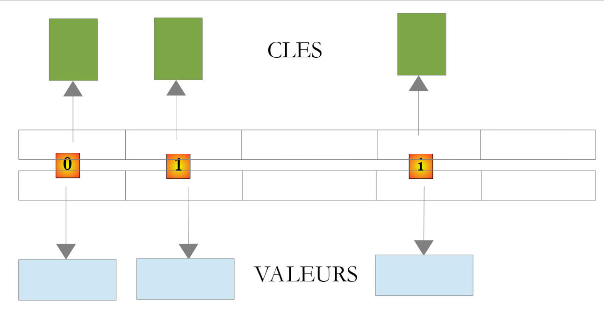

5. Classes Kotlin d'usage courant
Nous présentons ici quelques classes et fonctions d'usage courant : chaînes de caractères, tableaux, collections, fichiers, expressions régulières. Kotlin dispose pour cela de deux bibliothèques : sa propre bibliothèque standard (paquetages [kotlin.text], [kotlin.collections], [kotlin.io]…), qui ajoute aux types de base des centaines de fonctions, la plupart sous la forme de fonctions d'extension (chapitre 4), et la bibliothèque du JDK (l'API Java SE), que Kotlin utilise directement, sans aucune adaptation. Nous y ajoutons les opérations fonctionnelles sur les collections ([filter], [map], [groupBy]…) et les séquences, qui sont la façon habituelle, en Kotlin, de rechercher, trier, regrouper ou transformer les éléments d'une collection : elles jouent le rôle de l'API Stream de Java. Auparavant, nous montrons comment obtenir des renseignements sur les milliers de classes et de fonctions disponibles. Cette aide est indispensable au développeur Kotlin, même confirmé.
Les exemples de ce chapitre, sauf l'application exemple de la fin, sont des programmes d'un seul fichier, rangés comme au chapitre 3 dans le projet Gradle [05-classes-kotlin] du code du cours : le programme [Chaines01.kt] est dans le paquetage [chaines01] (dossier [src/main/kotlin/chaines01]) et s'exécute par la commande [gradlew -q run -Pmain=chaines01.Chaines01Kt] ou par le triangle vert d'IntelliJ IDEA. Ils s'exécutent, comme tout le cours, en langue française (locale fr-FR). Rappelons que tout fichier Kotlin importe automatiquement les paquetages [kotlin.*], [kotlin.text.*], [kotlin.collections.*], [kotlin.ranges.*], [kotlin.sequences.*], [kotlin.io.*]… ainsi que [java.lang.*] : les fonctions de la bibliothèque standard s'utilisent donc sans instruction [import]. En revanche, les classes des autres paquetages du JDK ([java.util], [java.text], [java.time], [java.nio.file]…) doivent être importées, alors que le cours Java en était dispensé par les fichiers source compacts.
5.1. Chercher de l'aide sur les classes Kotlin
La bibliothèque standard de Kotlin compte plusieurs milliers de fonctions, et un programme Kotlin pour la JVM a en outre accès aux plus de 4 000 classes publiques du JDK. Personne ne les connaît toutes : le développeur Kotlin consulte sans cesse leur documentation. Celle-ci est en ligne, gratuite, et tenue à jour pour chaque version.
5.1.1. La documentation en ligne
Le point d'entrée est le site kotlinlang.org de JetBrains. On y trouve :
- la référence de la bibliothèque standard : https://kotlinlang.org/api/core/kotlin-stdlib/. Elle décrit, paquetage par paquetage ([kotlin.text], [kotlin.collections], [kotlin.io]…), toutes les classes, interfaces et fonctions de la bibliothèque, y compris les fonctions d'extension, classées sous le type qu'elles étendent : la page de [String] présente ainsi aussi bien ses membres ([length], [get]…) que les dizaines de fonctions d'extension qui s'y appliquent ([substringBefore], [padStart], [lines]…) ;
- une zone de recherche, en haut de chaque page, dans laquelle on tape un nom de classe ou de fonction ([buildString], [joinToString]…) ;
- la documentation du langage (Language guide), avec ses pages sur les chaînes, les collections, les séquences…, et une page « What's new » qui décrit les nouveautés de chaque version. Les évolutions du langage sont discutées publiquement sous la forme de propositions, les KEEP (Kotlin Evolution and Enhancement Process), consultables sur github.com/Kotlin/KEEP ;
- play.kotlinlang.org, le « bac à sable » de Kotlin : on y tape et exécute un programme dans le navigateur, sans rien installer.
Pour les classes du JDK utilisées par un programme Kotlin ([java.time.LocalDate], [java.text.Collator], [java.nio.file.Files]…), la référence reste celle de l'API Java SE 25 : https://docs.oracle.com/en/java/javase/25/docs/api/. Elle décrit les classes avec la syntaxe de Java, qu'il faut transposer : un [int] est un [Int], un [String[]] un [Array<String>], une méthode [getNom()] s'utilise comme une propriété [nom]…
La page d'une classe ou d'une fonction, par exemple kotlin.String, donne :
- le paquetage de la classe et les plates-formes où elle existe (Kotlin s'exécute aussi en JavaScript et en code natif : certaines fonctions sont propres à la JVM) ;
- sa déclaration, ses types parents et les interfaces qu'elle implémente ;
- une description générale, souvent accompagnée d'exemples exécutables ;
- la liste de ses constructeurs, propriétés et fonctions, membres et extensions, puis le détail de chacun : paramètres, valeur rendue, exceptions possibles, et la version de Kotlin qui l'a introduit (rubrique « Since Kotlin »).
La documentation est en anglais. Une recherche avec le nom de la fonction précédé de « kotlin » (« kotlin joinToString ») mène en général directement à la bonne page.
5.1.2. KDoc et l'aide de l'éditeur
Comme la Javadoc pour Java, cette documentation est produite à partir des commentaires de documentation écrits dans le code source, appelés en Kotlin KDoc. Un tel commentaire commence par [/**] et se place juste avant une classe, une propriété ou une fonction. La fonction de calcul de l'impôt de l'application exemple de ce chapitre pourrait être documentée ainsi :
Le commentaire commence par une phrase de résumé ; les balises [@param] décrivent les paramètres et [@return] la valeur rendue ([@throws] décrirait une exception, [@property] une propriété d'une classe). Contrairement à la Javadoc, qui utilise des balises HTML, le texte d'un commentaire KDoc s'écrit en Markdown : [*italique*], [**gras**], listes, et des liens vers d'autres éléments du code écrits entre crochets, comme [[salaire]] ou [[TrancheImpot]]. L'outil Dokka de JetBrains, ajouté au projet comme greffon Gradle ([id("org.jetbrains.dokka")]), en produit des pages HTML semblables à celles de la référence de Kotlin.
L'éditeur de code (IntelliJ IDEA, Visual Studio Code avec l'extension Kotlin) exploite ces commentaires et fournit une aide immédiate, sans quitter le code :
- l'autocomplétion : après avoir tapé [uneChaine.], l'éditeur propose la liste des propriétés et des fonctions applicables à l'objet, membres et fonctions d'extension mêlés (celles-ci sont signalées par le type qu'elles étendent, par exemple [for String in kotlin.text]), avec leurs paramètres et leur type de résultat ;
- la documentation rapide : placer la souris sur un nom de classe ou de fonction (ou taper Ctrl+Q dans IntelliJ IDEA) affiche son KDoc ou, pour une classe du JDK, sa Javadoc ;
- l'aide sur les paramètres : en tapant la parenthèse ouvrante d'un appel (ou Ctrl+P dans IntelliJ IDEA), l'éditeur affiche les différentes surcharges de la fonction, le nom et le rôle de chaque paramètre, et ses éventuelles valeurs par défaut ;
- atteindre la définition (Ctrl+B dans IntelliJ IDEA, F12 dans VS Code) : affiche le code source de la classe ou de la fonction. Gradle télécharge le code source de la bibliothèque standard de Kotlin, et le JDK est livré avec celui de sa propre bibliothèque (fichier [lib/src.zip]) : on peut ainsi lire le code de [joinToString] ou de [java.util.ArrayList], ce qui est très formateur. Le code de la bibliothèque standard de Kotlin est souvent très court, car il s'appuie sur les classes du JDK ;
- montrer le bytecode Kotlin (menu Tools > Kotlin > Show Kotlin Bytecode, puis bouton Decompile) : affiche, sous la forme d'un code Java équivalent, ce que le compilateur a produit à partir du code Kotlin. C'est le moyen de comprendre ce que deviennent une fonction d'extension, une propriété ou un [when].
Enfin, pour essayer une fonction sans écrire de programme, IntelliJ IDEA propose les fichiers brouillons (File > New > Scratch File > Kotlin) : on y tape des instructions, et leurs résultats s'affichent en regard de chaque ligne. En ligne de commande, le lanceur [kotlinr] du compilateur (chapitre 2) évalue une expression : [kotlinr -e 'println("abc".repeat(3))'] affiche [abcabcabc].
5.2. Les chaînes de caractères
5.2.1. Le type String
Le type [String] (paquetage [kotlin]) représente les chaînes de caractères. Sur la JVM, une chaîne Kotlin est un objet [java.lang.String] : le compilateur fait correspondre les deux types, et une chaîne passe de Kotlin à Java (et inversement) sans aucune conversion. Mais le type [String] vu par Kotlin ne présente que quatre membres ([length], [get], [subSequence], [compareTo]) et l'opérateur [plus] : toutes les autres opérations sont des fonctions d'extension de la bibliothèque standard (paquetage [kotlin.text]), qui s'appellent comme des méthodes. Les méthodes Java de [java.lang.String] qui ont un équivalent Kotlin sont masquées : ["abc".strip()] est refusé par le compilateur ([unresolved reference 'strip' on receiver of type 'String']) ; on écrit ["abc".trim()]. En voici quelques-unes :
propriété ou fonction | rôle |
[length: Int] | propriété : nombre de caractères de la chaîne |
[operator fun get(index: Int): Char] | le caractère n° [index] ; le premier a le n° 0. S'écrit [s[index]] |
[startsWith(prefix: String, ignoreCase = false)] | rend [true] si la chaîne commence par [prefix] |
[endsWith(suffix: String, ignoreCase = false)] | rend [true] si la chaîne se termine par [suffix] |
[contains(other: CharSequence, ignoreCase = false)] | rend [true] si la chaîne contient [other] ; s'écrit aussi [other in s] |
[equals(other: String?, ignoreCase = false)] | rend [true] si la chaîne a le même contenu que [other] ; l'opérateur [==] appelle [equals] |
[indexOf(string: String, startIndex = 0, ignoreCase = false)] | première position de [string] dans la chaîne, à partir de la position [startIndex], ou -1. Une autre surcharge cherche un caractère |
[lastIndexOf(char: Char, ...)] | idem [indexOf] mais rend la dernière position au lieu de la première |
[joinToString(separator = ", ", prefix = "", postfix = "")] | fonction d'extension des collections et des tableaux : concatène les éléments en les séparant par [separator] |
[replace(oldChar: Char, newChar: Char, ignoreCase = false)] | rend une copie de la chaîne où le caractère [oldChar] a été remplacé par [newChar] ; une surcharge remplace une chaîne par une autre |
[split(vararg delimiters: String, ...): List<String>] | la chaîne est vue comme une suite de champs séparés par l'un des séparateurs [delimiters], pris littéralement ; le résultat est la liste de ces champs. Une surcharge reçoit une expression régulière [Regex] |
[substring(startIndex: Int, endIndex: Int)] | sous-chaîne formée des caractères de la position [startIndex] (incluse) à la position [endIndex] (exclue) ; [substring(range: IntRange)] reçoit un intervalle |
[substringBefore(delimiter)], [substringAfter(delimiter)] | partie de la chaîne qui précède, qui suit la première occurrence de [delimiter] ([substringBeforeLast], [substringAfterLast] : la dernière) |
[lowercase()], [uppercase()] | rend la chaîne en minuscules, en majuscules |
[trim()] | rend la chaîne débarrassée de ses espaces de début et de fin ([trimStart], [trimEnd] : d'un seul côté) |
[repeat(n: Int)] | rend la chaîne répétée [n] fois |
[reversed()] | rend la chaîne inversée |
[isEmpty()], [isBlank()] | rend [true] si la chaîne est vide, si elle est vide ou ne contient que des espaces |
[lines(): List<String>] | rend la liste des lignes de la chaîne |
[format(vararg args: Any?)] | rend la chaîne, utilisée comme format, dans laquelle les emplacements [%s], [%d]… ont été remplacés par les arguments |
On remarquera les nombreux paramètres [ignoreCase], qui ont la valeur par défaut [false] : Kotlin n'a pas besoin, comme Java, de méthodes distinctes [equals] et [equalsIgnoreCase] ; on écrit [s.equals(autre, ignoreCase = true)] grâce aux arguments nommés (chapitre 3).
On notera un point important : une chaîne de type [String] est immuable, elle ne peut pas être modifiée après sa création. Lorsqu'une fonction rend une chaîne de caractères, celle-ci est une chaîne différente de la chaîne sur laquelle a été appliquée la fonction. Ainsi [s1.trim()] rend une chaîne [s2], et [s1] et [s2] sont deux chaînes différentes : [s1] n'a pas changé.
Une chaîne Kotlin n'est pas un tableau, mais grâce à l'opérateur [get] (chapitre 4), on accède à son caractère n° [i] par la même notation [c[i]] qu'à l'élément d'un tableau, là où Java impose [c.charAt(i)]. De même, le nombre de caractères est la propriété [c.length], et la taille d'un tableau la propriété [tableau.size] : Kotlin n'a pas l'incohérence de Java entre la méthode [length()] des chaînes et le champ [length] des tableaux.
Le programme [Chaines01.kt] est le suivant :
Résultats :
Commentaires :
- lignes 7-8 : la longueur est une propriété, et l'opérateur [[10]] donne le caractère n° 10, donc le 11e caractère de la chaîne ;
- lignes 10, 12 : une recherche infructueuse rend -1 ;
- ligne 13 : les deux paramètres de [substring] sont les positions du premier caractère gardé et du premier caractère non gardé : on obtient les 7 caractères des positions 4 à 10. C'est la convention générale de Kotlin comme de Java pour désigner une plage d'indices (début inclus, fin exclue) : on la retrouvera dans de nombreuses fonctions ;
- ligne 14 : une surcharge de [substring] reçoit un intervalle [IntRange] (chapitre 3), dont les deux bornes sont incluses : [4..10] désigne les mêmes caractères que les paramètres [(4, 11)]. On aurait pu écrire aussi [4 until 11] ou [4..<11] ;
- ligne 15 : [uppercase] et [lowercase] (Kotlin 1.5) ne dépendent pas de la langue de la machine (elles utilisent les règles d'Unicode, indépendantes de la langue) ; les anciennes [toUpperCase] et [toLowerCase] de Java, qui en dépendaient (en turc, le i minuscule devient İ), sont dépréciées en Kotlin ;
- lignes 18-22 : le type [String] n'a pas de fonction d'insertion : on recolle le début de la chaîne, le texte inséré et la fin de la chaîne, ou bien on utilise [replaceRange], qui remplace les caractères d'une plage par un texte : remplacer la plage vide qui commence en position 9 revient à insérer. Nous verrons que la classe [StringBuilder] a une fonction [insert] ;
- ligne 24 : [split] découpe la chaîne en champs et rend une liste ([List<String>], présentée plus loin), et non un tableau comme en Java. Attention, c'est une différence importante avec Java : avec un paramètre [String], le séparateur de [split] est pris littéralement ; pour qu'il soit une expression régulière, que nous étudierons à la fin du chapitre, il faut passer un objet [Regex]. [\s+] désigne une suite d'un ou plusieurs espaces (espace, tabulation, saut de ligne…). Elle est écrite dans une chaîne brute délimitée par trois guillemets, où le caractère [\] est un caractère ordinaire et n'a pas à être doublé (nous y revenons plus loin) ;
- ligne 25 : la propriété [indices] d'une liste (ou d'un tableau) est l'intervalle de ses indices, ici [0..4] ;
- ligne 28 : [joinToString] fait l'inverse de [split]. C'est une fonction d'extension des listes et des tableaux, là où Java propose la méthode statique [String.join] ;
- ligne 29 : [trim] supprime les espaces de début et de fin. Le [trim] de Kotlin reconnaît tous les espaces d'Unicode (il utilise la fonction [Char.isWhitespace]) : il correspond donc à la méthode [strip] de Java, et non à la méthode [trim] de Java, qui ne reconnaît que les espaces du code ASCII ;
- lignes 31-35 : quelques fonctions de la bibliothèque Kotlin sans équivalent direct dans la classe [String] de Java : [substringBefore] et [substringAfterLast] rendent ce qui précède le premier espace et ce qui suit le dernier, sans calcul de positions ; [reversed] inverse la chaîne ; [count] compte les caractères qui vérifient une condition, exprimée par une lambda : [{ it == 'e' }] est une fonction anonyme dont le paramètre implicite [it] est le caractère examiné (les lambdas sont étudiées au chapitre 7). Comme sa lambda est le dernier argument de [count], elle est écrite après le nom de la fonction, sans parenthèses ; enfin [lines] découpe un texte en lignes, quelle que soit la fin de ligne utilisée ([\n], [\r\n] ou [\r]), et rend la liste des lignes ;
- ligne 37 : toutes les fonctions précédentes ont rendu de nouvelles chaînes : [uneChaine] n'a pas été modifiée (dernière ligne des résultats) ;
- lignes 41-42 : une fonction de haut niveau, appelée par la fonction [main] comme au chapitre 3.
5.2.2. Les fonctions split et joinToString
Le programme [Chaines02.kt] approfondit le découpage d'une chaîne en champs. Le lecteur qui vient de Java y trouvera deux différences importantes avec la méthode [split] de Java :
Résultats :
Commentaires :
- ligne 7 : les champs sont séparés par le caractère [:]. Deux [:] consécutifs délimitent un champ vide (ligne 3 des résultats), et le [:] final de la chaîne délimite un cinquième champ, vide lui aussi, qui est gardé (ligne 5 des résultats). C'est la première différence avec Java, dont la méthode [split] supprime les champs vides de la fin : en Kotlin, [joinToString] reconstitue toujours la chaîne de départ (ligne 6 des résultats). Le comportement de Kotlin est plus régulier : une chaîne qui contient n séparateurs donne toujours n + 1 champs. Pour retrouver le comportement de Java, on écrirait [ligne.split(":").dropLastWhile { it.isEmpty() }] ;
- ligne 8 : la fonction [withIndex] permet de parcourir une liste en disposant à la fois de l'indice et de l'élément, que l'on récupère par une déstructuration (chapitre 3) ;
- ligne 15 : le paramètre facultatif [limit] de [split] fixe le nombre maximal de champs : le découpage s'arrête au premier séparateur et le dernier champ contient toute la fin de la chaîne. On utilise une limite, par exemple, pour séparer le nom d'un paramètre de sa valeur dans une ligne [nom=valeur] lorsque la valeur peut elle-même contenir le séparateur. On notera que l'affichage d'une liste par un gabarit ([$champs]) donne ses éléments entre crochets, séparés par des virgules : c'est le [toString] des listes ;
- ligne 19 : la seconde différence avec Java : un séparateur de type [String] est pris littéralement ; pour décrire un séparateur par une expression régulière, il faut passer un objet [Regex]. [":+"] désigne un ou plusieurs caractères [:] consécutifs. Les deux [:] consécutifs forment un seul séparateur et le champ vide intermédiaire disparaît ; le dernier champ vide, lui, reste ;
- ligne 24 : [split] accepte plusieurs séparateurs ([vararg], chapitre 3), caractères ou chaînes : ici la virgule et le point-virgule. La fonction [map] applique ensuite à chaque champ la lambda [{ it.trim() }] et rend la liste des résultats : on obtient en une instruction les trois champs « nettoyés ». Les fonctions [map], [filter] et leurs nombreuses sœurs sont présentées plus loin dans ce chapitre ;
- ligne 27 : la même chose avec une expression régulière : le modèle [\s*[,;]\s*] désigne une virgule ou un point-virgule, précédé et suivi d'un nombre quelconque d'espaces ; les espaces qui entourent les séparateurs disparaissent avec eux. Ceux du début et de la fin de la chaîne sont supprimés auparavant par [trim]. Le modèle est écrit dans une chaîne brute, sans doubler les [\] ; la ligne suivante utilise aussi une chaîne brute, pour afficher le modèle tel quel ;
- lignes 32-36 : pour supprimer à la fois les espaces autour des champs et les champs vides, on peut traiter les champs un par un : le champ formé de deux espaces entre deux virgules devient vide après [trim] et n'est pas gardé. La liste modifiable créée par [mutableListOf] pour mémoriser les champs gardés sera présentée un peu plus loin ;
- ligne 41 : la même chose en une instruction : [map] enlève les espaces de chaque champ, puis [filter] ne garde que les champs non vides. C'est l'écriture idiomatique en Kotlin ;
- ligne 46 : le séparateur [" | "] contient le caractère [|], qui a une signification particulière dans une expression régulière (« ou »). Comme le séparateur est pris littéralement, il n'y a aucune précaution à prendre, alors qu'en Java il faut écrire [split(Pattern.quote(" | "))]. Si l'on doit construire une expression régulière à partir d'un texte quelconque, la fonction [Regex.escape] joue le rôle de [Pattern.quote] ;
- lignes 49-51 : contrairement à [String.join] de Java, qui n'accepte que des chaînes, [joinToString] accepte des éléments de tout type, ici un tableau d'entiers [IntArray] : chaque élément est converti par sa fonction [toString]. Ses paramètres facultatifs [prefix] et [postfix] ajoutent un texte au début et à la fin, et son dernier paramètre, [transform], est une lambda qui convertit chaque élément en texte ; écrite après les parenthèses, elle produit ici les textes « n°1 », « n°2 »… Ce que Java fait avec un [StringJoiner] ou avec l'API Stream tient en un appel.
5.2.3. Rechercher et comparer des chaînes
La comparaison de chaînes est plus subtile qu'il n'y paraît : faut-il distinguer les majuscules des minuscules ? Comment classer « élève » par rapport à « essai » ? Et que compare l'opérateur [==] ? Sur ce dernier point, Kotlin a corrigé un piège célèbre de Java. Le programme [Chaines03.kt] présente les fonctions de recherche et de comparaison :
Résultats :
Commentaires :
- lignes 3-4 : les classes du JDK utilisées par le programme doivent être importées ;
- lignes 11-14 : par défaut, [contains], [startsWith] et [endsWith] font une comparaison exacte, caractère par caractère : « LANGAGE » n'est pas trouvé ;
- ligne 16 : ces fonctions ont un paramètre facultatif [ignoreCase], qui demande d'ignorer la casse. Java n'en a pas l'équivalent : il faut y mettre les deux chaînes en minuscules ;
- ligne 18 : l'opérateur [in] appelle la fonction [contains] (chapitre 4) : ["Kotlin" in titre] se lit naturellement « Kotlin est dans le titre » ;
- lignes 19-21 : la fonction [regionMatches] compare une partie de la chaîne à une partie d'une autre chaîne. Ses paramètres sont la position de départ dans la chaîne, l'autre chaîne, la position de départ dans l'autre chaîne et le nombre de caractères à comparer ; le dernier, facultatif, indique s'il faut ignorer la casse (en Java, ce paramètre vient en premier dans l'une des surcharges) ;
- lignes 23-29 : le point le plus important de ce programme. Une variable de type [String] contient une référence vers un objet chaîne (chapitre 4). La variable [oui] désigne une chaîne « oui » construite à l'exécution : c'est un objet différent de la chaîne littérale « oui » du programme. En Kotlin, l'opérateur [] compare les contenus : il appelle la fonction [equals], et [oui == "oui"] vaut [true] (ligne 8 des résultats). Pour comparer les références, c'est-à-dire savoir si deux variables désignent le même objet, Kotlin a un autre opérateur, [=], et [oui === "oui"] vaut [false] (ligne 9 des résultats). En Java, c'est l'inverse : [] y compare les références, et l'erreur classique qui consiste à écrire [reponse == "oui"] au lieu de [reponse.equals("oui")] n'existe pas en Kotlin. La comparaison sans tenir compte de la casse s'écrit [equals(..., ignoreCase = true)], ce qui est la bonne façon de tester une réponse « oui » saisie au clavier en majuscules ou en minuscules. On n'a pratiquement jamais besoin de [=] avec des chaînes ;
- lignes 32-37 : la fonction [compareTo] rend un entier négatif, nul ou positif selon que la chaîne précède, est égale ou suit la chaîne paramètre. Elle compare les codes des caractères : « élève » suit « essai » car le code du caractère é (233) est supérieur à celui du caractère e (101) ; elle rend ici la différence des deux codes, 132. Comme [String] implémente [Comparable<String>], les opérateurs [<], [>], [<=], [>=] s'appliquent aux chaînes et appellent [compareTo] : [a < b] vaut [false]. Pour classer des mots selon les règles d'une langue, on utilise un objet [java.text.Collator] du JDK : pour le français, le é est classé avec le e, et « élève » précède « essai » (ligne 14 des résultats). On utilisera l'ordre d'un [Collator] pour trier des mots destinés à un utilisateur, et [compareTo] pour comparer des identifiants techniques (noms de fichiers, clés…). La fonction [compareTo] a elle aussi un paramètre [ignoreCase] ;
- lignes 40-48 : [isEmpty] teste une chaîne vide, [isBlank] une chaîne vide ou ne contenant que des espaces. Une chaîne peut aussi être absente : sa variable est alors de type [String?] et vaut [null] (chapitre 3). Ici, [System.getenv], méthode Java qui rend la valeur d'une variable d'environnement, rend [null] car la variable demandée n'existe pas. Le compilateur interdit d'appeler [absente.isBlank()], qui pourrait lancer une exception [NullPointerException]. La bibliothèque propose des fonctions d'extension sur le type [String?], qui acceptent [null] : [isNullOrBlank] (et [isNullOrEmpty]) font le test que Java écrit [absente == null || absente.isBlank()], et [orEmpty] rend la chaîne, ou la chaîne vide si elle est [null]. L'appel sûr [absente?.length] vaut [null] ;
- ligne 51 : [padStart] complète une chaîne à gauche jusqu'à une longueur de 8 caractères, par des espaces ou par le caractère indiqué ([padStart(5, '0')]), et [padEnd] la complète à droite ; [repeat] répète une chaîne. On pourrait aussi utiliser les formats ["%8s"] et ["%-8s"] présentés ci-dessous.
5.2.4. Gabarits, formats et chaînes brutes
Depuis le chapitre 3, nous construisons les chaînes à afficher avec des gabarits de chaîne (string templates) : dans une chaîne, [$nom] est remplacé par la valeur de la variable [nom], et [${expression}] par la valeur d'une expression quelconque. C'est l'interpolation de chaînes que Java n'a pas (une proposition, les « String Templates », y a été essayée en aperçu dans Java 21 et 22, puis retirée) et que le C# écrit [$"{nom}"]. Le compilateur transforme un gabarit en concaténations : il n'y a aucun coût supplémentaire à l'exécution.
Pour aligner des valeurs en colonnes, fixer le nombre de décimales d'un nombre ou afficher une date, on utilise en plus des formats, avec la fonction [String.format] ou la fonction d'extension [format] appliquée au format lui-même, qui font la même chose (et appellent la méthode [String.format] de Java). Le format est un texte dans lequel des spécificateurs [%[-][largeur][.précision]conversion] indiquent où et comment insérer les paramètres suivants. Le programme [Chaines04.kt] en donne des exemples, ainsi que les chaînes brutes de Kotlin :
Résultats :
Commentaires :
- ligne 17 : un gabarit : [$nom] et [$age] sont remplacés par les valeurs des variables, et [${2026 - age}] par la valeur de l'expression. Les accolades sont nécessaires dès que ce qui suit le [$] n'est pas un simple nom de variable : [$personne.nom] insérerait la valeur de [personne] suivie du texte « .nom », alors que [${personne.nom}] insère la propriété [nom] ;
- ligne 19 : une largeur cadre la valeur à droite dans un champ de 10 caractères ; précédée du signe [-], elle la cadre à gauche ;
- lignes 19-21 : les conversions les plus courantes :
spécificateur | signification | exemple (fr-FR) |
[%s] | chaîne ; tout objet est converti par sa fonction [toString] | dupont |
[%d], [%5d] | entier, éventuellement sur 5 caractères | 45 |
[%05d] | entier sur 5 chiffres au moins, complété par des zéros | 00045 |
[%X] | entier en hexadécimal ([%x] : en minuscules) | 2D |
[%.2f], [%12.2f] | nombre réel avec 2 décimales, éventuellement sur 12 caractères | 2345,68 |
[%,.2f], [%,d] | idem avec séparateur des milliers | 2 345,68 |
[%e] | nombre réel en notation scientifique | 2,345678e+03 |
[%n] | fin de ligne du système | |
[%%] | le caractère % | % |
- les nombres sont mis en forme selon la langue courante, ici le français : virgule décimale, espace comme séparateur des milliers. Il s'agit d'une espace fine insécable (caractère U+202F), qui ressemble à une espace ordinaire mais empêche une coupure de ligne au milieu d'un nombre ; de même, une espace insécable (U+00A0) précède le symbole € et le symbole %. On en tiendra compte si l'on compare ces textes à des chaînes écrites avec des espaces ordinaires. Les types des paramètres sont vérifiés à l'exécution seulement : passer un [Int] à la conversion [%f] lance une exception [IllegalFormatConversionException] ;
- ligne 23 : ["...".format(...)] est l'équivalent de [String.format("...", ...)] (et de la méthode [formatted] de Java). Comme [if] est une expression en Kotlin (chapitre 3), il peut fournir un paramètre, là où Java utilise l'opérateur conditionnel [? :] ;
- ligne 25 : un gabarit ne met pas en forme les nombres : il appelle la fonction [toString] de la valeur, qui affiche un [Double] avec un point décimal et toutes ses décimales, quelle que soit la langue de la machine. Pour un affichage destiné à un utilisateur, on combine gabarit et format : [${"%.2f".format(salaire)}]. Une surcharge de [format] reçoit en premier paramètre la langue à utiliser : [Locale.US] donne un point décimal ;
- lignes 29-32 : les montants monétaires et les pourcentages sont mis en forme par des objets [java.text.NumberFormat] du JDK, obtenus pour une langue et un pays donnés ([Locale.FRANCE]). Le format pourcentage multiplie la valeur par 100. On remarquera la ligne 31 : la méthode Java [setMinimumFractionDigits(2)] s'utilise en Kotlin comme l'affectation d'une propriété. Kotlin voit en effet les couples de méthodes Java [getXxx()]/[setXxx(...)] comme des propriétés [xxx] ;
- lignes 34-37 : les dates de l'API [java.time] du JDK sont mises en forme par un objet [DateTimeFormatter] construit à partir d'un modèle : [dd] jour, [MM] mois, [yyyy] année, [HH] heure, [mm] minutes, [ss] secondes, [EEEE] jour de la semaine en toutes lettres, [MMMM] mois en toutes lettres. Attention à la casse : [MM] est le mois, [mm] les minutes. Les noms des jours et des mois sont ceux de la langue courante. Les gabarits peuvent contenir des expressions qui contiennent elles-mêmes des chaînes : ["[${date.format(DateTimeFormatter.ofPattern("dd/MM/yyyy"))}] "] ;
- lignes 40-43 : les largeurs permettent d'afficher des données en colonnes ;
- ligne 47 : dans une chaîne ordinaire, le caractère [\] introduit une séquence d'échappement ([\n], [\t], [\"], [\$]…) ; pour obtenir le caractère [\] lui-même, il faut le doubler ;
- ligne 50 : une chaîne brute (raw string) est délimitée par trois guillemets. Les séquences d'échappement n'y existent pas : le caractère [\] y est un caractère ordinaire. C'est la façon commode d'écrire les chemins Windows et les expressions régulières, que Java ne connaît pas (ses blocs de texte gardent les séquences d'échappement). On ne peut pas, en revanche, y écrire de saut de ligne [\n] : il faut un vrai passage à la ligne ;
- lignes 54-61 : une chaîne brute peut s'étendre sur plusieurs lignes et contenir des guillemets sans échappement. Elle garde tout ce qui est écrit entre les guillemets, y compris la marge du code et les lignes vides du début et de la fin. La fonction [trimIndent] supprime la première et la dernière ligne si elles sont blanches, puis l'indentation commune à toutes les lignes (celle de la ligne la moins indentée) : le texte JSON s'affiche sans la marge du code et sans fin de ligne finale, donc avec [println]. C'est l'équivalent des blocs de texte de Java 15, mais réalisé par une fonction de la bibliothèque. Contrairement aux blocs de texte de Java, les gabarits fonctionnent dans les chaînes brutes : ["$nom"] et [${prix[0]]} y sont remplacés par leurs valeurs, ce qui évite le recours à [format] ; le [\] de ["C:\data"] n'a pas à être doublé ;
- ligne 59 : comme les séquences d'échappement n'existent pas dans une chaîne brute, on ne peut pas y écrire [\$] pour obtenir un [$] suivi d'un nom sans qu'il soit pris pour un gabarit : on écrit [${'$'}], gabarit dont l'expression est le caractère [$]. Depuis Kotlin 2.2, on peut aussi préfixer la chaîne de plusieurs [$] ([$$"""..."""]) : seules les suites de deux [$] introduisent alors un gabarit, ce qui est commode pour écrire des textes qui contiennent beaucoup de [$] ;
- lignes 64-68 : la fonction [trimMargin] offre une autre façon d'indiquer la marge : chaque ligne commence, après d'éventuels espaces, par un caractère de marge, [|] par défaut, et tout ce qui précède ce caractère, caractère compris, est supprimé. On choisit la fonction la plus lisible : [trimIndent] pour un texte copié tel quel, [trimMargin] lorsque la première colonne du texte doit être bien visible.
On rencontre aussi la classe [java.text.MessageFormat], dont les formats désignent les paramètres par leur numéro : [MessageFormat.format("{0} a {1} ans", nom, age)]. Elle est utilisée pour les messages traduits en plusieurs langues, où l'ordre des paramètres peut changer d'une langue à l'autre ; elle s'utilise en Kotlin exactement comme en Java.
5.2.5. La classe StringBuilder
Nous avons dit que les fonctions du type [String] qui s'appliquent à une chaîne [s1] rendent une autre chaîne [s2]. La classe [StringBuilder] permet de modifier une chaîne sans créer de nouvelle chaîne à chaque opération. Cela améliore les performances lorsqu'on construit une chaîne par de nombreux ajouts successifs, en évitant la multiplication de chaînes à durée de vie très limitée. En Kotlin pour la JVM, [kotlin.text.StringBuilder] est un alias de type ([typealias]) de la classe [java.lang.StringBuilder] du JDK : c'est la même classe, que la bibliothèque standard enrichit de quelques fonctions d'extension ([appendLine], l'opérateur [[]]…). Elle s'utilise sans [import].
La classe admet divers constructeurs :
constructeur | rôle |
[StringBuilder()] | construction d'un objet vide, de capacité initiale 16 caractères |
[StringBuilder(str: String)] | construction et initialisation avec [str] ; la capacité initiale est la longueur de [str] plus 16 |
[StringBuilder(capacity: Int)] | construction d'un objet vide, de capacité initiale [capacity] caractères |
Un objet [StringBuilder] stocke ses caractères dans un tableau dont la taille, sa capacité, est ajustée automatiquement lorsque le texte grandit. Le programme [Chaines05.kt] illustre cette notion de capacité :
Résultats :
Commentaires :
- ligne 5 : création d'un objet [StringBuilder] contenant « test » : sa capacité initiale est de 4 + 16 = 20 caractères. Comme pour toute classe en Kotlin, il n'y a pas d'opérateur [new] ;
- ligne 6 : [length] est le nombre actuel de caractères. Kotlin le présente comme une propriété (sans parenthèses), comme pour [String] : la méthode Java [length()] de l'interface [CharSequence] est vue en Kotlin comme la propriété [length]. [capacity()], qui ne fait pas partie de cette interface et ne suit pas la convention [getXxx()], reste une méthode : c'est le nombre de caractères que l'objet peut contenir avant de devoir agrandir son tableau ;
- ligne 7 : la fonction [repeat] de la bibliothèque standard exécute 10 fois la lambda qui la suit (chapitre 3) ;
- ligne 8 : [append] ajoute une chaîne à la fin du texte ;
- ligne 12 : création d'un objet [StringBuilder] vide de capacité initiale 10, auquel on ajoute aussitôt « test ». La méthode [append] rend l'objet lui-même : on peut l'appeler directement sur le résultat du constructeur.
Les résultats, identiques à ceux du programme Java puisque c'est la même classe, montrent que lorsque la capacité est insuffisante, elle est un peu plus que doublée : la nouvelle capacité est l'ancienne multipliée par 2, plus 2 (20, 42, 86 pour le premier objet ; 10, 22, 46 pour le second). Chaque agrandissement alloue un nouveau tableau et y recopie les caractères. Si l'on connaît à l'avance la taille approximative du texte, la fixer dès la construction évite ces agrandissements successifs.
Voici quelques-unes des fonctions de la classe :
fonction | rôle |
[append(str: String?): StringBuilder] | ajoute [str] à la fin du texte. Surchargée pour accepter les types [Int], [Double], [Char], [Boolean], [Any?]… |
[appendLine(value)] | extension Kotlin : ajoute [value] puis une fin de ligne [\n] ; sans paramètre, ajoute seulement la fin de ligne |
[insert(offset: Int, str: String?)] | insère [str] à la position [offset] ; surchargée comme [append] |
[delete(start: Int, end: Int)] | supprime les caractères des positions [start] (incluse) à [end] (exclue) ; [deleteCharAt] supprime un caractère |
[replace(start: Int, end: Int, str: String)] | remplace les caractères des positions [start] (incluse) à [end] (exclue) par [str] |
[reverse()] | inverse l'ordre des caractères |
[sb[index]], [sb[index] = ch] | lit, remplace le caractère n° [index] (opérateurs [get] et [set] ; [set] est une extension Kotlin de la méthode Java [setCharAt]) |
[indexOf(str: String)] | position de [str] dans le texte, ou -1 |
[toString()] | rend le texte sous la forme d'une chaîne [String] |
Le programme [Chaines06.kt] les utilise, ainsi que la fonction [buildString], qui est la façon idiomatique de construire une chaîne en Kotlin :
Résultats :
Commentaires :
- ligne 6 : les méthodes de modification rendent l'objet [StringBuilder] lui-même, ce qui permet de les enchaîner. Suivons les étapes : « test » devient « testabCD » ([append]), puis « texyZTstabCD » ([insert] en position 2), puis « xyZTstabCD » ([delete] des caractères 0 et 1), enfin « XYZTstabCD » ([replace] des caractères 0 et 1 par « XY »). On notera que, contrairement à la fonction [replace] de [String], celle de [StringBuilder] ne recherche pas un texte : elle remplace une plage de positions. [println] affiche l'objet en appelant sa fonction [toString] ;
- lignes 8-9 : l'opérateur [[]] lit et modifie un caractère, comme dans un tableau ; [str3[0] = 'x'] appelle [str3.setCharAt(0, 'x')]. Dans le gabarit, [$str3] appelle [toString] ;
- ligne 11 : [reverse] inverse le texte. Pour une chaîne [String], la fonction [reversed], vue dans [Chaines01.kt], est plus simple ;
- lignes 14-16 : la construction d'un texte de plusieurs lignes par ajouts successifs : c'est l'usage typique de [StringBuilder]. Les ajouts s'enchaînent sur une même ligne de code ;
- lignes 19-20 : la fonction [joinTo] est la sœur de [joinToString] : au lieu de créer une nouvelle chaîne, elle ajoute les éléments séparés par le séparateur à un [StringBuilder] existant (plus exactement à tout objet [Appendable]) ; [appendLine] ajoute ensuite une fin de ligne ;
- ligne 23 : on ajoute une chaîne formatée. La conversion [%f] exige un nombre réel : passer l'entier [total] lancerait une exception [IllegalFormatConversionException] à l'exécution, d'où la conversion [total.toDouble()] ;
- ligne 25 : le texte final est obtenu sous la forme d'une chaîne [String] ;
- lignes 30-35 : la fonction [buildString] crée un [StringBuilder], exécute la lambda qui la suit, puis rend le texte construit sous la forme d'une [String]. Dans la lambda, le [StringBuilder] est le receveur implicite ([this]) : on écrit [appendLine(...)] et non [sb.appendLine(...)]. Ce type de lambda, appelé lambda avec receveur, est étudié au chapitre 7 ; il permet d'écrire des « blocs de construction » très lisibles. La variable [tableau] est un [String] immuable, déclaré par [val], et le [StringBuilder] intermédiaire n'est même pas visible. On remarquera aussi comment [padStart] aligne des nombres à droite dans les colonnes ;
- ligne 40 : pour une suite d'éléments séparés par un séparateur, avec un préfixe et un suffixe, [joinToString] rend le service de la classe [java.util.StringJoiner] de Java, qui reste utilisable mais n'a guère d'intérêt en Kotlin.
Pour quelques concaténations, l'opérateur [+] et les gabarits suffisent : le compilateur les optimise. [StringBuilder] (ou [buildString]) s'impose lorsque le nombre d'ajouts est grand ou inconnu, typiquement dans une boucle : la concaténation [s += ...] dans une boucle de n tours crée n chaînes et recopie à chaque tour toute la chaîne déjà construite. On rencontre dans le code Java ancien la classe [StringBuffer], qui a les mêmes méthodes que [StringBuilder] mais les rend utilisables simultanément par plusieurs threads, au prix d'une certaine lenteur : on lui préfère aujourd'hui [StringBuilder].
5.2.6. Analyser une chaîne sans la copier
Chaque appel de [substring] ou de [split] crée de nouvelles chaînes en mémoire. Dans le code dont les performances sont critiques (analyse de fichiers volumineux, de requêtes réseau…), on peut vouloir éviter ces créations. Ni Kotlin ni Java n'ont de type « vue sur une partie de chaîne » intégré au langage, mais plusieurs fonctions travaillent sur une partie d'une chaîne sans la copier. Le programme [Chaines07.kt] compare plusieurs façons d'analyser une ligne « nom:prénom:âge » :
Résultats :
Commentaires :
- ligne 10 : la façon la plus lisible, et la plus courante en Kotlin : [split] rend une liste de trois chaînes, que la déstructuration (chapitre 3) range dans trois variables ; [toInt] convertit ensuite l'âge en entier. Mais elle crée une liste et trois chaînes ;
- lignes 16-17 : avec [substring], chaque appel crée une nouvelle chaîne, même si, comme pour l'âge, elle n'est utilisée qu'un instant ;
- ligne 21 : la fonction [toInt] de Kotlin ne s'applique qu'à une chaîne entière ; mais la méthode statique [Integer.parseInt] du JDK a une surcharge (Java 9) qui analyse les caractères compris entre deux positions de la chaîne, dans la base indiquée (ici 10), sans créer de sous-chaîne. Un programme Kotlin peut l'appeler directement : c'est tout l'intérêt de l'interopérabilité avec Java ;
- ligne 23 : [regionMatches], déjà rencontrée, compare une partie de la chaîne à une autre chaîne sans copie ;
- ligne 27 : [CharBuffer.wrap] (paquetage [java.nio] du JDK) rend une vue sur les caractères 0 à [p1] - 1 de la chaîne : un objet qui ne contient pas de copie des caractères, mais un moyen d'y accéder. Il implémente l'interface [CharSequence], comme [String] et [StringBuilder]. On notera que la fonction [subSequence] de [String], membre de cette interface, n'est pas une vue : pour une chaîne, elle fait comme [substring] une copie des caractères (elle rend une vue pour un [CharBuffer]). Kotlin voit la méthode Java [charAt] de cette interface comme l'opérateur [[]], et sa méthode [length()] comme la propriété [length] ;
- lignes 30-31 : une grande partie des fonctions d'extension de [kotlin.text] sont définies non pas sur [String], mais sur [CharSequence] : [startsWith], [count], [contains], [indexOf], [split], [lines]… s'appliquent donc aussi à une vue, ou à un [StringBuilder], sans conversion préalable en [String]. Les expressions régulières, que nous verrons à la fin du chapitre, acceptent elles aussi un [CharSequence] ;
- ligne 34 : le second paramètre de [indexOf] est la position à partir de laquelle on cherche ;
- ligne 37 : on ne crée une chaîne que si on en a réellement besoin.
Ces techniques sont des outils d'optimisation : pour un programme ordinaire, [split] et [substring] conviennent parfaitement. La machine virtuelle stocke d'ailleurs les chaînes qui ne contiennent que des caractères du jeu Latin-1 (c'est le cas des textes français) sur un octet par caractère au lieu de deux (« chaînes compactes », Java 9), ce qui divise par deux la mémoire qu'elles occupent ; les chaînes Kotlin, qui sont des chaînes Java, en profitent. On ne cherchera à éviter les copies que dans le code dont on a mesuré qu'il est critique pour les performances.
5.3. Les tableaux
5.3.1. Les fonctions d'extension des tableaux
Nous avons vu au chapitre 3 que Kotlin a deux sortes de tableaux : les tableaux d'objets [Array<T>] (créés par [arrayOf]), et les tableaux de types de base [IntArray], [DoubleArray], [CharArray]… (créés par [intArrayOf], [doubleArrayOf]…), compilés en tableaux de types primitifs de Java ([int[]], [double[]]…). En Java, les tableaux n'ont pas de méthodes utiles : en dehors du champ [length], toutes les opérations sont des méthodes statiques de la classe utilitaire [java.util.Arrays]. En Kotlin, les tableaux ont une propriété [size], les opérateurs [[]], et surtout des dizaines de fonctions d'extension de la bibliothèque standard (paquetage [kotlin.collections]), qui s'appellent comme des méthodes : [tableau.sort()] au lieu de [Arrays.sort(tableau)]. Elles permettent de trier un tableau, d'y rechercher un élément, de le copier, de le remplir… Elles existent pour chaque sorte de tableau ([IntArray], [DoubleArray]…, [Array<T>]) et appellent le plus souvent, sur la JVM, les méthodes de la classe [Arrays].
fonction | rôle |
[binarySearch(element, fromIndex = 0, toIndex = size)] | rend la position de [element] dans le tableau, qui doit être trié ; un nombre négatif si [element] est absent |
[copyOf(newSize: Int)] | rend un nouveau tableau de [newSize] éléments contenant les premiers éléments du tableau, complété si besoin par des 0 ([false] pour les booléens) ; pour un [Array<T>], le résultat est un [Array<T?>] complété par des [null]. Sans paramètre, rend une copie de même taille |
[copyOfRange(fromIndex: Int, toIndex: Int)] | rend un nouveau tableau formé des éléments de [fromIndex] (inclus) à [toIndex] (exclu) ; [sliceArray(range)] fait de même avec un intervalle |
[copyInto(destination, destinationOffset = 0, startIndex = 0, endIndex = size)] | copie des éléments du tableau dans un autre tableau existant (équivalent de [System.arraycopy]) |
[contentEquals(other)] | rend [true] si les deux tableaux ont les mêmes éléments, dans le même ordre |
[fill(element, fromIndex = 0, toIndex = size)] | affecte [element] à tous les éléments du tableau, ou à une plage d'indices |
[sort()], [sort(fromIndex, toIndex)] | trie le tableau, ou une plage d'indices, selon l'ordre naturel de ses éléments ; [sortWith(comparator)] trie un tableau d'objets selon un [Comparator] (chapitre 4) ; [sortDescending()] trie en ordre décroissant |
[sorted()], [sortedWith(comparator)] | rend une liste triée, sans modifier le tableau |
[reverse()], [reversed()] | inverse le tableau ; rend une liste inversée |
[contentToString()] | rend les éléments du tableau sous la forme d'une chaîne [[e1, e2, ...]] ; [contentDeepToString] fait de même pour un tableau de tableaux |
[indexOf(element)], [lastIndexOf(element)], [contains(element)] | recherche linéaire : première ou dernière position de [element], ou -1 ; présence de [element] ([element in tableau]) |
[asList()] | rend une liste qui est une vue sur le tableau |
[toList()], [toMutableList()] | rend une nouvelle liste, en lecture seule ou modifiable, contenant les éléments du tableau |
[plus(element)] | rend un nouveau tableau, plus grand d'une case, formé des éléments du tableau suivis de [element] ; s'écrit [tableau + element] |
S'y ajoutent les fonctions communes aux tableaux et aux collections ([sum], [max], [count], [filter], [map], [joinToString]…) que nous verrons plus loin.
Le programme [Tableaux01.kt] illustre l'utilisation de certaines de ces fonctions :
Commentaires :
- ligne 4 : une énumération (chapitre 3), déclarée au niveau du fichier ;
- lignes 23-40 : la fonction [saisie] saisit les éléments d'un tableau tapés au clavier. Comme on ne connaît pas à l'avance le nombre d'éléments, on part d'un tableau vide (ligne 25) et on l'agrandit d'une case à chaque nouvel élément (ligne 38). La taille d'un tableau est fixée à sa création : l'opérateur [+] ([plus]) crée en fait un nouveau tableau, plus grand d'une case, y recopie les éléments de l'ancien et y range le nouvel élément ; [elements += element] signifie ici [elements = elements + element], d'où la déclaration de [elements] par [var]. C'est l'équivalent, en une instruction, des deux instructions Java [elements = Arrays.copyOf(elements, elements.length + 1)] et [elements[elements.length - 1] = element]. Un algorithme plus efficace allouerait la place par groupes de N éléments. Un tableau n'est pas fait pour être agrandi : ce cas est mieux traité avec une liste modifiable, comme nous le verrons bientôt ;
- lignes 32-35 : la conversion de la chaîne saisie en nombre réel par [toDoubleOrNull], qui rend [null] si la chaîne n'est pas un nombre (chapitre 3). Après le test [element == null] suivi de [continue], le compilateur sait que [element] n'est pas [null] : son type devient [Double] (transtypage intelligent), et on peut l'ajouter au tableau. [toDoubleOrNull] ne dépend pas de la langue de la machine : elle attend toujours un point décimal, et refuse la saisie « 3,6 » (ligne 4 des résultats) ;
- lignes 52-69 : la fonction [recherche] cherche dans le tableau des éléments tapés au clavier. Le [when] (ligne 64) choisit la recherche selon le type demandé ; comme il porte sur une énumération dont il traite toutes les valeurs, il n'a pas besoin de branche [else]. Pour un tableau non trié, on fait une recherche linéaire, qui examine les éléments un par un. La bibliothèque standard n'a pas de fonction [indexOf] pour les tableaux de réels [DoubleArray] : elle a été retirée, car la comparaison de réels par égalité pose problème pour les valeurs particulières [NaN] et [-0.0] ; [elements.indexOf(element)] est refusé par le compilateur ([unresolved reference 'indexOf']). On utilise donc [indexOfFirst], qui rend la position du premier élément vérifiant la condition exprimée par une lambda, ou -1 ; il n'y a pas, comme en Java, à écrire la fonction de recherche. Pour un tableau trié, on fait une recherche dichotomique avec [binarySearch], qui divise à chaque étape par deux la zone de recherche : elle trouve un élément parmi un million en une vingtaine de comparaisons ;
- ligne 15 : on trie le tableau, ici selon l'ordre naturel des nombres. [elements] est déclaré par [val] dans [main] : la variable désigne toujours le même tableau, mais le contenu de celui-ci peut être modifié. [val] rend la référence constante, pas l'objet ;
- lignes 44-47 : l'affichage d'un tableau. [println] affiche un [Double] avec un point décimal, quelle que soit la langue de la machine, et toujours avec au moins une décimale : -7 est affiché -7.0 ;
- lignes 74-76 : [print] affiche l'invite sans passer à la ligne, puis [readlnOrNull] lit une ligne tapée au clavier ; elle rend [null] si l'entrée standard est épuisée, par exemple lorsqu'elle provient d'un fichier. L'appel sûr [?.trim()] et l'opérateur Elvis [?: ""] rendent alors la chaîne vide.
Résultats :
Lorsque l'élément cherché est absent, [indexOfFirst] rend -1 et [binarySearch] un nombre négatif (dernière recherche) : c'est [-(p + 1)], où p est la position où il faudrait insérer l'élément pour garder le tableau trié. Ici, -3 = -(2 + 1) : le nombre 0 devrait être inséré en position 2, entre -1.5 et 3.6. Attention : [binarySearch] sur un tableau non trié rend un résultat sans signification.
5.3.2. D'autres fonctions des tableaux
Le programme [Tableaux02.kt] présente d'autres fonctions d'extension des tableaux :
Résultats :
Commentaires :
- ligne 9 : [contentToString] permet d'afficher un tableau sur une ligne. Afficher directement un tableau avec [println(nombres)] ou ["$nombres"] donnerait un texte comme [[I@1b6d3586]] : le type ([[I]], tableau d'entiers de la JVM) et un identifiant de l'objet, sans ses éléments. Les tableaux Kotlin sont des tableaux Java, et en ont le [toString] ;
- ligne 12 : on ne trie que les éléments d'indices 1 à 3, le second indice étant exclu : 10, 30, 20 deviennent 10, 20, 30 ;
- lignes 16-17 : [IntArray(5)] crée un tableau de 5 entiers nuls. [copyInto] copie les 3 premiers éléments de [nombres] au début de [copie], dont les autres éléments gardent leur valeur initiale 0. Ses paramètres ont des valeurs par défaut et sont ici nommés, ce qui rend l'appel bien plus lisible que celui de [System.arraycopy(nombres, 0, copie, 0, 3)] en Java ;
- lignes 20-21 : [copyOf] et [copyOfRange] créent un nouveau tableau. Un tableau plus long que l'original est complété par des 0 ;
- lignes 24-26 : [fill] remplit le tableau, puis remet à 0 les éléments d'indices 1 et 2 (3 exclu). Attention à l'ordre des paramètres, différent de celui de Java : la valeur vient en premier, puis la plage d'indices ;
- lignes 30-31 : pour les tableaux, et contrairement aux chaînes et aux collections, l'opérateur [] compare les références : les tableaux n'ont pas de fonction [equals] qui compare les contenus. Le compilateur le sait et signale l'erreur probable par un avertissement si l'on écrit [copie == autre] : **[warning: '' on arrays compares only references. Replace '' with 'contentEquals' to compare the arrays' contents or use '=' to remove the warning.] (nos projets traitant les avertissements comme des erreurs, la compilation échoue). On écrit donc [===] pour comparer les références, et [contentEquals] pour comparer les contenus. [contentEquals] est ici appelée en notation infixe* ([copie contentEquals autre]*), sans point ni parenthèses, ce que permet le modificateur [infix] de sa déclaration (chapitre 4) ;
- lignes 34-36 : les tableaux d'objets ont directement les fonctions de recherche [indexOf] et [lastIndexOf], et l'opérateur [in]. En Java, il faut passer par [Arrays.asList] pour en disposer ;
- lignes 38-40 : [asList] rend une [List] (présentée dans la section suivante) qui est une vue sur le tableau : elle ne copie pas le tableau mais y donne accès, avec les fonctions des listes. La fonction [reverse] inverse le tableau lui-même ; la liste étant une vue sur le tableau, elle voit ses éléments inversés (ligne 10 des résultats). Contrairement à Java, [reverse] existe pour toutes les sortes de tableaux, y compris [IntArray] ;
- lignes 42-44 : [toList] rend au contraire une copie des éléments du tableau sous la forme d'une liste. Après la modification de l'élément n° 0 du tableau, la vue voit le changement, la copie non (ligne 11 des résultats). Ce point est important : une vue est économique mais reflète toutes les modifications de l'objet d'origine ; une copie lui est indépendante ;
- ligne 49 : un tableau de chaînes est trié selon l'ordre de la fonction [compareTo] vue plus haut, c'est-à-dire des codes des caractères : les majuscules (codes 65 à 90) précèdent les minuscules (97 à 122), qui précèdent les lettres accentuées (é : 233). « Zoé » est le premier mot et « élève » le dernier. [sorted] rend une liste triée et laisse le tableau intact ;
- ligne 51 : pour trier selon les règles du français, on passe à [sortWith] un objet [Collator], qui est un [Comparator] de chaînes ; le tableau lui-même est trié ;
- lignes 55-56 : les tableaux ont aussi les fonctions de calcul communes avec les collections : somme, moyenne, maximum, nombre d'éléments vérifiant une condition… Nous les retrouverons avec les collections ;
- lignes 59-62 : Kotlin, comme Java, n'a pas de tableaux rectangulaires à deux dimensions : un tableau de tableaux se crée par [Array(2) { IntArray(3) }], tableau de 2 éléments dont chacun est créé par la lambda : un tableau de 3 entiers. [matrice.size] est le nombre de lignes, [matrice[0].size] le nombre d'éléments de la ligne 0. [contentDeepToString] affiche un tableau de tableaux ;
- ligne 64 : plus généralement, les constructeurs [Array], [IntArray]… reçoivent une taille et une lambda qui calcule chaque élément à partir de son indice : ici, les carrés des entiers de 0 à 4.
Il faut retenir qu'en Kotlin les tableaux sont surtout utilisés pour leurs performances (tableaux de types primitifs), pour les arguments [vararg] et pour dialoguer avec les bibliothèques Java. Pour tout le reste, on leur préfère les collections, et d'abord les listes, qui font l'objet de la section suivante.
5.4. Les collections
Outre le tableau, Kotlin propose diverses collections pour stocker des ensembles d'éléments. Sur la JVM, Kotlin n'a pas réécrit de classes de collections : il utilise celles du framework des collections de Java (paquetage [java.util]), [ArrayList], [HashMap], [LinkedHashMap], [HashSet]…, rendues disponibles sans [import] sous des alias de type du paquetage [kotlin.collections]. En revanche, il les présente à travers ses propres interfaces, organisées autour d'une distinction que Java ne fait pas dans ses types : les collections en lecture seule et les collections modifiables.
interface | rôle | implémentations et fonctions de création |
[List<E>] [MutableList<E>] | une suite ordonnée d'éléments, accessibles par leur position | [ArrayList] ; [listOf], [mutableListOf], [arrayListOf], [buildList], [emptyList] |
[Set<E>] [MutableSet<E>] | un ensemble : pas de doublons | [LinkedHashSet], [HashSet], [java.util.TreeSet] ; [setOf], [mutableSetOf], [hashSetOf], [sortedSetOf] |
[Map<K, V>] [MutableMap<K, V>] | un dictionnaire : des couples (clé, valeur), les clés étant uniques | [LinkedHashMap], [HashMap], [java.util.TreeMap] ; [mapOf], [mutableMapOf], [hashMapOf], [sortedMapOf] |
[ArrayDeque<E>] | une file à double entrée, utilisable comme file ou comme pile (classe propre à Kotlin) | [ArrayDeque] |
Les interfaces [List] et [Set] dérivent de l'interface [Collection<E>] ([size], [isEmpty], [contains]…), qui dérive elle-même de [Iterable<E>], l'interface des objets que l'on peut parcourir avec une boucle [for]. Ces interfaces n'ont que des fonctions de lecture : une [List<String>] n'a pas de fonction [add] ni [remove]. Les fonctions de modification ([add], [remove], [clear], [[i] = valeur]…) sont déclarées par les interfaces dérivées [MutableIterable], [MutableCollection], [MutableList], [MutableSet] et [MutableMap]. Une [ArrayList] implémente [MutableList], donc aussi [List]. La règle des [val] et des [var] s'applique ainsi aux collections : on choisit le type en lecture seule chaque fois qu'on n'a pas besoin de modifier la collection, par exemple pour les paramètres des fonctions, et le compilateur refuse toute modification au travers de ce type.
Sur la JVM, ces interfaces n'existent qu'à la compilation : [List] et [MutableList] sont toutes deux compilées en l'interface [java.util.List]. C'est ce qui permet de passer une liste Kotlin à une méthode Java, et inversement, sans conversion. Une collection reçue d'une méthode Java a pour Kotlin un type de plate-forme, noté [(Mutable)List<String!>] dans les messages du compilateur : Kotlin ne sait pas si elle est modifiable, ni si ses éléments peuvent être [null], et laisse le programmeur choisir.
Comme en Java, la bonne pratique est de déclarer les variables et les paramètres avec le type d'une interface et de choisir l'implémentation à la création, le plus souvent par une fonction de création : [val villes: MutableList<String> = mutableListOf()]. On notera que les fonctions de création de Kotlin choisissent, pour les ensembles et les dictionnaires, des implémentations qui conservent l'ordre d'ajout des éléments ([LinkedHashSet], [LinkedHashMap]) : un point qui distingue souvent un programme Kotlin de son équivalent Java, qui utilise plutôt [HashSet] et [HashMap].
Une collection ne contient que des objets. Kotlin n'a pas de types primitifs visibles dans le langage, et l'on écrit [List<Int>] ; mais sur la JVM, les éléments d'une telle liste sont des objets [java.lang.Integer], et le compilateur convertit automatiquement un [Int] en [Integer] lors d'un ajout et inversement lors d'une lecture (« boxing » et « unboxing »). Cette conversion, invisible en Kotlin, a le même coût qu'en Java : une liste d'un million d'entiers contient un million d'objets [Integer]. Pour de gros volumes de nombres, on préférera un tableau [IntArray].
Le paquetage [java.util] contient aussi les collections de Java 1.0 : [Vector] (une liste), [Hashtable] (un dictionnaire), [Stack] (une pile). Elles sont obsolètes : synchronisées sur chaque opération, elles sont plus lentes que leurs remplaçantes, et l'on ne doit plus les utiliser. Quant aux types bruts de Java (une collection générique sans paramètre de type, [List] au lieu de [List<String>]), ils n'existent pas en Kotlin : le paramètre de type est obligatoire, ou déduit par le compilateur.
5.4.1. Les listes et la classe ArrayList
La classe [ArrayList<E>] implémente une liste modifiable d'objets de type [E] dont la taille varie au cours de l'exécution du programme. Elle range ses éléments dans un tableau interne qu'elle agrandit automatiquement, comme [StringBuilder]. C'est l'implémentation créée par [mutableListOf] et [arrayListOf]. Les listes en lecture seule créées par [listOf] sont, sur la JVM, des listes de taille fixe de la bibliothèque Java ([Arrays.asList] sur le tableau des arguments, ou une liste spécialisée pour un seul élément ou une liste vide). L'élément i d'une liste [l] est obtenu par [l[i]] et modifié (si la liste est modifiable) par [l[i] = valeur] : les opérateurs [get] et [set] (chapitre 4) remplacent les méthodes [get(i)] et [set(i, valeur)] de Java.
Voici quelques-unes des fonctions des interfaces [List<E>] et [MutableList<E>] :
fonction | rôle |
[size: Int] | propriété : nombre d'éléments de la liste ; [indices] est l'intervalle des indices, [lastIndex] le dernier indice |
[l[index]], [getOrNull(index)], [getOrElse(index) { ... }] | lit l'élément n° [index] ; une exception [IndexOutOfBoundsException] est lancée si l'indice est invalide, sauf avec [getOrNull] (qui rend [null]) et [getOrElse] (qui rend la valeur calculée par la lambda) |
[first()], [last()], [firstOrNull()], [lastOrNull()] | le premier, le dernier élément ; une exception si la liste est vide, sauf avec les variantes [OrNull] |
[contains(element)] | rend [true] si [element] est dans la liste ; s'écrit [element in liste] |
[indexOf(element)], [lastIndexOf(element)] | rend la première, la dernière position de [element] dans la liste, ou -1 |
[subList(fromIndex, toIndex)] | rend une vue sur les éléments de [fromIndex] (inclus) à [toIndex] (exclu) ; [slice(range)] rend une copie |
[sorted()], [sortedDescending()], [sortedWith(comparator)], [reversed()] | rend une nouvelle liste triée, triée en ordre décroissant, triée selon un [Comparator], inversée |
[binarySearch(element)] | recherche dichotomique dans une liste triée |
[toTypedArray()], [toMutableList()] | rend les éléments de la liste sous la forme d'un tableau, d'une nouvelle liste modifiable |
[add(element)], [add(index, element)] | ([MutableList]) ajoute [element] à la fin de la liste, à la position [index] ; l'opérateur [+=] ajoute un élément ou une collection |
[addAll(elements)] | ([MutableList]) ajoute les éléments d'une collection à la fin de la liste |
[l[index] = element] | ([MutableList]) remplace l'élément n° [index] |
[remove(element)], [removeAt(index)] | ([MutableList]) supprime la première occurrence de [element] (rend [true] si l'opération réussit), l'élément n° [index] (rend l'élément supprimé) |
[removeFirst()], [removeLast()], [removeIf { ... }] | ([MutableList]) supprime le premier, le dernier élément, les éléments qui vérifient une condition |
[clear()] | ([MutableList]) supprime tous les éléments de la liste |
[sort()], [sortDescending()], [sortWith(comparator)], [reverse()], [shuffle()] | ([MutableList]) trie, inverse, mélange la liste elle-même |
On remarquera la convention de nommage de la bibliothèque, déjà rencontrée avec les tableaux : un verbe ([sort], [reverse], [shuffle]) modifie la collection elle-même et n'existe que pour les collections modifiables ; un participe passé ([sorted], [reversed], [shuffled]) rend une nouvelle collection et laisse l'originale intacte. Les fonctions de la classe utilitaire [java.util.Collections] de Java ([Collections.sort(liste)]…) restent utilisables, mais ces fonctions d'extension les rendent inutiles.
Reprenons l'exemple traité précédemment avec un tableau et traitons-le maintenant avec une liste modifiable de réels, [MutableList<Double>]. Parce que la liste est un objet proche du tableau, le code change peu. C'est le programme [Collections01.kt] :
Commentaires :
- ligne 27 : la liste est créée vide par la fonction [mutableListOf], qui crée une [ArrayList]. Le type des éléments, [Double], est donné en paramètre de type de la fonction, car il ne peut pas être déduit d'une liste vide ; on aurait pu écrire aussi [val elements: MutableList<Double> = mutableListOf()] ou [val elements = ArrayList<Double>()] ;
- ligne 40 : il n'y a plus d'agrandissement à gérer : la liste s'agrandit d'elle-même. On aurait pu écrire [elements += element] : pour une liste modifiable déclarée par [val], l'opérateur [+=] ajoute l'élément à la liste ([plusAssign]), alors que pour le tableau déclaré par [var] de [Tableaux01.kt], il créait un nouveau tableau. La variable [elements] est ici un [val] : elle désigne toujours la même liste, dont le contenu change ;
- ligne 25 : la fonction [saisie] rend une liste modifiable, car le programme principal doit pouvoir la trier ;
- ligne 11 : le nombre d'éléments de la liste est la propriété [size], comme pour les tableaux. Contrairement à [StringBuilder], [ArrayList] ne permet pas de connaître sa capacité ; la méthode [ensureCapacity] permet seulement de la fixer à l'avance ;
- lignes 17, 67, 68 : le tri et la recherche dichotomique sont faits par les fonctions d'extension [sort] et [binarySearch] de la liste, la recherche linéaire par sa fonction [indexOf]. Pour une liste de [Double], [indexOf] existe, contrairement au tableau [DoubleArray] : elle compare les éléments avec leur fonction [equals], comme en Java ;
- ligne 54 : la fonction [recherche] ne modifie pas la liste : son paramètre est déclaré de type [List<Double>], en lecture seule. On peut lui passer une [MutableList<Double>], qui est une [List<Double>]. Si elle essayait de modifier la liste, par exemple par [elements.add(element)], le compilateur refuserait : [unresolved reference 'add' on receiver of type 'List<Double>']. Le type du paramètre documente et garantit ainsi que la fonction ne touche pas à la liste ;
- lignes 46-49 : la fonction générique [affiche] admet deux paramètres :
- le premier est un texte à écrire ;
- le second est un objet implémentant l'interface générique [Iterable<T>], dont la seule fonction est [operator fun iterator(): Iterator<T>].
La boucle [for (element in elements)] est valide pour tout objet qui a une fonction [operator fun iterator()], membre ou extension : c'est le cas de toutes les collections, qui implémentent [Iterable], des tableaux, des chaînes, des intervalles… Les tableaux n'implémentent pas [Iterable] : la fonction [affiche] ne convient pas pour un tableau, à moins de lui passer [tableau.asList()]. Nous reviendrons sur cette interface avec les séquences.
Résultats (en ligne de commande, les saisies au clavier apparaissent après les invites) :
Les résultats sont les mêmes qu'avec le tableau.
5.4.2. Les fonctions des listes
Le programme [Collections02.kt] utilise les autres fonctions des listes :
Résultats :
Commentaires :
- ligne 6 : [mutableListOf] crée une liste modifiable contenant les éléments donnés ; le type des éléments, [String], est déduit des arguments. C'est l'équivalent de l'écriture Java [new ArrayList<>(List.of("Paris", "Lyon", "Angers"))] ;
- lignes 10-12 : trois façons d'ajouter des éléments ;
- lignes 14-15 : pour une liste modifiable, les opérateurs [+=] et [-=] ajoutent et suppriment un élément (ou tous les éléments d'une collection) ;
- ligne 19 : l'élément n° 0 est remplacé par l'opérateur [[]], qui appelle la fonction [set] ;
- lignes 20-21 : l'opérateur [[]] lit un élément ; [first] et [last] rendent le premier et le dernier élément, et la propriété [lastIndex] vaut [size - 1] ;
- ligne 23 : un indice invalide lance, comme en Java, une exception [IndexOutOfBoundsException]. Les fonctions [getOrNull] et [getOrElse] permettent de l'éviter : la première rend [null], la seconde la valeur calculée par une lambda qui reçoit l'indice. Dans le gabarit, le texte [{ \"?\" }] est un simple texte affiché, tandis que l'expression [villes.getOrElse(10) { "?" }] appelle la fonction ;
- lignes 26-27 : la recherche d'un élément, par l'opérateur [in] ([contains]) ou par [indexOf] ;
- ligne 30 : [remove] rend [true] si l'élément a été trouvé et supprimé ;
- ligne 31 : [removeAt] supprime l'élément d'une position donnée et le rend ;
- lignes 35-38 : [sort] trie la liste elle-même selon l'ordre naturel de ses éléments, celui de [compareTo], et [reverse] l'inverse ;
- ligne 39 : [subList] rend une vue sur les éléments n° 1 et 2 (3 exclu), et non une copie : modifier la vue modifierait la liste ;
- lignes 42-44 : [sorted] rend une nouvelle liste triée, et [sortedBy] une nouvelle liste triée selon une clé calculée par une lambda, ici la longueur des noms. Le tri est stable : les villes de même longueur (Tours, Lille, Brest) restent dans leur ordre d'origine. La liste [villes] n'a pas changé. [sortedBy] évite d'écrire un [Comparator] ; on pourrait aussi écrire [villes.sortedWith(compareBy({ it.length }, { it }))] pour trier par longueur puis par ordre alphabétique (chapitre 4) ;
- lignes 47-48 : passage d'une liste à un tableau, et d'un tableau à une liste. Grâce aux génériques [reified] (chapitre 4), [toTypedArray] sait créer un tableau de chaînes de la bonne taille, sans l'aide que demande la méthode [toArray(String[]::new)] de Java ;
- lignes 52-54 : un piège de Java évité. En Java, l'interface [List] a deux méthodes [remove], l'une par position, l'autre par valeur, et [nombres.remove(1)] sur une [List<Integer>] supprime l'élément n° 1. Kotlin donne deux noms différents aux deux opérations : [removeAt] supprime par position, [remove] par valeur. [nombres.remove(1)] supprime donc bien la valeur 1 ;
- lignes 58-60 : [listOf] crée une liste en lecture seule : [jours.add("jeudi")] serait refusé à la compilation. L'opérateur [+] est en revanche disponible : il crée une nouvelle liste, formée des éléments de [jours] suivis de « jeudi », et [jours] n'est pas modifiée ;
- lignes 64-65 : [clear] vide la liste, [isEmpty] teste si elle est vide ;
- ligne 68 : la fonction [affiche] accepte n'importe quel objet ([Any], chapitre 4) : une liste de chaînes, une liste d'entiers ou un texte. Une collection s'affiche directement : sa fonction [toString] rend ses éléments entre crochets.
5.4.3. Les dictionnaires : Map et MutableMap
Un dictionnaire est un ensemble de couples (clé, valeur). On peut le voir comme un tableau à deux colonnes :
clé | valeur |
clé1 | valeur1 |
clé2 | valeur2 |
... | ... |
Dans l'interface [Map<K, V>], les clés sont de type [K], les valeurs de type [V]. Les clés sont uniques : il ne peut y avoir deux clés identiques (au sens de la fonction [equals]). Un tel dictionnaire pourrait ressembler à ceci si les types [K] et [V] désignaient des classes :

Comme pour les listes, Kotlin distingue l'interface en lecture seule [Map<K, V>] et l'interface modifiable [MutableMap<K, V>]. Les implémentations sont celles de Java :
- une [HashMap] range ses couples dans une table de hachage : la position d'un couple dans la table est calculée à partir du code de hachage de sa clé (fonction [hashCode], chapitre 4). Retrouver la valeur associée à une clé est ainsi très rapide, quelle que soit la taille du dictionnaire. En contrepartie, l'ordre des couples dans la table n'a aucun rapport avec l'ordre de leur ajout ;
- une [LinkedHashMap] est une [HashMap] qui, en plus, chaîne ses couples dans l'ordre de leur ajout : elle est aussi rapide, consomme un peu plus de mémoire, et énumère ses couples dans l'ordre où ils ont été ajoutés. C'est l'implémentation choisie par les fonctions de création [mutableMapOf] et [mapOf] : un dictionnaire Kotlin conserve donc, par défaut, l'ordre d'ajout de ses clés. Pour obtenir une [HashMap], on utilise [hashMapOf] ou son constructeur.
Les couples d'un dictionnaire créé par [mapOf] s'écrivent [cle to valeur] : [to] est une fonction infixe de la bibliothèque standard qui crée une paire [Pair(cle, valeur)] (chapitre 3). Les principales fonctions des dictionnaires sont les suivantes :
fonction | rôle |
[size] | propriété : nombre de couples (clé, valeur) du dictionnaire |
[dico[key]] | rend la valeur associée à [key], ou [null] si la clé est absente (fonction [get]) ; le type du résultat est donc [V?] |
[getValue(key)] | rend la valeur associée à [key], de type [V] ; lance une exception [NoSuchElementException] si la clé est absente |
[getOrDefault(key, defaultValue)], [getOrElse(key) { ... }] | rend la valeur associée à [key], ou [defaultValue], ou la valeur calculée par la lambda si la clé est absente |
[containsKey(key)], [containsValue(value)] | rend [true] si [key] est une clé du dictionnaire ([key in dico]), si [value] est une de ses valeurs |
[keys], [values], [entries] | propriétés : l'ensemble des clés, la collection des valeurs, l'ensemble des couples du dictionnaire ; un couple [Map.Entry] a les propriétés [key] et [value] et peut être déstructuré : [for ((cle, valeur) in dico)] |
[dico[key] = value] | ([MutableMap]) associe [value] à [key] : ajoute le couple si la clé est absente, remplace la valeur sinon (fonction [set]) ; [dico += cle to valeur] fait de même |
[put(key, value)] | ([MutableMap]) idem, mais rend l'ancienne valeur, ou [null] |
[putIfAbsent(key, value)] | ([MutableMap]) n'ajoute le couple que si la clé est absente ; rend la valeur existante, ou [null] |
[getOrPut(key) { ... }] | ([MutableMap]) rend la valeur associée à [key] ; si la clé est absente, calcule la valeur par la lambda, ajoute le couple et rend la valeur |
[remove(key)] | ([MutableMap]) supprime le couple de clé [key] et rend sa valeur, ou [null] ; [dico -= key] fait de même |
[clear()] | ([MutableMap]) supprime tous les couples du dictionnaire |
Considérons le programme exemple [Collections03.kt] :
Commentaires :
- ligne 6 : un tableau de chaînes qui va servir à initialiser le dictionnaire [<String, Int>] ;
- ligne 7 : le dictionnaire, vide, créé par [mutableMapOf] : c'est une [LinkedHashMap] ;
- ligne 9 : le même dictionnaire, implémenté cette fois par une [HashMap], créée par son constructeur ;
- lignes 10-13 : l'initialisation des deux dictionnaires à partir du tableau de chaînes. Chaque élément est découpé par [split], et la déstructuration de la liste obtenue range ses deux champs dans les variables [nom] et [age]. L'ajout d'un couple s'écrit [dico[nom] = valeur], comme l'affectation d'un élément de tableau ;
- ligne 16 : un dictionnaire s'affiche directement, ses couples entre accolades. Les couples de [dico] apparaissent dans leur ordre d'ajout ; ceux de [dicoHash] dans l'ordre de la table de hachage, qui dépend des codes de hachage des clés (ligne 1 des résultats) : une [HashMap] ne garantit aucun ordre. Le programme Java de ce chapitre, qui utilise une [HashMap], affichait ses clés dans ce second ordre ;
- ligne 18 : le nombre de couples du dictionnaire ;
- lignes 20-22 : les clés et les valeurs du dictionnaire. Les propriétés [dico.keys] et [dico.values] sont des collections, donc des [Iterable] : la fonction [affiche] déjà rencontrée convient ;
- lignes 25-26 : le parcours des clés, et la recherche de la valeur de chaque clé par l'opérateur [[]] ;
- ligne 30 : suppression d'un couple du dictionnaire ;
- lignes 33-34 : un dictionnaire n'est pas lui-même une collection, mais la boucle [for] sait le parcourir : la bibliothèque lui fournit une fonction d'extension [iterator] qui énumère ses couples ([entries]). Chaque couple, de type [Map.Entry<String, Int>], est déstructuré en [(cle, valeur)], grâce aux fonctions d'extension [component1] et [component2] de [Map.Entry]. Ce parcours est plus efficace que le précédent, qui recherche la valeur de chaque clé, et plus lisible que son équivalent Java ([for (Map.Entry<String, Integer> entree : dico.entrySet())], puis [entree.getKey()] et [entree.getValue()]) ;
- ligne 37 : [put] ajoute un couple ou remplace la valeur d'une clé existante, sans exception ni avertissement ; la valeur rendue, l'ancienne valeur ou [null], permet de savoir ce qui s'est passé. Quand cette valeur n'est pas utile, on écrit [dico[cle] = valeur] ;
- ligne 39 : [putIfAbsent] ne remplace pas la valeur d'une clé existante ;
- lignes 41-42 : la lecture d'une clé absente ne provoque pas d'erreur : l'opérateur [[]] rend [null]. Son résultat est de type [Int?], et le compilateur oblige à traiter le cas [null] avant d'utiliser la valeur. [getOrDefault] et [getOrElse] permettent de choisir la valeur rendue dans ce cas, et l'opérateur [in] ([containsKey]) de tester l'existence d'une clé ;
- lignes 44-47 : la façon habituelle de compter des occurrences : on ajoute 1 à la valeur de la clé, ou 0 + 1 si elle est absente, grâce à l'opérateur Elvis [?:]. La clé « zoé » passe de 12 à 13, la clé « léa » est créée avec la valeur 1. La méthode [merge] de Java est aussi utilisable : [dico.merge(nom, 1, Int::plus)] ;
- lignes 49-50 : [getOrPut] rend la valeur associée à une clé ; si la clé est absente, il calcule une valeur par la lambda, ajoute le couple au dictionnaire et rend la valeur. La clé « max » est créée avec la valeur 30 ; la clé « jean » existe déjà, et sa valeur 21 est rendue sans que la lambda soit exécutée. C'est la fonction idéale pour un cache, ou pour regrouper des éléments dans des listes : [groupes.getOrPut(cle) { mutableListOf() }.add(element)] ;
- lignes 52-53 : un dictionnaire en lecture seule, créé par [mapOf] à partir de couples [cle to valeur]. [capitales["Espagne"] = "Madrid"] serait refusé à la compilation ;
- lignes 55-65 : recherche d'une clé dans le dictionnaire. [dico[nomCherche]] rend un [Int?] : on teste le cas [null] avant d'utiliser la valeur ; dans la branche [age != null], le compilateur sait que [age] est un [Int] (transtypage intelligent). En Java, [int age = dico.get(nomCherche);] compile mais lance une [NullPointerException] pour une clé absente ; en Kotlin, [val age: Int = dico[nomCherche]] est refusé à la compilation.
Résultats :
Contrairement au programme Java, dont la [HashMap] énumérait les clés dans un ordre imprévisible, les clés du dictionnaire sont énumérées dans leur ordre d'ajout : « zoé » et « léa » apparaissent à la fin. Si l'on a besoin de clés maintenues triées, on utilisera une [TreeMap], présentée ci-dessous.
5.4.4. D'autres collections
La bibliothèque standard de Kotlin et le paquetage [java.util] contiennent d'autres collections, chacune adaptée à un usage particulier :
classe (fonction de création) | rôle |
[LinkedHashSet<E>] ([setOf], [mutableSetOf]) | un ensemble : pas de doublons, test d'appartenance très rapide ; garde l'ordre d'ajout de ses éléments. C'est l'ensemble par défaut de Kotlin |
[HashSet<E>] ([hashSetOf]) | un ensemble sans ordre, un peu plus économe en mémoire |
[java.util.TreeSet<E>] ([sortedSetOf], [toSortedSet]) | un ensemble dont les éléments sont maintenus triés |
[ArrayDeque<E>] | classe propre à Kotlin ([kotlin.collections.ArrayDeque], à ne pas confondre avec [java.util.ArrayDeque]) : une file à double entrée, qui implémente aussi [MutableList]. Utilisée comme file, les éléments sortent dans l'ordre où ils sont entrés (FIFO, first in first out) ; utilisée comme pile, le dernier élément entré est le premier sorti (LIFO, last in first out) |
[LinkedHashMap<K, V>] ([mapOf], [mutableMapOf]) | un dictionnaire qui garde l'ordre d'ajout de ses clés. C'est le dictionnaire par défaut de Kotlin |
[java.util.TreeMap<K, V>] ([sortedMapOf], [toSortedMap]) | un dictionnaire dont les clés sont maintenues triées |
[java.util.PriorityQueue<E>] | une file de priorité : l'élément qui sort est le plus petit selon l'ordre de la file |
[java.util.LinkedList<E>] | une liste doublement chaînée : insertions et suppressions rapides aux extrémités et au cours d'un parcours |
Pour les ensembles, la distinction lecture seule / modifiable est la même que pour les listes : [Set<E>] n'a que des fonctions de lecture, [MutableSet<E>] y ajoute [add], [remove]…
Le programme [Collections04.kt] fait un rapide survol de ces collections :
Résultats :
Commentaires :
- lignes 3-4 : les classes [PriorityQueue] et [TreeMap] du JDK n'ont pas d'alias dans la bibliothèque Kotlin et doivent être importées. [ArrayDeque] ne l'est pas : c'est la classe de Kotlin qui est utilisée ;
- ligne 7 : un patient est représenté par une classe de données (chapitre 4), l'équivalent du [record] de Java ;
- ligne 12 : un ensemble modifiable, initialisé avec trois éléments ;
- ligne 14 : [add] rend [false] si l'élément est déjà dans l'ensemble, qui reste inchangé ;
- lignes 18-21 : [setOf] crée un ensemble en lecture seule. Les fonctions infixes [intersect] (intersection), [union] (union) et [subtract] (différence) rendent un nouvel ensemble et ne modifient pas [langages] : il n'est pas nécessaire, comme en Java avec [retainAll], [addAll] et [removeAll], de travailler sur une copie. L'ensemble créé garde l'ordre des éléments : ceux de [langages], puis ceux de [web] qui n'y étaient pas ;
- lignes 23-24 : un [HashSet] présente ses éléments dans un ordre sans signification, celui de sa table de hachage ; un [TreeSet] les présente triés ;
- ligne 26 : [toSet] rend un ensemble formé des éléments d'une liste : c'est la façon la plus simple d'en éliminer les doublons, en gardant l'ordre de leur première apparition ([distinct] rendrait une liste) ;
- lignes 29-34 : [ArrayDeque] utilisée comme une file : [addLast] fait entrer un élément à la fin de la file, [removeFirst] fait sortir le plus ancien, [first] le consulte sans le faire sortir. Les expressions d'un gabarit sont évaluées de gauche à droite : [first], puis les deux [removeFirst], puis [size] ;
- lignes 37-42 : [ArrayDeque] utilisée comme une pile : [addLast] empile un élément, [removeLast] dépile le plus récent, [last] consulte le sommet de la pile. Les classes [Stack] de Java 1.0, et même [java.util.ArrayDeque] et ses méthodes [push]/[pop]/[offer]/[poll], n'ont pas d'intérêt en Kotlin : les noms [addFirst], [addLast], [removeFirst], [removeLast], [first], [last] sont les mêmes pour [ArrayDeque] et pour toutes les listes modifiables ;
- lignes 44-49 : sur une pile vide, [removeLast] lance une exception [NoSuchElementException], alors que [removeLastOrNull] rend [null]. On retrouve la convention de nommage de la bibliothèque : une fonction [xxx] lance une exception lorsqu'elle ne peut pas rendre de résultat, sa variante [xxxOrNull] rend [null] ([first]/[firstOrNull], [removeFirst]/[removeFirstOrNull], [toInt]/[toIntOrNull]…). [e::class.simpleName] est le nom simple de la classe de l'exception (chapitre 4) ;
- lignes 53-58 : les couples d'une [TreeMap] sont énumérés dans l'ordre des clés. On l'alimente avec l'opérateur [[]] comme tout dictionnaire modifiable. Le tri des clés permet des opérations qu'une table de hachage ne peut pas offrir : [firstKey] rend la plus petite clé, [headMap] la partie du dictionnaire dont les clés précèdent une valeur donnée ;
- lignes 60-61 : [sortedMapOf] crée une [TreeMap] à partir de couples, triés par clé ; [mutableMapOf] garde l'ordre d'ajout ;
- lignes 64-75 : une [PriorityQueue] a besoin de savoir comparer ses éléments. On lui passe ici un [Comparator] qui compare les priorités : [compareBy<Urgence> { it.priorite }] (chapitre 4) se lit « comparer les urgences selon leur propriété [priorite] ». Les patients sortent par ordre de priorité croissante, quel que soit leur ordre d'arrivée. La méthode [poll] rend l'élément de plus petite priorité, ou [null] si la file est vide : l'opérateur Elvis [?: break] sort alors de la boucle. C'est une écriture idiomatique, puisque [break] est une expression en Kotlin. En Java, on écrirait [while ((urgence = urgences.poll()) != null)] ; Kotlin refuse les affectations dans une expression.
5.4.5. Lecture seule, vues non modifiables et copies
Une classe qui gère une collection doit souvent la montrer à l'extérieur sans permettre qu'on la modifie. Java n'a pas d'interface « en lecture seule » distincte de [List] : il utilise des collections non modifiables, qui implémentent l'interface [List] complète mais dont les méthodes de modification lancent une exception [UnsupportedOperationException] à l'exécution. Kotlin répond d'abord à ce besoin par ses types : il suffit de rendre la collection sous le type [List], et c'est le compilateur qui interdit les modifications. Il faut cependant bien comprendre ce que garantit ce type, et ce qu'il ne garantit pas. Le programme [Collections05.kt] présente les trois façons de montrer une collection — un type en lecture seule, une vue non modifiable, une copie :
Résultats :
Commentaires :
- lignes 6-23 : la classe [Classe] gère une liste d'élèves. La liste modifiable elle-même est privée ; seule la fonction [inscrire] permet de la modifier ;
- lignes 11-12 : la propriété [eleves] rend la liste privée, mais sous le type [List<String>], en lecture seule. C'est l'écriture idiomatique en Kotlin : une liste modifiable privée et une propriété publique en lecture seule. Le code extérieur peut lire la liste, mais [eleves.add("intrus")] est refusé à la compilation ([unresolved reference 'add' on receiver of type 'List<String>']), là où Java ne le refuse qu'à l'exécution ;
- ligne 36 : la propriété [eleves] ne crée aucun objet : elle rend la liste privée elle-même, une [java.util.ArrayList]. Elle voit donc les modifications faites par la classe propriétaire (ligne 3 des résultats) ;
- lignes 41-43 : lecture seule ne veut pas dire immuable. Le type [List] interdit la modification au travers de cette référence, mais l'objet est une [ArrayList] parfaitement modifiable : un transtypage en [MutableList] (ou le passage de la liste à une méthode Java, pour qui c'est une [java.util.List] ordinaire) permet de la modifier, et l'élève « intrus » est ajouté à la liste de la classe (ligne 4 des résultats). Le type en lecture seule protège contre les erreurs, pas contre les intentions malveillantes ;
- lignes 15-16 et 44-48 : pour une protection complète, on rend une vue non modifiable créée par la méthode [Collections.unmodifiableList] du JDK : même après un transtypage, toute tentative de modification lance une exception [UnsupportedOperationException]. Comme la précédente, cette vue ne copie pas la liste et voit les modifications de la classe propriétaire ;
- lignes 19-20 et 52-54 : [toList] rend au contraire une copie de la liste : la liste [copie] ne voit pas l'inscription de « petit ». Une copie est indépendante de l'original, mais elle a un coût : le getter crée une nouvelle liste à chaque lecture de la propriété ;
- lignes 57-58 : [mapOf], comme [listOf] et [setOf], crée en une instruction une collection initialisée, sous un type en lecture seule : [notes["durand"] = 9] ne compile pas ([no 'set' operator method providing array access]). Ces collections sont l'équivalent des [List.of], [Set.of] et [Map.of] de Java, avec la même réserve que ci-dessus : elles sont en lecture seule par leur type, mais [mapOf] crée une [LinkedHashMap] ordinaire ;
- lignes 61-62 : les collections créées par [List.of] en Java refusent la valeur [null] à l'exécution. En Kotlin, c'est le type qui décide : une [List<String>] ne peut pas contenir [null] (le compilateur le refuse), une [List<String?>] le peut. [filterNotNull] rend la liste des éléments non [null], de type [List<String>] ;
- lignes 64-67 et 71-74 : une copie défensive. La classe [Groupe] reçoit une liste dans son constructeur ; si elle la gardait telle quelle, celui qui la lui a passée pourrait la modifier ensuite, ici en ajoutant « intrus » à la liste [membres]. Le paramètre [eleves] du constructeur n'est donc pas une propriété (il n'est pas précédé de [val]) : il sert à initialiser la propriété [eleves] avec une copie. Le groupe n'est pas affecté par l'ajout (dernière ligne des résultats). On ne peut pas procéder ainsi avec les propriétés du constructeur primaire d'une classe de données ; si une classe de données reçoit une collection, l'appelant lui passera une collection qu'il ne modifie plus, par exemple créée par [listOf] ou [toList].
Le type [List<String>] dit donc ce que le code qui le reçoit peut faire, pas ce que la liste est. Pour des collections réellement immuables, il existe la bibliothèque [kotlinx.collections.immutable] de JetBrains ([persistentListOf], [persistentMapOf]…), et l'on peut aussi utiliser les collections non modifiables de Java ([java.util.List.copyOf(liste)]). Une bonne pratique répandue, en Kotlin comme en Java, est de rendre des collections en lecture seule et de créer une nouvelle collection chaque fois qu'on veut en modifier une ([liste + element], [liste - element], [liste.filter { ... }]…) : les opérateurs et les fonctions de la bibliothèque standard rendent cette pratique naturelle.
5.4.6. Trier, premier et dernier éléments, parcourir
Le programme [Collections06.kt] présente trois points utiles de l'utilisation des collections : le tri selon des critères, l'accès aux extrémités d'une collection (ce que Java 21 a appelé les collections séquencées), et la suppression d'éléments pendant un parcours :
Résultats :
Commentaires :
- ligne 8 : un élève est représenté par une classe de données ;
- ligne 11 : la fonction [noms] rend la liste des noms des élèves. La fonction [map], que nous avons déjà utilisée sans la présenter, applique une lambda à chaque élément d'une collection et rend la liste des résultats : en Java, il faut une boucle ou l'API Stream. La fonction est écrite sous la forme d'une fonction à corps d'expression ([= expression], chapitre 3) ;
- ligne 21 : [sortBy] trie la liste elle-même selon une clé extraite de chaque élément par une lambda, ici le nom. Les noms sont comparés selon l'ordre naturel des chaînes : « Durand », qui commence par une majuscule, est le premier et « élise » le dernier ;
- ligne 23 : [sortWith] trie selon un [Comparator]. La fonction [compareBy] (chapitre 4) construit un comparateur à partir de la fonction qui extrait la clé ; une surcharge reçoit en premier paramètre le comparateur à utiliser pour comparer les clés, ici un [Collator] : l'ordre est celui d'un dictionnaire français. C'est l'équivalent de [Comparator.comparing(Eleve::nom, collator)] en Java ;
- ligne 25 : les comparateurs se composent : [compareByDescending] compare les notes en ordre décroissant et [thenBy] ajoute un critère secondaire, utilisé pour départager les élèves de même note : les noms, sans tenir compte de la casse ([String.CASE_INSENSITIVE_ORDER]). Durand et martin, qui ont tous deux 15, sont classés par nom. Le paramètre de type [<Eleve>] de [compareByDescending] est nécessaire ici, car le compilateur ne peut pas déduire le type des éléments d'une expression qui se poursuit par [thenBy] ;
- lignes 29-32 : les fonctions [first] et [last] rendent le premier et le dernier élément, et [asReversed] une vue de la liste dans l'ordre inverse, sans la copier ([reversed] rendrait une copie inversée). [first] et [lastOrNull] acceptent aussi une condition : elles rendent le premier (le dernier) élément qui la vérifie ; [first] lance une exception [NoSuchElementException] s'il n'y en a pas, [lastOrNull] rend [null]. Kotlin offre ces fonctions sur toutes les collections depuis sa première version : les méthodes [getFirst], [getLast] et [reversed] que Java 21 a ajoutées à ses collections séquencées ([SequencedCollection], [SequencedSet], [SequencedMap]) n'y apportent pas grand-chose ;
- lignes 33-36 : [linkedSetOf] crée un [LinkedHashSet], déclaré ici avec le type de sa classe. On peut alors utiliser les méthodes que Java 21 a ajoutées à cette classe : [addFirst] ajoute « Lyon » en tête de l'ensemble. Attention à une subtilité : lorsqu'une classe Java a une méthode de même nom qu'une fonction d'extension, la méthode membre l'emporte toujours (chapitre 4). Ici, [villes.reversed()] appelle la méthode [reversed] de Java 21, qui rend une vue inversée de l'ensemble, et non la fonction d'extension [reversed] de Kotlin, qui rendrait une liste. En revanche [villes.last()] appelle l'extension de Kotlin, qui parcourt l'ensemble jusqu'à son dernier élément, car la méthode Java s'appelle [getLast] ; Kotlin la présente comme une propriété, [villes.last], qui rend le dernier élément sans parcours. Les résultats sont les mêmes, seul le coût diffère ;
- lignes 37-39 : une [TreeMap] initialisée avec les couples d'un dictionnaire, et ses méthodes [firstEntry], [lastEntry] et [descendingMap] (vue des couples dans l'ordre décroissant des clés) ;
- lignes 42-50 : on ne doit pas modifier une collection pendant qu'on la parcourt avec une boucle [for] : l'itérateur utilisé par la boucle détecte la modification et lance une exception [ConcurrentModificationException] à l'élément suivant. L'essai est fait sur une copie de la liste. Le comportement est celui de Java, puisque la liste est une [ArrayList] ;
- lignes 53-60 : une façon correcte est d'écrire explicitement la boucle avec un itérateur et de supprimer l'élément courant par la fonction [remove] de l'itérateur. Pour une liste modifiable, [iterator] rend un [MutableIterator], qui a cette fonction ; un [Iterator] ordinaire (celui d'une [List]) ne l'a pas. Kotlin n'ayant pas de boucle [for] à trois clauses, la boucle s'écrit avec [while] ;
- ligne 62 : plus simplement, la fonction [removeAll] supprime les éléments qui vérifient une condition, exprimée par une lambda [{ it.note < 15 }], qui se lit « la fonction qui, à un élève [it], associe le booléen [it.note < 15] ». La méthode [removeIf] de Java est aussi utilisable, et [retainAll] garde au contraire les éléments qui vérifient la condition. Les lambdas seront étudiées en détail au chapitre 7 ; il nous suffit ici de savoir les lire. Nous les retrouverons à chaque ligne de la section suivante ;
- ligne 65 : la fonction [forEach] exécute une lambda pour chaque élément ; une boucle [for] ferait aussi bien l'affaire. L'affichage d'une classe de données par sa fonction [toString] donne le nom de la classe et les valeurs de ses propriétés : [Eleve(nom=Durand, note=15)].
5.5. Les opérations sur les collections et les séquences
Le cours Java présentait ici l'API Stream (paquetage [java.util.stream]), qui permet de traiter les éléments d'une collection comme on interroge une base de données : filtrer, trier, regrouper, calculer des totaux… Kotlin n'en a pas besoin : ces opérations sont, dans sa bibliothèque standard, des fonctions d'extension des collections elles-mêmes ([Iterable<T>], [List<T>], [Map<K, V>]…). On écrit [personnes.filter { it.age >= 18 }] là où Java écrit [personnes.stream().filter(p -> p.age() >= 18).toList()] : pas de passage par un flux, pas de collecteur final, le résultat est directement une liste.
Ces opérations sur les collections sont immédiates : chacune parcourt toute la collection et construit une nouvelle collection. Pour retrouver l'évaluation paresseuse des flux Java (les éléments sont calculés un par un, à la demande, sans collections intermédiaires), Kotlin propose les séquences ([Sequence<T>]), qui ont les mêmes opérations. Enfin, les flux Java restent utilisables depuis Kotlin, comme toute classe du JDK : nous en dirons un mot à la fin de la section.
Les programmes de cette section gardent le nom de leurs équivalents Java : [Streams01.kt] à [Streams05.kt].
5.5.1. Les interfaces Iterable et Iterator
Revenons d'abord sur l'interface [Iterable<T>], celle des objets que l'on parcourt avec une boucle [for]. Comme en Java, elle ne contient qu'une méthode abstraite, [iterator], qui rend un itérateur [Iterator<T>] : un objet qui indique s'il reste des éléments ([hasNext]) et rend l'élément suivant ([next]).
Un objet [Iterable] n'a pas besoin de contenir ses éléments : son itérateur peut les produire un par un, à la demande. Le programme [Streams01.kt] en donne un exemple, présente les générateurs de Kotlin, que Java n'a pas, et une séquence infinie :
Résultats :
Commentaires :
- à partir de la ligne 37 : la classe [Pairs] implémente l'interface [Iterable<Int>] : sa méthode [iterator], redéfinie ([override]), rend un itérateur qui produit les nombres pairs de 0 à [max]. Elle ne construit aucune liste : l'itérateur mémorise seulement le prochain nombre à produire (ligne 44) ;
- ligne 42 : l'itérateur est un objet anonyme : une expression objet [object : Iterator<Int> { ... }], qui déclare et instancie en une seule expression une classe sans nom implémentant l'interface. C'est l'équivalent de la classe anonyme Java [new Iterator<>() { ... }]. Elle a accès à la propriété [max] de l'objet [Pairs] ;
- lignes 46-51 : [hasNext] indique s'il reste un élément à produire ;
- lignes 54-61 : [next] produit l'élément suivant. Appelée alors qu'il n'y a plus d'élément, elle doit lancer une [NoSuchElementException] (en Kotlin, [NoSuchElementException] est un alias de la classe Java [java.util.NoSuchElementException], disponible sans [import]) ;
- lignes 7-8 : les résultats (lignes 2-11) montrent que la production d'un élément par l'itérateur et sa consommation par la boucle [for] alternent ;
- lignes 13-15 : ce que fait réellement la boucle [for] : elle demande un itérateur à l'objet, appelle [hasNext] tant que cette méthode rend [true], et obtient chaque élément par [next] ;
- lignes 68-77 : les mêmes nombres pairs, produits par un générateur. La fonction [sequence] de la bibliothèque standard reçoit un bloc de code (une lambda) et rend une séquence [Sequence<Int>]. Chaque appel de [yield(n)] (ligne 74) transmet un élément au consommateur et suspend le bloc, qui reprendra juste après [yield] quand l'élément suivant sera demandé. On écrit ainsi un itérateur comme une simple boucle, sans gérer soi-même un état entre deux appels de [next]. C'est l'équivalent du [yield return] de C#, que Java n'a pas : le cours Java devait écrire la classe de l'itérateur ou utiliser [Stream.iterate]. Ce mécanisme de suspension est celui des coroutines, que nous étudierons au chapitre 9 ;
- les résultats (lignes 22-29) montrent que le générateur et la boucle [for] alternent exactement comme l'itérateur écrit à la main : rien n'est produit d'avance ;
- lignes 26-27 : une séquence infinie, la suite de Fibonacci. [generateSequence(graine) { fonction }] produit la graine, puis le résultat de la fonction appliquée à la graine, puis le résultat de la fonction appliquée à ce résultat, etc. Chaque élément est ici une paire ([Pair<Long, Long>], créée par [to]) de deux nombres consécutifs de la suite ; la lambda déstructure la paire reçue [(a, b)] et rend la paire suivante. [map] n'en garde que le premier nombre, [takeWhile] arrête la séquence au premier nombre supérieur à 100, et [joinToString] concatène les nombres restants avec un séparateur. La séquence n'est jamais calculée en entier : seuls les éléments demandés le sont ;
- ligne 31 : contrairement à Java, une chaîne se parcourt directement avec [for], caractère par caractère : la bibliothèque standard de Kotlin définit une fonction [operator fun CharSequence.iterator()] ;
- lignes 81-82 : c'est la règle générale : la boucle [for] de Kotlin accepte tout objet qui a une fonction [operator fun iterator()] (membre ou extension) rendant un objet qui a des fonctions [operator fun hasNext()] et [operator fun next()]. La classe [Compte] n'implémente pas [Iterable] ; sa fonction [iterator], marquée [operator], suffit ([(1..n).iterator()] est l'itérateur de l'intervalle [1..n]). C'est une convention, comme celles de la surcharge des opérateurs vue au chapitre 4.
Pour résumer : un [Iterable] se parcourt avec [for], et l'on obtient très simplement un objet qui produit ses éléments à la demande avec [sequence { ... yield(x) ... }] ou [generateSequence]. C'est ce mécanisme de production à la demande qu'utilisent toutes les séquences.
5.5.2. Filtrer, projeter, trier
Les exemples qui suivent travaillent sur une petite liste de personnes. Une personne est représentée par une classe de données ([data class]), présentée au chapitre 4, équivalent Kotlin du [record] Java : en une ligne, on obtient une classe avec un constructeur, des propriétés en lecture seule ([p.nom], [p.age]…), une méthode [toString] qui affiche les propriétés, une égalité qui compare leurs valeurs, et une fonction [copy].
Le programme [Streams02.kt] présente les opérations de base sur les collections :
Résultats :
Commentaires :
- lignes 6-13 : la liste des personnes, en lecture seule, créée par [listOf]. La virgule après le dernier élément (« virgule finale ») est permise en Kotlin : elle facilite l'ajout d'un élément ;
- ligne 64 : la classe de données [Personne], déclarée au niveau du fichier, à côté des fonctions ;
- ligne 17 : la fonction [filter] filtre la liste : elle ne garde que les éléments qui vérifient une condition. Cette condition lui est passée sous la forme d'une lambda [{ p -> p.age >= 18 }], « la fonction qui, à une personne p, associe le booléen [p.age >= 18] ». [filter] appelle cette fonction pour chaque personne. Quand le dernier paramètre d'une fonction est une fonction, la lambda s'écrit après les parenthèses, qui disparaissent si elles sont vides : [personnes.filter { ... }] et non [personnes.filter({ ... })] ;
- le résultat de [filter] est une nouvelle liste [List<Personne>] : la liste [personnes] n'est pas modifiée. C'est vrai de toutes les opérations présentées dans cette section, qui s'appliquent aussi bien aux listes en lecture seule qu'aux listes modifiables ;
- lignes 58-60 : la fonction générique [affiche] parcourt une collection avec [forEach] et affiche chaque élément ; une personne s'affiche avec la méthode [toString] de la classe de données : [Personne(nom=dupont, ...)] (des parenthèses là où Java mettait des crochets) ;
- ligne 21 : la fonction [map] projette chaque élément sur une nouvelle valeur, ici une chaîne. Le résultat est une liste [List<String>]. Une lambda à un seul paramètre peut ne pas le nommer : il s'appelle alors [it] ;
- lignes 25-28 : les opérations rendent des collections, auxquelles on peut appliquer d'autres opérations. On écrit souvent une opération par ligne : cette chaîne d'appels se lit de haut en bas comme une recette. [Personne::nom] est une référence de propriété, écriture abrégée de la lambda [{ it.nom }] ;
- ligne 28 : [sorted] trie selon l'ordre naturel des éléments, ici des chaînes ([sortedDescending] trie en ordre inverse) ;
- ligne 32 : [sortedBy] trie selon une clé calculée par une lambda ([sortedByDescending] en ordre décroissant) ; [take(3)] garde les trois premiers éléments ;
- ligne 35 : pour un tri sur plusieurs critères, [sortedWith] accepte un [Comparator], construit avec les fonctions de Kotlin vues au chapitre 4 : [compareByDescending<Personne> { it.age }] (âge décroissant), puis [thenBy { it.nom }] pour départager les personnes de même âge. durand et laurent, qui ont tous deux 32 ans, sont classés par nom. Le type [Personne] doit être précisé à [compareByDescending], car le compilateur ne peut pas le déduire de la lambda seule ;
- ligne 39 : pour numéroter, [mapIndexed] passe à la lambda l'indice de l'élément en plus de l'élément ; il existe de même [filterIndexed], [forEachIndexed]… Java devait parcourir les indices avec un [IntStream.range] ;
- lignes 40-41 : [withIndex] transforme chaque élément en un objet [IndexedValue] (propriétés [index] et [value]), que l'on peut filtrer, puis déstructurer en [(i, p)] dans la boucle ;
- lignes 45-46 : une liste, comme toute collection, se parcourt autant de fois qu'on le veut : le résultat de [filter] est une vraie liste, pas un calcul en attente ;
- lignes 48-53 : un flux Java ([java.util.stream.Stream]), obtenu par la méthode [stream] de la liste (une liste Kotlin est, à l'exécution, une [java.util.List]), est utilisable depuis Kotlin ; les lambdas Kotlin sont converties automatiquement en interfaces fonctionnelles Java. Mais il reste à usage unique : une fois parcouru par une opération terminale (ici [count]), il lance une [IllegalStateException]. [e.javaClass.simpleName] est l'écriture Kotlin de [e.getClass().getSimpleName()].
Les opérations sur les collections de Kotlin ne distinguent donc pas opérations intermédiaires et terminales : chacune produit un résultat complet. Cette simplicité a un coût : une chaîne de n opérations crée n collections intermédiaires. Ce n'est pas un problème pour les petites collections, de loin les plus courantes ; pour les grandes, ou pour les traitements qui peuvent s'arrêter tôt, on utilise les séquences (programme [Streams05.kt]). Comme Java, et contrairement à C# (LINQ), Kotlin n'a pas de syntaxe de requête proche de SQL : les traitements s'écrivent sous forme de chaînes d'appels de fonctions.
5.5.3. Quantificateurs, agrégats, choix d'éléments
Le programme [Streams03.kt] présente des opérations qui rendent une seule valeur, et des opérations qui sélectionnent une partie d'une collection :
Résultats :
Commentaires :
- lignes 15-17 : [any] rend [true] si au moins un élément vérifie la condition, [all] si tous la vérifient, [none] si aucun ne la vérifie (les [anyMatch], [allMatch], [noneMatch] des flux Java). Sans paramètre, [any()] indique si la collection a au moins un élément. Dans un gabarit de chaîne, [${ ... }] peut contenir n'importe quelle expression, y compris un appel de fonction avec une lambda ;
- ligne 20 : [count] compte les éléments ; avec une condition, il compte ceux qui la vérifient, sans qu'il faille filtrer d'abord. Pour une collection, la propriété [size] est évidemment préférable à [count()] ;
- lignes 21-23 : [sumOf { it.age }] additionne une valeur calculée pour chaque élément. Sur une collection de nombres ([List<Int>]), les fonctions [sum] et [average] s'appliquent directement : pas besoin, comme en Java, de passer par un flux spécialisé ([mapToInt(...)] puis [IntStream]). [average] rend un [Double], qui vaut [NaN] (« pas un nombre ») pour une collection vide. ["%.2f".format(x)] formate le nombre avec la langue du système : d'où la virgule décimale ;
- ligne 24 : [min] et [max] rendent le plus petit et le plus grand élément d'une collection d'éléments comparables ; [minOf { it.age }] rend la plus petite des valeurs calculées. Ces fonctions lancent une [NoSuchElementException] si la collection est vide ; leurs variantes [minOrNull], [maxOrNull], [minOfOrNull]… rendent alors [null] ;
- ligne 26 : [minBy] et [maxBy] rendent l'élément (ici la personne) dont la clé est minimale ou maximale, et non la valeur de la clé. Là où Java rend un [Optional<Personne>] qu'il faut ouvrir avec [get], Kotlin rend directement la personne (et lance une exception si la collection est vide ; [minByOrNull] rend alors [null]) ;
- lignes 28-30 : [fold] calcule un agrégat quelconque : elle part d'une valeur initiale (ici 0), puis appelle la lambda pour chaque élément avec le résultat précédent ([total]) et l'élément ([p]), et rend le dernier résultat. [reduce] fait de même en prenant le premier élément comme valeur initiale : ici, à chaque étape, on garde le plus long des deux noms. [sum], [count], [max]… ne sont que des cas particuliers de ces deux fonctions ;
- lignes 32-35 : [first] rend le premier élément ; avec une condition, le premier élément qui la vérifie. [last] rend le dernier ;
- lignes 37-38 : il n'y a personne à Brest. [firstOrNull] rend alors [null] : son type de retour est [Personne?]. Là où Java utilise un [Optional], Kotlin utilise un type nullable, et ses opérateurs : [brestois?.nom ?: "personne"] donne le nom s'il y a une personne, et « personne » sinon. C'est l'équivalent exact du [map(Personne::nom).orElse("personne")] de Java ;
- lignes 39-43 : [first] exige qu'il y ait un élément : sinon, elle lance une [NoSuchElementException]. On l'utilise quand l'absence de valeur est une erreur ; quand elle est normale, on utilise [firstOrNull]. La même règle de nommage vaut pour toute la bibliothèque : [last]/[lastOrNull], [single]/[singleOrNull], [elementAt]/[elementAtOrNull], [getOrNull] (pour un indice)… ;
- lignes 45-47 : [single] exige qu'il y ait exactement un élément (qui vérifie la condition) : sinon, elle lance une exception. [singleOrNull] rend [null] s'il n'y en a aucun, ou plusieurs, comme ici à Paris. Les flux Java n'ont pas d'équivalent ;
- ligne 50 : [distinct] élimine les doublons (au sens de la méthode [equals]) ;
- ligne 51 : [distinctBy] élimine les éléments dont la clé a déjà été vue : on garde ainsi la première personne de chaque ville. Le cours Java devait écrire cette opération lui-même, avec un ensemble des villes déjà vues ;
- lignes 54-58 : [take(n)] garde les n premiers éléments, [drop(n)] les saute ([limit] et [skip] en Java) ; [takeLast] et [dropLast] font de même à partir de la fin. Combinées, [drop] et [take] extraient une « page » de résultats ; pour une liste, [slice(2..3)] extrait directement les éléments d'un intervalle d'indices. [takeWhile] garde les éléments tant qu'une condition est vérifiée et s'arrête au premier élément qui ne la vérifie pas ; [dropWhile] fait l'inverse : elle saute ces éléments et garde tous les suivants ;
- ligne 61 : [chunked(3)] découpe la collection en listes de 3 éléments, la dernière pouvant être plus courte : c'est la pagination. Java 24 a dû introduire pour cela les « gatherers » ([gather(Gatherers.windowFixed(3))]) ; Kotlin a [chunked] depuis sa version 1.2 ;
- lignes 62-63 : [windowed(3)] produit les fenêtres glissantes de 3 éléments consécutifs : éléments 0-2, puis 1-3, puis 2-4… (le [windowSliding(3)] de Java 24). Comme [chunked], [windowed] accepte une lambda qui transforme chaque fenêtre : ici, on calcule la moyenne mobile des âges sur trois personnes.
5.5.4. Classes de données locales, regroupements, jointures
Le programme [Streams04.kt] présente des opérations plus élaborées. Là où Java les réalise pour la plupart avec l'opération terminale [collect] et les collecteurs de la classe [Collectors], Kotlin a une fonction pour chacune :
Résultats :
Commentaires :
- ligne 22 : une classe de données locale, déclarée dans la fonction, là où elle sert (l'équivalent du record local de Java 16). Elle permet de donner un nom et un type aux résultats intermédiaires d'un traitement, sans avoir à déclarer une classe au niveau du fichier : ligne 26, chaque personne de plus de 40 ans est transformée en un [Resume] qui ne garde que les données utiles ;
- ligne 27 : la lambda déstructure le [Resume] reçu : [(nom, decennie)] entre parenthèses déclare deux paramètres qui reçoivent les deux propriétés de l'objet, dans l'ordre du constructeur. C'est possible pour toute classe de données (chapitre 3), et pour les paires et les entrées des dictionnaires ;
- ligne 31 : [groupBy] regroupe les éléments ayant la même clé, ici la ville. Le résultat est un dictionnaire [Map<String, List<Personne>>] : à chaque ville est associée la liste de ses habitants. Les dictionnaires créés par la bibliothèque standard de Kotlin ([groupBy], [associate], [mapOf]…) sont des [LinkedHashMap] : ils gardent les clés dans l'ordre de leur première apparition. Java, qui crée par défaut une [HashMap] à l'ordre imprévisible, devait le demander explicitement ([LinkedHashMap::new]) ;
- lignes 32-34 : une boucle [for] parcourt les entrées du dictionnaire, déstructurées en [(ville, groupe)]. Pour chaque groupe, on affiche sa taille, l'âge moyen et les noms ; [joinToString(", ") { it.nom }] concatène les noms avec un séparateur : sa lambda transforme chaque élément en chaîne, ce qui évite un [map] préalable ;
- ligne 37 : une deuxième lambda, facultative, transforme les éléments rangés dans chaque groupe : ici, on ne garde que les noms (c'est le collecteur [mapping] de Java) ;
- lignes 42-45 : une jointure. Comme les flux Java, les collections de Kotlin n'ont pas d'opération de jointure ; on l'obtient avec [flatMap], dont la lambda rend une liste pour chaque élément : [flatMap] met bout à bout toutes ces listes. Chaque personne est ici remplacée par la liste des villes de même nom qu'elle (une ou aucune), transformées en chaînes. Comme dans une jointure SQL interne, on ne garde que les couples qui se correspondent : laurent, qui habite Lyon, absente de la liste des villes, n'apparaît pas, ni Brest, qui n'a pas d'habitant. Cette écriture parcourt toute la liste des villes pour chaque personne ;
- lignes 47-51 : la même jointure, plus efficace. [associateBy { it.nom }] construit un dictionnaire des villes, dont la clé est le nom de la ville et la valeur la ville elle-même (le collecteur [toMap(Ville::nom, v -> v)] de Java) ; on y cherche ensuite la ville de chaque personne majeure. [villesParNom[p.ville]] rend une [Ville?], [null] si la ville est absente ; [?.let { ... }] ne construit la chaîne que si la ville a été trouvée, et [mapNotNull] est un [map] qui élimine les résultats [null] : filtrage et projection se font en une seule opération. Contrairement à [toMap] en Java, [associateBy] ne signale pas les clés en double : la dernière valeur l'emporte ;
- lignes 55-57 : [associate] construit un dictionnaire à partir d'une lambda qui rend, pour chaque élément, une paire clé-valeur, écrite [it.nom to it.age]. [associateWith] prend les éléments comme clés et calcule les valeurs : ici, la longueur de chaque mot ;
- lignes 58-59 : [partition] partage les éléments en deux listes selon une condition : ceux qui la vérifient, et les autres. Le résultat est une paire de listes, que l'on déstructure aussitôt en [(majeurs, mineurs)] ; Java rendait un dictionnaire de clés [true] et [false] ([partitioningBy]) ;
- lignes 60-61 : [zip] associe les éléments de même rang de deux collections, et s'arrête à la fin de la plus courte. Sans lambda, il rend une liste de paires ([(1, a)]…) ; avec une lambda, il combine chaque couple d'éléments, ici en un prénom suivi d'un nom. Les flux Java n'ont pas d'équivalent ;
- ligne 64 : compter les éléments de chaque groupe. [groupingBy { it.ville }] ne construit pas les groupes : il rend un objet [Grouping] qui sait calculer la clé de chaque élément ; [eachCount] parcourt alors la collection une seule fois en comptant les éléments de chaque clé (le collecteur [counting] de Java). [toSortedMap] copie le dictionnaire dans un dictionnaire trié par clés (une [TreeMap]), pour l'affichage ;
- lignes 65-66 : additionner une valeur par groupe : on construit les groupes avec [groupBy], puis [mapValues] transforme chaque valeur du dictionnaire (ici une liste de personnes) en une autre valeur (ici la somme des âges), en gardant les clés. La lambda reçoit une entrée du dictionnaire, déstructurée en [(_, groupe)] : le tiret bas [_] indique que la clé ne nous intéresse pas ;
- lignes 67-68 : un [Grouping] a aussi [fold], [reduce] et [aggregate], qui calculent un agrégat par groupe en un seul parcours, sans construire les listes des groupes : ici, l'âge maximal de chaque ville ;
- lignes 71-72 : [flatMap] encore, qui transforme chaque ville en une liste de deux chaînes mises bout à bout ; [flatten] « aplatit » une liste de listes ;
- ligne 76 : la position de chaque élément d'une liste filtrée : [forEachIndexed] passe l'indice à la lambda. Java devait ranger le flux dans une liste, puis en parcourir les indices.
Le tableau suivant résume les correspondances entre les collecteurs Java et les fonctions de Kotlin rencontrés dans ce programme :
Java (flux et collecteurs) | Kotlin (collections) |
[collect(toList())], [toList()] | inutile : le résultat est déjà une liste ; [toList()], [toMutableList()] pour copier |
[groupingBy(f)] | [groupBy(f)] ; [groupBy(f, g)] pour [groupingBy(f, mapping(g, toList()))] |
[groupingBy(f, counting())] | [groupingBy(f).eachCount()] |
[groupingBy(f, summingInt(g))] | [groupBy(f).mapValues { (_, l) -> l.sumOf(g) }] |
[toMap(f, v -> v)] | [associateBy(f)] |
[toMap(f, g)] | [associate { f(it) to g(it) }], [associateBy(f, g)] |
[partitioningBy(p)] | [partition(p)] (une paire de listes) |
[joining(", ")] | [joinToString(", ")] |
[flatMap(e -> flux)] | [flatMap { liste }], [flatten()] |
5.5.5. L'évaluation paresseuse : les séquences
Les opérations sur les collections sont exécutées immédiatement, chacune en entier. Les opérations sur les séquences ([Sequence<T>]) ne sont pas exécutées au moment où on les écrit, mais au moment où une opération terminale parcourt la séquence : c'est l'évaluation paresseuse (« lazy evaluation »), celle des flux Java. Le programme [Streams05.kt] compare les deux, avec des lambdas qui affichent ce qu'elles font :
Résultats :
Commentaires :
- lignes 13-16 : la chaîne [filter] + [map] appliquée à une liste. Les lambdas affichent un message avant de rendre leur valeur : le corps d'une lambda peut contenir plusieurs instructions (séparées ici par un point-virgule, puisqu'elles sont sur la même ligne), et c'est la valeur de la dernière expression qui est rendue : il n'y a pas de [return] ;
- lignes 2-10 des résultats : [filter] examine les six nombres et construit une liste intermédiaire [[2, 4, 6]] ; ensuite seulement, [map] calcule les trois carrés et construit la liste résultat. Chaque étape est exécutée en entier avant la suivante ;
- lignes 20-29 : le même traitement sur une séquence, obtenue par [nombres.asSequence()]. Les lambdas sont ici écrites sur plusieurs lignes ;
- ligne 13 des résultats : après la définition de la séquence, rien n'a été affiché : ni [filter] ni [map] n'ont encore examiné un seul élément. [carresPairs] ne contient pas de résultats, mais la description d'un calcul ;
- lignes 15-26 des résultats : le calcul s'exécute pendant l'opération terminale [forEach] (ligne 33), élément par élément : chaque nombre traverse [filter], puis [map] s'il est pair, puis arrive dans [forEach] avant que le nombre suivant ne soit examiné. Aucune liste intermédiaire n'est construite ;
- lignes 36-39 : contrairement à un flux Java, une séquence obtenue à partir d'une collection peut être parcourue plusieurs fois : chaque opération terminale ([toList] ici) relance le calcul depuis le début, sur l'état actuel de la collection. La séquence créée avant l'ajout de 10 en tient donc compte. Java devait mémoriser une lambda qui recrée le flux ([Supplier<Stream<Integer>>]) ; une séquence est déjà cette recette réutilisable. Certaines séquences, en revanche, ne se parcourent qu'une fois : celles construites sur un itérateur ou un flux d'entrée, par exemple ; [constrainOnce()] rend une séquence qui lance une [IllegalStateException] au deuxième parcours ;
- lignes 42-44 : [toList] exécute le traitement et mémorise ses résultats : [instantane] est une liste, qui ne voit pas l'ajout de 20 ;
- lignes 48-50 : [first] arrête le parcours dès qu'il a obtenu un élément : les nombres qui suivent 3 ne sont jamais examinés. [any], [take], [takeWhile], [firstOrNull]… arrêtent de même le parcours au plus tôt ; c'est ce qui permet de traiter des séquences infinies. Sur une liste, [filter { ... }.first()] aurait examiné les huit nombres avant de rendre le premier ; c'est pourquoi on écrit plutôt [first { ... }], qui s'arrête au premier élément trouvé ;
- lignes 55-58 : certaines opérations intermédiaires ne peuvent pas traiter les éléments un par un : [sorted] doit connaître tous les éléments pour transmettre le plus petit. [sequenceOf(3, 1, 2)] crée une séquence à partir de valeurs ; l'opération [onEach], qui exécute une lambda sur chaque élément au passage sans le modifier (le [peek] de Java), montre que les trois éléments sont reçus par [sorted] avant qu'il n'en transmette un seul ;
- lignes 61-64 : des séquences infinies créées par [generateSequence], déjà rencontrée dans [Streams01.kt] : les puissances de 2, dont on garde les dix premières avec [take(10)], et les nombres impairs, dont on cherche le premier dont le carré dépasse 200. Une opération qui doit parcourir toute la séquence ([toList], [count], [sorted]…) ne se terminerait jamais sur une séquence infinie : il faut la limiter d'abord ;
- ligne 67 : les flux Java restent utilisables depuis Kotlin, y compris les flux de primitifs ([IntStream], [LongStream], [DoubleStream]) ; [IntStream.rangeClosed(1, 10)] produit les entiers de 1 à 10. Ligne 68, le même calcul en Kotlin, sur l'intervalle [1..10]. Il n'y a pas, en Kotlin, de collections ou de séquences spécialisées pour les types primitifs : une [List<Int>] contient des objets [Integer]. Pour les très gros volumes de nombres, on utilise un tableau [IntArray] (qui a lui aussi [filter], [map], [sum]…) ;
- lignes 71-72 : les fonctions d'extension [asSequence] et [asStream] du paquetage [kotlin.streams] (importées ligne 4) convertissent un flux Java en séquence, et inversement. On les utilise à la frontière avec une bibliothèque Java qui produit ou attend des flux. [boxed] transforme un [IntStream] en [Stream<Integer>].
Quand utiliser une séquence plutôt qu'une collection ?
- les opérations sur les collections sont le choix par défaut : elles sont simples, et rapides sur les petites et moyennes collections, où le coût des collections intermédiaires est négligeable ;
- on passe aux séquences ([asSequence()]) quand la chaîne d'opérations est longue et la collection volumineuse (pas de collections intermédiaires), quand le traitement peut s'arrêter tôt ([first], [take], [any]…), quand les éléments sont produits à la demande (séquences infinies, générateurs, lignes d'un gros fichier : nous le verrons avec [useLines]) ;
- les flux Java ([stream()]) n'ont guère d'intérêt dans un programme Kotlin, sauf pour dialoguer avec une bibliothèque Java, et pour leur version parallèle : la méthode [parallelStream] d'une collection rend un flux dont les éléments sont traités simultanément par plusieurs threads (chapitre 8), ce que les séquences ne savent pas faire. Elle n'accélère que les traitements longs sur de gros volumes de données et exige des lambdas sans effet de bord : on ne l'utilisera qu'après avoir mesuré son intérêt.
Le tableau suivant compare les trois outils :
collections Kotlin | séquences Kotlin | flux Java | |
évaluation | immédiate, opération par opération | paresseuse, élément par élément | paresseuse, élément par élément |
collections intermédiaires | une par opération | aucune | aucune |
parcours multiples | oui | oui (sauf séquences à usage unique) | non : un flux par parcours |
éléments infinis | non | oui ([generateSequence], [sequence]) | oui ([Stream.iterate], [Stream.generate]) |
traitement parallèle | non | non | oui ([parallelStream]) |
types primitifs | non (sauf tableaux [IntArray]…) | non | oui ([IntStream]…) |
Nous retrouverons ces opérations tout au long du cours, et nous verrons au chapitre 7 comment sont construits les types fonctionnels et les fonctions d'ordre supérieur qu'elles utilisent.
5.6. Les fichiers texte
Kotlin n'a pas d'API de fichiers qui lui soit propre : il utilise celles du JDK, et les complète par des fonctions d'extension qui en simplifient l'usage. Rappelons que Java a deux API pour les fichiers : le paquetage [java.io], présent depuis Java 1.0 ([File], [FileReader], [FileInputStream]…), et le paquetage [java.nio.file], apparu avec Java 7 ([Path], [Files]…), plus complet et qui signale mieux les erreurs. La bibliothèque standard de Kotlin offre des extensions pour les deux :
- le paquetage [kotlin.io] (importé automatiquement) étend la classe [java.io.File] : [File("infos.txt").readText()], [readLines()], [forEachLine { }], [useLines { }], [writeText(texte)], [appendText(texte)], [bufferedReader()], [printWriter()]… ;
- le paquetage [kotlin.io.path] (à importer) étend l'interface [java.nio.file.Path] avec des fonctions de même nom, et ajoute une fonction de création [Path("infos.txt")], l'opérateur [/] pour construire les chemins, des propriétés ([name], [extension]…) et des fonctions qui reprennent celles de la classe [Files] ([exists], [createDirectories], [listDirectoryEntries], [walk]…).
Comme en Java, c'est [Path] qu'il faut privilégier aujourd'hui : nous utiliserons [kotlin.io.path]. Un chemin relatif, comme [Path("infos.txt")], est complété par le dossier courant du programme, celui d'où il a été lancé.
Toutes ces fonctions utilisent l'encodage UTF-8 par défaut, quel que soit le système d'exploitation, et ce depuis la première version de Kotlin ; un paramètre facultatif permet d'en préciser un autre. Côté Java, l'encodage par défaut des classes de [java.io] ([FileReader], [PrintWriter]…) est UTF-8 depuis Java 18 (JEP 400) ; auparavant, il dépendait du système (souvent Windows-1252 sous Windows en français). Avec Kotlin et le JDK 25, la question ne se pose plus.
Enfin, rappelons que Kotlin n'a pas d'exceptions contrôlées (chapitre 3) : les erreurs d'entrée-sortie sont signalées par des exceptions dérivées de [java.io.IOException], que le compilateur n'oblige ni à intercepter ni à déclarer. C'est au programmeur de décider où il les traite.
5.6.1. Lire un fichier texte
La classe [java.io.BufferedReader] permet de lire le contenu d'un fichier texte, ligne par ligne. Elle est en fait capable d'exploiter des flux qui ne sont pas des fichiers (une connexion réseau, par exemple). Elle lit le fichier par blocs, qu'elle garde dans une mémoire tampon (« buffer ») : la plupart des lectures se font en mémoire, sans accès au disque. Kotlin ajoute à [Path] (et à [File]) des fonctions qui créent ce lecteur ou qui l'utilisent pour nous :
fonction | rôle |
[path.bufferedReader(charset = Charsets.UTF_8)] | ouvre le fichier [path] en lecture et rend un [BufferedReader] ; le paramètre facultatif précise l'encodage : [path.bufferedReader(Charsets.ISO_8859_1)] |
[lecteur.readLine(): String?] | rend la ligne suivante, sans la marque de fin de ligne, ou [null] si on était à la fin du flux (méthode Java) |
[lecteur.lineSequence()], [lecteur.readLines()], [lecteur.readText()] | les lignes restantes sous la forme d'une séquence (lue à la demande, parcourable une seule fois), d'une liste ; tout le texte restant (extensions Kotlin) |
[lecteur.close()] | ferme le flux et libère les ressources allouées pour sa gestion. À faire obligatoirement après exploitation du flux, ce dont se charge la fonction [use] |
[path.readText()], [path.readLines()] | ouvre le fichier, rend tout son contenu (une chaîne, une liste de lignes), le ferme |
[path.forEachLine { ligne -> ... }] | ouvre le fichier, appelle la lambda pour chaque ligne, le ferme |
[path.useLines { lignes -> ... }] | ouvre le fichier, passe à la lambda la séquence [Sequence<String>] de ses lignes, lues à la demande, le ferme et rend le résultat de la lambda |
Le programme [Fichiers01.kt] est le suivant :
Commentaires :
- lignes 5-11 : les fonctions d'extension de [kotlin.io.path] doivent être importées une par une (ou toutes ensemble par [import kotlin.io.path.*], comme nous le ferons plus loin) ; IntelliJ IDEA ajoute ces lignes automatiquement ;
- ligne 14 : la fonction [main] reçoit ici les arguments de la ligne de commande, dans le tableau [args] ;
- ligne 16 : affiche le nom du dossier courant, celui à partir duquel on a lancé le programme. [Path("")] désigne le dossier courant ; [absolute()] le transforme en chemin complet, dont la propriété [name] ne garde que le dernier élément, pour ne pas encombrer les résultats d'un chemin complet ;
- ligne 18 : le fichier lu est celui passé en argument, ou [infos.txt]. [args.firstOrNull()] rend le premier argument, ou [null] s'il n'y en a pas ; l'opérateur Elvis [?:] fournit alors la valeur par défaut. Comme c'est un nom relatif, le fichier est cherché dans le dossier courant ;
- ligne 22 : [bufferedReader()] ouvre le fichier et rend un [BufferedReader]. La fonction d'extension [use] (chapitre 3) exécute la lambda qu'on lui passe, en lui donnant l'objet ([lecteur]), puis ferme cet objet à la sortie de la lambda, même si une exception s'y est produite. C'est l'équivalent Kotlin de l'instruction [try] avec ressources de Java ; elle s'applique à tout objet implémentant l'interface [AutoCloseable] (ou [Closeable]), c'est-à-dire possédant une méthode [close] qui libère des ressources (fichier, connexion réseau, connexion à une base de données…) ;
- lignes 23-26 : le fichier est lu ligne par ligne. En Java, on écrit [while ((ligne = lecteur.readLine()) != null)], mais en Kotlin, une affectation n'est pas une expression : on ne peut pas la tester. On écrit donc une boucle infinie, et [val ligne = lecteur.readLine() ?: break] : [readLine] rend une [String?] ; si elle rend [null] (fin du fichier), l'opérateur Elvis exécute [break], qui sort de la boucle ; sinon, [ligne] est une [String] non nullable. Une autre écriture, plus fonctionnelle, est [lecteur.lineSequence().forEach { println(it) }] ;
- ligne 32 : [readText] lit tout le fichier d'un coup et le ferme. Ligne 36, [forEachLine] ouvre le fichier, appelle la lambda pour chaque ligne et le ferme : c'est l'équivalent, en une ligne, de la lecture 1 ;
- ligne 40 : [useLines] ouvre le fichier et passe à la lambda la séquence de ses lignes, qui sont lues à la demande, au fur et à mesure du parcours ; le fichier est fermé à la fin de la lambda, dont [useLines] rend le résultat (ici le nombre de lignes non vides). On peut ainsi traiter un fichier de plusieurs gigaoctets, avec toutes les opérations des séquences, sans le charger en mémoire. La séquence ne doit pas sortir de la lambda : après la fermeture du fichier, elle ne peut plus être parcourue ;
- lignes 42-47 : les erreurs d'entrée-sortie sont signalées par des exceptions dérivées de [java.io.IOException]. Un fichier absent provoque une [NoSuchFileException] (de [java.nio.file]), qui en dérive : elle doit donc être interceptée avant. Sa propriété [file] (la méthode Java [getFile]) rend le chemin du fichier cherché. Les fonctions qui étendent [java.io.File] signalent la même erreur par une [FileNotFoundException]. Le compilateur n'exige pas ces clauses [catch] : sans elles, une erreur arrêterait le programme avec l'affichage de l'exception.
Le fichier [infos.txt] est le suivant :
Il est placé à la racine du projet Gradle [05-classes-kotlin], qui est le dossier courant de la commande [gradlew run] :
Avec un fichier inexistant (les arguments du programme sont passés à [gradlew run] par l'option [--args]) :
Avec un dossier au lieu d'un fichier, la lecture provoque une autre exception [IOException], dont le message est fourni par le système d'exploitation :
Ces exécutions ont été faites sous Linux ; sous Windows, le message de cette dernière erreur serait différent. C'est donc à la racine du projet que nous placerons les fichiers de données de nos programmes, et de l'application exemple. Lancés depuis IntelliJ IDEA, les programmes ont aussi pour dossier courant celui du projet.
5.6.2. Écrire un fichier texte
La classe [java.io.BufferedWriter] permet d'écrire dans un fichier texte. Comme [BufferedReader], elle utilise une mémoire tampon et est capable d'exploiter des flux qui ne sont pas des fichiers.
fonction | rôle |
[path.bufferedWriter(charset = Charsets.UTF_8, vararg options)] | ouvre le fichier [path] en écriture et rend un [BufferedWriter]. Le fichier est créé, ou vidé s'il existe. Les paramètres facultatifs précisent l'encodage et le mode d'ouverture : [path.bufferedWriter(options = arrayOf(StandardOpenOption.APPEND))] ajoute les écritures à la fin du fichier existant |
[ecrivain.write(str)] | écrit [str] dans le fichier |
[ecrivain.newLine()] | écrit une marque de fin de ligne : celle du système, "\r\n" sous Windows, "\n" sous Linux et macOS |
[ecrivain.flush()] | écrit dans le fichier le contenu du tampon, sans attendre qu'il soit plein |
[ecrivain.close()] | ferme le flux, après avoir écrit dans le fichier le contenu du tampon. À faire obligatoirement après exploitation du flux : [use] s'en charge |
[path.writeText(texte)], [path.appendText(texte)] | crée (ou écrase) le fichier et y écrit [texte] ; ajoute [texte] à la fin du fichier |
[file.printWriter()] | (pour [java.io.File]) ouvre le fichier et rend un [PrintWriter], qui a les méthodes [print], [println] et [printf] |
Les écritures dans un [BufferedWriter] ne sont pas immédiates : le texte est d'abord écrit dans le tampon, puis dans le fichier lorsque le tampon est plein, lorsqu'on le vide explicitement par la méthode [flush] ou lorsqu'on ferme le flux. C'est le mode le plus efficace pour les fichiers, parce qu'il limite les accès au disque. Il ne convient pas à tous les flux, notamment aux flux réseau : dans un dialogue entre deux partenaires, ce qui est écrit par l'un doit être immédiatement lu par l'autre, et il faut vider le tampon après chaque message. La classe [java.io.PrintWriter], que nous utiliserons plus loin, ajoute les méthodes [print], [println] et [printf], et peut vider son tampon automatiquement après chaque [println] (constructeur [PrintWriter(writer, true)]).
Le programme [Fichiers02.kt] est le suivant :
Résultats (les lignes tapées au clavier ont été insérées à la suite des invites) :
Commentaires :
- ligne 15 : [bufferedWriter()] crée le fichier et rend un [BufferedWriter] ; de nouveau, la fonction [use] ferme automatiquement le flux à la sortie de la lambda (accolade fermante de la ligne 28). C'est cette fermeture qui écrit dans le fichier le texte resté dans le tampon : sans elle, le fichier pourrait rester incomplet ;
- ligne 16 : l'encodage par défaut du JDK, UTF-8. Les fonctions de Kotlin, elles, utilisent UTF-8 par défaut quel que soit l'encodage du JDK ;
- lignes 19-20 : l'invite est affichée par [print], qui ne passe pas à la ligne, puis [readlnOrNull] lit une ligne au clavier ; elle rend [null] si l'entrée standard est fermée (fin de fichier), d'où [?.trim() ?: ""] ;
- lignes 25-26 : écriture d'une ligne dans le fichier texte, puis d'une fin de ligne ;
- ligne 31 : la fonction [fileSize] (la méthode Java [Files.size]) donne la taille d'un fichier en octets. Les 25 octets se décomposent ainsi : 21 caractères, plus 1 octet supplémentaire pour chacun des deux [è] (qui occupent 2 octets en UTF-8), plus deux fins de ligne d'un octet ("\n" sous Linux, où ont été faites les exécutions ; sous Windows, chaque fin de ligne "\r\n" occuperait 2 octets). Un objet [Path] inséré dans un gabarit de chaîne s'affiche par sa méthode [toString] : le chemin ;
- ligne 33 : pourquoi un [try / catch], que le compilateur n'exige pas ? Nous pourrions donner un nom de fichier de la forme [rep1/rep2/fichier] avec un dossier [rep1/rep2] qui n'existe pas, rendant impossible la création du fichier. Une exception [NoSuchFileException], dérivée de [IOException], serait alors lancée. Il existe d'autres cas d'exception possibles (disque plein, droits insuffisants…). Un programme qui écrit un fichier doit s'attendre à ces erreurs : le [try / catch] les transforme ici en un message clair, au lieu d'un arrêt du programme.
5.6.3. Les chemins et les fonctions de kotlin.io.path
Pour les opérations courantes, les fonctions de [kotlin.io.path] évitent de manipuler des flux : une seule fonction ouvre le fichier, le lit ou l'écrit entièrement, puis le ferme. Elles permettent aussi de créer, copier, déplacer, supprimer des fichiers et des dossiers. La plupart appellent une méthode de la classe Java [Files], qu'elles rendent plus agréable à utiliser : [chemin.exists()] plutôt que [Files.exists(chemin)].
fonction | rôle |
[Path("donnees", "villes.txt")], [dossier / "villes.txt"] | construit un chemin, avec le séparateur du système (l'opérateur [/] appelle la méthode Java [dossier.resolve("villes.txt")]) |
[path.name], [path.nameWithoutExtension], [path.extension], [path.parent], [path.absolute()] | le nom du fichier, sans son extension, son extension, son dossier, son chemin complet |
[path.readText()], [path.readLines()], [path.useLines { }] | rend le contenu du fichier sous la forme d'une chaîne, d'une liste de lignes, d'une séquence de lignes lues à la demande |
[path.writeText(texte)], [path.appendText(texte)] | crée (ou écrase) le fichier et y écrit [texte] ; ajoute [texte] à la fin du fichier |
[path.writeLines(lignes)], [path.appendLines(lignes)] | écrit, ajoute une collection (ou une séquence) de lignes, chacune suivie d'une fin de ligne |
[path.readBytes()], [path.writeBytes(octets)] | lit, écrit le fichier sous la forme d'un tableau d'octets |
[path.exists()], [path.isDirectory()], [path.fileSize()], [path.deleteExisting()], [path.deleteIfExists()], [path.copyTo(cible)], [path.moveTo(cible)] | teste l'existence d'un fichier, si c'est un dossier, donne sa taille, le supprime, le copie, le déplace |
[path.createDirectories()] | crée le dossier et ses dossiers parents s'ils n'existent pas |
[dossier.listDirectoryEntries(glob)], [dossier.walk()] | les éléments du dossier (une liste, éventuellement filtrée par un motif comme ["*.txt"]), de toute son arborescence (une séquence) |
Le programme [Fichiers03.kt] les utilise :
Résultats :
Commentaires :
- ligne 5 : toutes les fonctions de [kotlin.io.path] sont importées ;
- lignes 10-13 : l'opérateur [/] (fonction [operator fun Path.div(other: String)], voir la surcharge des opérateurs au chapitre 4) construit le chemin [donnees/villes.txt], avec le séparateur de chemins du système. Les exécutions du cours ont été faites sous Linux : le chemin obtenu est [donnees/villes.txt] ; sous Windows, il serait [donnees\villes.txt]. Construire les chemins ainsi, plutôt qu'en concaténant des chaînes, rend le code portable. Les propriétés [name], [parent], [nameWithoutExtension] et [extension] décomposent le chemin ; les deux dernières n'existent pas en Java, où il faut chercher le point avec [lastIndexOf] ;
- ligne 16 : la création du dossier [donnees] ne provoque pas d'erreur s'il existe déjà ;
- lignes 19-26 : écriture, ajout et lecture en une instruction chacune. [appendLines] écrit chaque élément de la liste suivi d'une fin de ligne ;
- lignes 28-30 : [useLines] rend les lignes sous la forme d'une séquence : elles sont lues une à une, au fur et à mesure du parcours, et l'on peut y appliquer toutes les opérations des séquences. On traite ainsi un fichier de plusieurs gigaoctets sans le charger en mémoire, ce que [readLines] ferait. Le fichier reste ouvert pendant le parcours, et [useLines] le ferme à la fin de la lambda : c'est l'équivalent de [Files.lines(chemin)] dans un [try] avec ressources ;
- lignes 33-37 : la classe [java.io.File] a les mêmes fonctions d'extension ([readText], [readLines], [writeText]…), et quelques autres, comme [printWriter], qui rend un [PrintWriter] (méthodes [print] et [println]). On passe d'un [File] à un [Path] par [toPath()], et inversement par [toFile()] ;
- lignes 40-47 : le même texte « élève » est écrit avec trois encodages, puis les octets des fichiers sont affichés en hexadécimal avec la fonction [toHexString] de Kotlin, configurée par un objet [HexFormat] (en majuscules). Notons que la classe [HexFormat] utilisée ici est celle de Kotlin ([kotlin.text.HexFormat], importée automatiquement), et non celle de Java ([java.util.HexFormat]) :
- en UTF-8, l'encodage par défaut, les caractères accentués occupent 2 octets (é = C3 A9) et les autres 1 octet : 7 octets pour 5 caractères ;
- en UTF-8 avec BOM (Byte Order Mark), le fichier commence par les 3 octets EF BB BF, qui signalent aux logiciels que le fichier est encodé en UTF-8. Ni Java ni Kotlin n'écrivent de BOM d'eux-mêmes : on l'obtient en écrivant le caractère U+FEFF en tête du texte, noté ["\uFEFF"] ;
- en Latin-1 (ISO-8859-1), encodage traditionnel des textes d'Europe occidentale, chaque caractère occupe un octet (é = E9). L'objet [Charsets] de Kotlin donne accès aux encodages courants ([UTF_8], [ISO_8859_1], [UTF_16]…), comme la classe Java [StandardCharsets] ;
- lignes 50-57 : relire un fichier avec un autre encodage que celui de son écriture altère les caractères accentués : la suite d'octets E9 6C E8 n'est pas valide en UTF-8. Les fonctions de [kotlin.io.path] ne réagissent pas toutes de la même façon, et l'exécution le montre : [readLines] (qui appelle [Files.readAllLines]) refuse un tel fichier en lançant une exception [MalformedInputException] (dérivée de [IOException]), alors que [readText] remplace chaque octet invalide par le caractère �, sans signaler d'erreur. Nous avons vérifié que [useLines] et [forEachLine] sont stricts comme [readLines], et que [bufferedReader] et les fonctions de [java.io.File] sont tolérantes comme [readText] ;
- ligne 58 : relu avec le bon encodage, le fichier est correct ;
- ligne 60 : à la lecture, ni Java ni Kotlin ne reconnaissent le BOM : il est lu comme un caractère invisible au début du texte, qui compte 6 caractères au lieu de 5. Si l'on doit lire des fichiers UTF-8 produits avec un BOM (par certains logiciels Windows), il faut supprimer ce caractère soi-même ([texte.removePrefix("\uFEFF")]). Aujourd'hui, la règle est simple : on écrit et on lit les fichiers texte en UTF-8, sans BOM ;
- lignes 63-65 : [exists] teste l'existence d'un fichier ; [listDirectoryEntries("*.txt")] rend la liste des éléments du dossier dont le nom correspond au motif (un « glob » : [*] remplace n'importe quelle suite de caractères). Cette fonction ne garantit pas l'ordre des noms : [sorted] les trie. Contrairement à [Files.list], elle rend une liste et non un flux : il n'y a rien à fermer ;
- lignes 69-72 : suppression du dossier. [deleteExisting] (la méthode Java [Files.delete]) refuse de supprimer un dossier non vide : on parcourt toute l'arborescence avec [walk], qui rend une séquence. Par défaut, [walk] ne rend que les fichiers ; l'option [PathWalkOption.INCLUDE_DIRECTORIES] lui fait rendre aussi les dossiers. On trie les chemins dans l'ordre inverse ([sortedDescending]) pour supprimer le contenu d'un dossier avant le dossier lui-même. Kotlin a aussi une fonction [deleteRecursively()] qui fait tout cela, mais elle est encore expérimentale : le compilateur exige qu'on l'accepte explicitement par l'annotation [@OptIn(ExperimentalPathApi::class)].
Les fonctions de fichiers bloquent le thread qui les appelle jusqu'à la fin de l'opération. Nous verrons au chapitre 9, consacré aux coroutines, comment éviter de bloquer un programme pendant une entrée-sortie longue.
5.7. Les fichiers binaires
5.7.1. Les classes DataOutputStream et DataInputStream
Les classes [java.io.DataOutputStream] et [java.io.DataInputStream] servent à écrire et lire des fichiers binaires. Dans un tel fichier, les données ne sont pas écrites sous forme de texte mais sous leur forme interne : un [Int] occupe toujours 4 octets, quelle que soit sa valeur. Ce sont des flux d'octets : elles dérivent des classes [OutputStream] et [InputStream], alors que les flux de texte dérivent de [Writer] et [Reader]. Kotlin n'a pas d'équivalent propre : il utilise ces classes du JDK, avec quelques fonctions d'extension pour les créer ([path.outputStream()], [path.inputStream()], [flux.buffered()]…) et la fonction [use] pour les fermer.
Considérons l'application suivante :
Le fichier texte [personnes1.txt], placé à la racine du projet, a le contenu suivant :
Le programme [Fichiers04.kt] est le suivant :
Attardons-nous sur les opérations concernant la classe [DataOutputStream] :
- ligne 26 : l'objet [DataOutputStream] est construit autour d'un autre flux d'octets, selon le principe des flux emboîtés (le patron de conception « décorateur ») :
- [Path(binaire).outputStream()] (la méthode Java [Files.newOutputStream]) rend un flux d'octets vers le fichier, créé ou vidé s'il existe ;
- [buffered()] lui ajoute une mémoire tampon, pour ne pas accéder au disque à chaque écriture : c'est une fonction d'extension de Kotlin qui rend un [BufferedOutputStream(this)] ;
- [DataOutputStream] lui ajoute des méthodes d'écriture des types de base ;
- lignes 62-63 : les opérations d'écriture. La classe [DataOutputStream] dispose d'une méthode par type de données simple : [writeInt], [writeDouble], [writeLong], [writeBoolean], [writeUTF] pour une chaîne… ;
- lignes 25-27 : les trois fichiers sont ouverts par trois appels de [use] emboîtés : Kotlin n'a pas d'équivalent de l'instruction [try] Java qui déclare plusieurs ressources séparées par des points-virgules. Chaque [use] ferme son flux à la sortie de sa lambda : les trois fichiers sont donc fermés dans l'ordre inverse de leur ouverture, même en cas d'exception. Fermer le flux extérieur ([DataOutputStream]) ferme les flux qu'il contient. Le fichier des logs est écrit au travers d'un [Writer] ([writer()]) muni d'un tampon ([buffered()], qui rend ici un [BufferedWriter]) ;
- ligne 22 : la déstructuration s'applique aussi aux tableaux : les trois premiers éléments de [args] sont rangés dans trois variables aux noms explicites ;
- lignes 32-33 : une fonction locale (chapitre 3), déclarée dans la lambda, qui écrit un message d'erreur dans le fichier des logs. Elle a accès aux variables qui l'entourent ([logs], [numLigne], [texte]), ce qui évite de répéter le début du message. [appendLine] est une fonction d'extension de Kotlin qui écrit une chaîne suivie d'une fin de ligne (["\n"], quel que soit le système) dans tout objet [Appendable], donc dans tout [Writer] ;
- ligne 35 : le fichier texte est lu ligne par ligne par [forEachLine], ici une extension du [BufferedReader] ([Reader]). Le corps de la boucle est une lambda : pour passer à la ligne suivante, on n'écrit pas [continue] mais [return@forEachLine] (lignes 39 et 45), un retour étiqueté qui termine l'exécution de la lambda pour la ligne courante. Un simple [return] terminerait la fonction [main] ;
- ligne 41 : le séparateur est le caractère [:], entouré d'espaces éventuels, qui disparaissent avec lui. La fonction [split] de Kotlin reçoit ici une expression régulière ([Regex], étudiée plus loin dans ce chapitre), écrite dans une chaîne brute ["""..."""] où la barre oblique inversée n'a pas besoin d'être doublée. Attention : [split(":")] avec une chaîne découperait selon cette chaîne prise littéralement, et non selon une expression régulière, contrairement à la méthode [split] de Java ;
- ligne 49 : déstructuration d'une liste : ses deux éléments sont rangés dans deux variables ;
- ligne 55 : l'âge doit être un entier positif ou nul. Là où le programme Java devait écrire une méthode qui intercepte l'exception [NumberFormatException], Kotlin a [toIntOrNull], qui rend [null] si la chaîne n'est pas un entier ; l'opérateur Elvis la remplace alors par -1, valeur impossible pour un âge ;
- lignes 20, 74, 77 : [exitProcess(n)] (paquetage [kotlin.system]) arrête le programme avec le code de sortie n, qu'un script peut tester (0 : succès ; c'est le code de sortie d'un programme dont la fonction [main] se termine normalement). Elle appelle [System.exit(n)] et a le type de retour [Nothing] : le compilateur sait que les instructions qui la suivent ne seront jamais exécutées.
Les trois arguments du programme sont passés par l'option [--args] de [gradlew run]. Les résultats sont les suivants :
Le fichier de logs [logs.txt] a le contenu suivant :
Sans arguments, ou avec un fichier texte inexistant :
Le contenu du fichier binaire [personnes1.bin] peut être affiché en hexadécimal avec la commande Linux [od] (sous Windows, la commande PowerShell [Format-Hex] donne un affichage analogue) :
On y lit la façon dont [DataOutputStream] écrit les données :
- une chaîne est écrite par [writeUTF] précédée de sa longueur en octets, sur 2 octets : 00 04 puis les 4 octets de « paul » (70 61 75 6c). Les caractères sont codés dans une variante d'UTF-8 ;
- un entier [Int] est écrit sur 4 octets, l'octet de poids fort en premier (ordre dit « big-endian », celui des protocoles réseau) : 10 s'écrit 00 00 00 0a. Ce format est le même sur toutes les machines : un fichier écrit par [DataOutputStream] sous Windows se relit sous Linux ;
- les données sont écrites les unes à la suite des autres, sans séparateur ni fin de ligne : le fichier fait 48 octets (dernière ligne : avec l'option [-A d], [od] affiche les positions en décimal).
Pour relire ce fichier, il faut donc connaître exactement l'ordre et le type des données écrites. La classe [DataInputStream] a, pour chaque méthode [writeXX] de [DataOutputStream], une méthode [readXX] correspondante : [readUTF], [readInt], [readDouble]… Elle ne sait pas, en revanche, indiquer combien d'octets il reste à lire : un fichier lu par [DataInputStream] doit commencer par le nombre d'enregistrements qu'il contient, ou être lu jusqu'à l'exception [EOFException] qui signale la fin du flux. Or une exception doit rester exceptionnelle, et la fin d'un fichier ne l'est pas.
5.7.2. La classe RandomAccessFile
La classe [java.io.RandomAccessFile] lit et écrit un fichier en accès direct : on peut se placer à n'importe quelle position du fichier avant de lire ou d'écrire. Elle a les mêmes méthodes de lecture et d'écriture que [DataInputStream] et [DataOutputStream] (elle implémente les mêmes interfaces [DataInput] et [DataOutput]), et en plus :
méthode | rôle |
[RandomAccessFile(name: String, mode: String)] | ouvre le fichier en lecture ([mode] "r") ou en lecture et écriture ("rw") |
[length(): Long] | la taille du fichier, en octets |
[filePointer: Long] | la position courante dans le fichier (la méthode Java [getFilePointer], vue de Kotlin comme une propriété) |
[seek(pos: Long)] | se place à la position [pos] du fichier |
Le programme [Fichiers05.kt] réalise l'opération inverse du programme précédent : il lit le fichier binaire pour créer un fichier texte. Si le fichier texte produit contient les données correctes du fichier d'origine, on saura que la conversion texte → binaire → texte s'est bien passée.
Attardons-nous sur les opérations concernant la classe [RandomAccessFile] :
- ligne 24 : l'objet [RandomAccessFile] est ouvert en lecture seule (mode "r"). Il implémente [Closeable] : [use] le fermera. Le fichier texte est ouvert par un second [use], emboîté dans le premier, et sera fermé avant lui ;
- ligne 28 : on lit tant que la position courante dans le fichier n'a pas atteint sa taille. Kotlin présente les méthodes Java de la forme [getXxx()] comme des propriétés [xxx] : on écrit [input.filePointer] et non [input.getFilePointer()]. [length] n'ayant pas la forme [getXxx], reste une méthode ;
- lignes 30-31 : les opérations de lecture, [readUTF] et [readInt]. Elles doivent être appelées dans l'ordre des écritures ;
- ligne 33 : écriture d'une ligne dans le fichier texte ;
- lignes 39-40 : l'accès direct : [seek] ramène la position au début du fichier, et l'on relit la première personne. Si les enregistrements avaient tous la même taille, on pourrait lire directement le n-ième en se plaçant à la position n × taille : c'est le principe des fichiers à accès direct, ancêtres des bases de données ;
- ligne 42 : l'exception [EOFException] signale maintenant une vraie anomalie : un fichier qui s'arrête au milieu d'un enregistrement. L'exception elle-même n'étant pas utilisée, on la nomme [_] ;
- ligne 46 : [RandomAccessFile], classe de [java.io], signale un fichier absent par une [FileNotFoundException], dont le message, fourni par le système, contient le nom du fichier.
Exécutons le programme sur le fichier [personnes1.bin] produit précédemment :
Le contenu de [personnes2.txt] est le suivant :
On retrouve les 4 personnes valides du fichier [personnes1.txt]. Avec un fichier [tronque.bin] formé des 33 premiers octets de [personnes1.bin] (commande Linux [head -c 33 personnes1.bin > tronque.bin]), la lecture de l'âge de jacques échoue :
Et avec un fichier inexistant :
Java a aussi un mécanisme de sérialisation binaire des objets : les classes [ObjectOutputStream] et [ObjectInputStream] écrivent et relisent des objets entiers, à condition que leur classe implémente l'interface [java.io.Serializable]. Il est utilisable depuis Kotlin, mais aujourd'hui déconseillé : désérialiser des données provenant d'une source non sûre a permis de nombreuses attaques, car la désérialisation peut exécuter du code choisi par l'attaquant. On lui préfère un format texte comme JSON.
5.7.3. La sérialisation JSON avec Jackson
Écrire et relire un fichier binaire donnée par donnée est fastidieux, et le moindre décalage entre l'écriture et la lecture produit des résultats faux. On préfère généralement sérialiser des objets : les transformer automatiquement en une suite de caractères, puis les désérialiser pour les reconstruire.
JSON (JavaScript Object Notation) est un format texte, lisible, et universel : c'est le format d'échange des services web (chapitre 13) et de nombreux fichiers de configuration. Un objet y est écrit entre accolades sous la forme de couples "propriété": valeur, un tableau entre crochets.
Ni la bibliothèque standard de Java ni celle de Kotlin ne savent lire ou écrire du JSON. On utilise une bibliothèque externe. Trois choix s'offrent à un programme Kotlin :
- Jackson, la bibliothèque Java la plus répandue, que Spring Boot utilise par défaut. Sa version 3 (2025) a changé de paquetages : [tools.jackson.*] au lieu de [com.fasterxml.jackson.*] pour la version 2, que l'on rencontre encore souvent ; ses annotations sont restées dans le paquetage [com.fasterxml.jackson.annotation]. Comme toute bibliothèque Java, elle s'utilise directement depuis Kotlin : c'est elle que nous utilisons ici, comme le cours Java ;
- Jackson complété par le module [jackson-module-kotlin] ([tools.jackson.module:jackson-module-kotlin] pour Jackson 3), qui lui apprend les particularités de Kotlin : valeurs par défaut des paramètres, types nullables, classes [object]… Nous verrons à la fin de cette section ce qui manque à Jackson sans ce module ;
- kotlinx.serialization, la bibliothèque de sérialisation de JetBrains, écrite pour Kotlin : un greffon du compilateur ([kotlin("plugin.serialization")]) génère, pour chaque classe annotée [@Serializable], le code qui la sérialise, sans réflexion à l'exécution. Elle connaît naturellement les valeurs par défaut et les types nullables, et fonctionne aussi hors de la JVM (Kotlin Multiplatform). Elle est le choix naturel d'un projet purement Kotlin ; Jackson reste celui des projets Spring et des projets qui mêlent Java et Kotlin.
Une bibliothèque externe est déclarée dans le fichier de construction du projet (chapitre 2). Le projet Gradle [05-classes-kotlin] déclare la dépendance à Jackson dans son fichier [build.gradle.kts] :
Commentaires :
- lignes 14-17 : la dépendance à la bibliothèque [jackson-databind]. Gradle la télécharge depuis le dépôt central (Maven Central, ligne 11), avec les bibliothèques dont elle dépend elle-même ([jackson-core] et [jackson-annotations]) ;
- ligne 27 : le compilateur conserve dans le bytecode les noms des paramètres des fonctions et des constructeurs. C'est indispensable ici : sans le module Kotlin, Jackson crée une classe de données en appelant son constructeur primaire, et c'est grâce aux noms de ses paramètres qu'il associe chacun d'eux à la propriété JSON de même nom. C'est l'équivalent de l'option [-parameters] du compilateur Java ;
- lignes 31-34 : le programme exécuté par [gradlew run] est désigné par la propriété [main] de la ligne de commande ([-Pmain=...]) ;
- lignes 42-45 : les programmes lancés par Gradle écrivent leurs sorties en UTF-8, pour que les caractères accentués s'affichent correctement sous Windows (chapitre 2).
L'objet central de Jackson est le [JsonMapper], qui a deux méthodes principales :
méthode | rôle |
[writeValueAsString(value: Any?): String] | rend le texte JSON représentant l'objet [value] |
[readValue(content: String, valueType: Class<T>): T] | reconstruit un objet de type [T] à partir du texte JSON [content] ; lance une [JacksonException] si le texte est incorrect. Une surcharge reçoit un [TypeReference] au lieu d'un [Class] |
Le programme [Fichiers06.kt] les utilise :
1 2 3 4 5 6 7 8 9 10 11 12 13 14 15 16 17 18 19 20 21 22 23 24 25 26 27 28 29 30 31 32 33 34 35 36 37 38 39 40 41 42 43 44 45 46 47 48 49 50 51 52 53 54 55 56 57 58 59 60 61 62 63 64 65 66 67 68 69 70 71 72 73 74 75 76 77 78 79 80 81 82 83 84 85 86 87 88 89 90 91 92 93 94 95 96 97 98 99 100 101 102 103 104 105 106 107 | |
On l'exécute dans le dossier du projet, ou depuis l'IDE :
Commentaires :
- lignes 3-13 : les classes de Jackson utilisées. Contrairement au programme Java, qui devait être un projet Maven séparé, [Fichiers06.kt] est un programme du projet Gradle du chapitre, comme les autres : la dépendance à Jackson est déclarée pour tout le projet ;
- ligne 18 : la classe de données [Personne] à sérialiser. Jackson ne connaît pas Kotlin, mais il voit ce que le compilateur a produit : une classe Java avec des méthodes d'accès [getNom], [getAge], [getLoisirs], et un constructeur à trois paramètres. Chaque méthode d'accès donne une propriété JSON ([getNom] → [nom]) ;
- ligne 21 : l'annotation [@JsonProperty] fixe le nom de la propriété JSON : [reference] au lieu de [code]. Placée sur un paramètre du constructeur primaire qui déclare une propriété, l'annotation pourrait s'appliquer au paramètre, à la propriété, au champ ou à la méthode d'accès : Kotlin 2.4 l'applique ici au paramètre du constructeur et au champ privé qui stocke la propriété (nous l'avons vérifié dans le code compilé avec la commande [javap -v] ; les versions plus anciennes de Kotlin ne l'appliquaient qu'au paramètre). Jackson, qui relie le paramètre, le champ et la méthode d'accès [getCode] à une même propriété, utilise le nom [reference] aussi bien pour l'écriture que pour la lecture. On peut préciser la cible : [@param:JsonProperty], [@get:JsonProperty], [@field:JsonProperty] ;
- lignes 40-41 : un [JsonMapper] est créé par un constructeur d'objet (« builder ») : [JsonMapper.builder()] rend un objet auquel on indique les options voulues, puis [build] crée le [JsonMapper]. Avec les options par défaut, le texte est écrit sur une seule ligne, et les caractères accentués sont écrits tels quels (ligne 1 des résultats). [personnes[1]] est l'écriture Kotlin de [personnes.get(1)] ;
- lignes 43-44 : l'option [ESCAPE_NON_ASCII] demande d'écrire les caractères non ASCII sous la forme de séquences d'échappement : [é] devient [\u00E9]. Le texte reste correct, mais il est peu lisible ; c'est utile lorsque le texte JSON doit traverser un système qui ne connaît que l'ASCII ;
- ligne 47 : l'option [INDENT_OUTPUT] produit un texte indenté, sur plusieurs lignes. Une liste est sérialisée en un tableau JSON ;
- lignes 49-52 : le texte JSON est enregistré dans un fichier texte par [writeText], puis relu pour être affiché : c'est ainsi qu'on remplace aujourd'hui la sérialisation binaire ;
- ligne 57 : la désérialisation reconstruit la liste. Jackson crée les objets [Personne] en appelant le constructeur de la classe de données, dont les paramètres sont associés aux propriétés JSON de même nom. Pour une liste, il faut indiquer à Jackson le type de ses éléments. Or l'expression [List<Personne>::class.java] n'existe pas : les génériques sont effacés à la compilation (« type erasure »), en Kotlin comme en Java, et à l'exécution il n'existe qu'une classe [List], sans paramètre de type. L'astuce de [TypeReference] consiste à créer un objet anonyme ([object : TypeReference<List<Personne>>() {}]) d'une classe dérivée de [TypeReference<List<Personne>>] : le type parent d'une classe, lui, est conservé dans le code compilé, et Jackson sait le lire ;
- lignes 59-60 : la boucle déstructure chaque personne relue ;
- ligne 30 : Kotlin permet d'écrire cette astuce une fois pour toutes. [lire] est une fonction d'extension de [JsonMapper], [inline] et à paramètre de type [reified] (chapitre 4) : son code est recopié à chaque appel, avec le type réel à la place de [T]. L'appel [mapper.lire<List<Personne>>(texte)] (ligne 63) crée donc un objet [TypeReference<List<Personne>>], et non [TypeReference<T>]. Le module [jackson-module-kotlin] fournit une fonction semblable, [readValue<T>()], et une fonction [jacksonTypeRef<T>()] ;
- ligne 64 : pour un tableau, plus simple, on passe directement la classe [Array<Personne>::class.java] (le [Personne[].class] de Java). La ligne suivante vérifie que les deux listes relues sont égales, au sens de l'égalité des classes de données ;
- ligne 68 : sérialisation d'un [Article] : la propriété [reference] porte le nom fixé par l'annotation. Un [BigDecimal] est écrit comme un nombre JSON ;
- lignes 70-74 : avec l'option [ACCEPT_CASE_INSENSITIVE_PROPERTIES], Jackson ne tient pas compte de la casse des noms de propriétés à la lecture : [REFERENCE] et [Prix] sont acceptés. Le texte JSON est écrit dans une chaîne brute ["""..."""], où les guillemets n'ont pas à être précédés d'une barre oblique inversée ;
- lignes 76-82 : un document JSON incorrect, ici une chaîne là où un nombre est attendu, provoque une exception dérivée de [JacksonException], ici [InvalidFormatException]. Dans Jackson 3, ces exceptions dérivent de [RuntimeException], alors qu'elles dérivaient de [IOException] dans Jackson 2 ; pour Kotlin, qui n'a pas d'exceptions contrôlées, la différence ne se voit pas. [originalMessage] rend le message sans les informations de localisation, que [location] et [pathReference] donnent séparément : ligne 1, colonne 22, propriété [age] de la classe [Personne]. Kotlin présente les méthodes Java [getOriginalMessage()], [getLocation()], [getLineNr()]… comme des propriétés.
La dernière partie du programme montre ce que Jackson, sans le module Kotlin, ne sait pas des classes Kotlin. Nous l'avons vérifié avec Jackson 3.1.5 :
- ligne 87 : une propriété JSON inconnue de la classe ([ville]) est ignorée. C'est un changement de Jackson 3 : l'option [DeserializationFeature.FAIL_ON_UNKNOWN_PROPERTIES], active par défaut dans Jackson 2, est désactivée par défaut dans Jackson 3 ; on la réactive par [JsonMapper.builder().enable(DeserializationFeature.FAIL_ON_UNKNOWN_PROPERTIES)] si l'on veut que le document soit refusé ;
- ligne 24 : la classe [Abonne] a des valeurs par défaut pour [age] (18) et [loisirs] (une liste contenant « lecture »). Ces valeurs ne sont pas calculées par le constructeur lui-même, mais par un second constructeur, synthétique, que le compilateur ajoute à la classe et qu'utilisent les appels écrits en Kotlin : Jackson, qui appelle directement le constructeur principal par réflexion, les ignore. Pour une propriété absente du document JSON, il passe au constructeur la valeur « vide » du type : [null] pour un objet, et pour un type primitif comme [Int]… une erreur, car Jackson 3 active par défaut l'option [FAIL_ON_NULL_FOR_PRIMITIVES] (elle était désactivée dans Jackson 2, qui passait 0) ;
- lignes 90-97 : les quatre documents de l'essai donnent (lignes 27-30 des résultats) :
- un document complet : l'objet est créé normalement ;
- sans [loisirs] : Jackson passe [null] au paramètre [loisirs], de type non nullable [List<String>]. Le constructeur Kotlin vérifie ses paramètres non nullables, et lance une [NullPointerException] (« Parameter specified as non-null is null »), que Jackson transmet dans une [ValueInstantiationException]. La valeur par défaut [listOf("lecture")] n'a pas été utilisée ;
- sans [age] : [MismatchedInputException], il n'y a pas de valeur pour le type primitif [int]. La valeur par défaut 18 n'a pas été utilisée ;
- avec ["nom": null] : la même vérification du constructeur refuse [null] pour [nom]. Ce comportement est plutôt une bonne nouvelle : la sûreté vis-à-vis de [null] de Kotlin n'est pas contournée par Jackson ;
- lignes 27, 100-105 : une propriété booléenne dont le nom commence par [is], comme [isActif], a pour méthode d'accès [isActif()] (Kotlin ne la nomme pas [getIsActif]) ; Jackson, selon les conventions JavaBeans, en déduit une propriété JSON [actif]. Mais le paramètre du constructeur s'appelle [isActif] : Jackson ne trouve pas cette propriété dans le document qu'il a lui-même écrit, et la relecture échoue.
Le module [jackson-module-kotlin] corrige ces trois points (valeurs par défaut utilisées, propriétés [isXxx] gardant leur nom, messages d'erreur clairs pour [null]) ; kotlinx.serialization les traite aussi correctement. Sans eux, on retiendra la règle suivante : avec Jackson seul, une classe de données destinée à JSON ne doit compter ni sur ses valeurs par défaut ni sur des noms de propriétés commençant par [is]. C'est ce que nous ferons dans la suite du cours, où nos classes JSON resteront simples.
Un [JsonMapper] est coûteux à créer mais, une fois créé, il est réutilisable et peut être partagé entre plusieurs threads : un programme en crée généralement un seul, rangé dans une constante (une propriété de haut niveau, ou d'un [object]). Nous utiliserons JSON dans l'application exemple de la fin du chapitre, puis tout au long du cours.
5.8. Les expressions régulières
La bibliothèque standard de Kotlin fournit la classe [kotlin.text.Regex], qui permet l'utilisation d'expressions régulières. Celles-ci permettent de tester le format d'une chaîne de caractères. Ainsi on peut vérifier qu'une chaîne représentant une date est bien au format jj/mm/aa. On utilise pour cela un modèle et on compare la chaîne à ce modèle. Dans cet exemple, j, m et a doivent être des chiffres. Le modèle d'un format de date valide est alors [\d\d/\d\d/\d\d] où le symbole [\d] désigne un chiffre. Sur la JVM, la classe [Regex] est une enveloppe de la classe [java.util.regex.Pattern] du JDK : la syntaxe des modèles et le moteur de recherche sont exactement ceux de Java, seule l'interface de programmation change. Les symboles utilisables dans un modèle sont les suivants :
caractère | description |
[\] | marque le caractère suivant comme caractère spécial ou littéral. Par exemple, [n] correspond au caractère n, [\n] correspond à un caractère de nouvelle ligne, [\\] correspond à \, [\(] correspond à ( |
[^] | correspond au début de la chaîne |
[$] | correspond à la fin de la chaîne |
[*] | correspond à l'élément précédent zéro fois ou plusieurs fois. Ainsi [zo*] correspond à z ou à zoo |
[+] | correspond à l'élément précédent une ou plusieurs fois. Ainsi [zo+] correspond à zoo, mais pas à z |
[?] | correspond à l'élément précédent zéro ou une fois. Par exemple, [a?ve?] correspond à ve dans lever |
[.] | correspond à tout caractère unique, sauf le caractère de nouvelle ligne |
[(modèle)] | recherche le modèle et mémorise la correspondance (un groupe). La sous-chaîne correspondante peut être extraite du résultat par la propriété [groupValues] ou [groups]. Pour trouver des correspondances avec des caractères entre parenthèses, utilisez [\(] ou [\)] |
[x|y] | correspond soit à x, soit à y. Par exemple, [z|foot] correspond à z ou à foot ; [(z|f)oo] correspond à zoo ou à foo |
[{n}] | n est un entier non négatif. Correspond exactement n fois à l'élément précédent. Par exemple, [o{2}] ne correspond pas à o dans Bob, mais aux deux premiers o de fooooot |
[{n,}] | correspond au moins n fois à l'élément précédent. Par exemple, [o{2,}] ne correspond pas à o dans Bob, mais à tous les o de fooooot. [o{1,}] équivaut à [o+] et [o{0,}] équivaut à [o*] |
[{n,m}] | correspond au moins n fois et au plus m fois à l'élément précédent. Par exemple, [o{1,3}] correspond aux trois premiers o de foooooot ; [o{0,1}] équivaut à [o?] |
[[xyz]] | jeu de caractères : correspond à l'un des caractères indiqués. Par exemple, [[abc]] correspond à a dans plat |
[[^xyz]] | jeu de caractères négatif : correspond à tout caractère non indiqué. Par exemple, [[^abc]] correspond à p dans plat |
[[a-z]] | plage de caractères : correspond à tout caractère de la série spécifiée, ici une lettre minuscule non accentuée |
[[^m-z]] | plage de caractères négative : correspond à tout caractère ne se trouvant pas entre m et z |
[\b] | correspond à une limite de mot, c'est-à-dire à la position entre un caractère de mot et un caractère qui n'en est pas un. Par exemple, [er\b] correspond à er dans lever, mais pas à er dans verbe |
[\B] | correspond à une position qui n'est pas une limite de mot. [en*t\B] correspond à ent dans « bien entendu » |
[\d] | correspond à un chiffre ; équivaut à [[0-9]] |
[\D] | correspond à un caractère qui n'est pas un chiffre |
[\f], [\n], [\r], [\t] | correspondent respectivement aux caractères saut de page, nouvelle ligne, retour chariot, tabulation |
[\s] | correspond à tout espace blanc : espace, tabulation, saut de page, nouvelle ligne… Équivaut à [[ \t\n\x0B\f\r]] |
[\S] | correspond à tout caractère qui n'est pas un espace blanc |
[\w] | correspond à tout caractère de mot : par défaut, lettre non accentuée, chiffre ou trait de soulignement ; équivaut à [[a-zA-Z_0-9]]. Avec l'option [(?U)] (voir plus loin), il reconnaît aussi les lettres accentuées |
[\W] | correspond à tout caractère qui n'est pas un caractère de mot |
[\num] | num est un entier positif : fait référence au groupe n° num. Par exemple, [(.)\1] correspond à deux caractères identiques consécutifs |
[\xnn], [\unnnn] | correspond au caractère de code hexadécimal nn (2 chiffres) ou nnnn (4 chiffres). Par exemple, [\x41] correspond à A |
Un élément dans un modèle peut être présent en 1 ou plusieurs exemplaires. Considérons quelques exemples autour du symbole [\d] qui représente 1 chiffre :
modèle | signification |
[\d] | un chiffre |
[\d?] | 0 ou 1 chiffre |
[\d*] | 0 ou davantage de chiffres |
[\d+] | 1 ou davantage de chiffres |
[\d{2}] | 2 chiffres |
[\d{3,}] | au moins 3 chiffres |
[\d{5,7}] | entre 5 et 7 chiffres |
Imaginons maintenant le modèle capable de décrire le format attendu pour une chaîne de caractères :
chaîne recherchée | modèle |
une date au format jj/mm/aa | [\d{2}/\d{2}/\d{2}] |
une heure au format hh:mm:ss | [\d{2}:\d{2}:\d{2}] |
un nombre entier non signé | [\d+] |
une suite d'espaces éventuellement vide | [\s*] |
un nombre entier non signé qui peut être précédé ou suivi d'espaces | [\s*\d+\s*] |
un nombre entier qui peut être signé et précédé ou suivi d'espaces | [\s*[+-]?\s*\d+\s*] |
un nombre réel non signé qui peut être précédé ou suivi d'espaces | [\s*\d+(\.\d*)?\s*] |
un nombre réel qui peut être signé et précédé ou suivi d'espaces | [\s*[+-]?\s*\d+(\.\d*)?\s*] |
une chaîne contenant le mot juste | [\bjuste\b] |
On notera qu'entre crochets, le caractère [|] n'a pas de signification particulière : le modèle [[+|-]], que l'on rencontre parfois pour le signe, accepte aussi le caractère | devant un nombre. De même, le point de la partie décimale doit être échappé, [\.] : un point non échappé désigne n'importe quel caractère.
On peut préciser où on recherche le modèle dans la chaîne :
modèle | signification |
[^modèle] | le modèle commence la chaîne |
[modèle$] | le modèle finit la chaîne |
[^modèle$] | le modèle commence et finit la chaîne |
[modèle] | le modèle est cherché partout dans la chaîne, en commençant par le début de celle-ci |
chaîne recherchée | modèle |
une chaîne se terminant par un point d'exclamation | [!$] |
une chaîne se terminant par un point | [\.$] |
une chaîne commençant par la séquence // | [^//] |
une chaîne ne comportant qu'un mot, éventuellement suivi ou précédé d'espaces | [^\s*\w+\s*$] |
une chaîne ne comportant que deux mots, éventuellement suivis ou précédés d'espaces | [^\s*\w+\s+\w+\s*$] |
une chaîne contenant le mot secret | [\bsecret\b] |
Les sous-ensembles d'un modèle peuvent être « récupérés ». Ainsi, non seulement on peut vérifier qu'une chaîne correspond à un modèle particulier, mais on peut récupérer dans cette chaîne les éléments correspondant aux sous-ensembles du modèle qui ont été entourés de parenthèses. Ainsi, si on analyse une chaîne contenant une date jj/mm/aa et si on veut de plus récupérer les éléments jj, mm, aa de cette date, on utilisera le modèle [(\d\d)/(\d\d)/(\d\d)].
Reste à écrire le modèle dans le code. Dans une chaîne ordinaire, délimitée par un seul guillemet de chaque côté, le caractère [\] est, comme en Java, un caractère d'échappement : chaque [\] du modèle doit y être doublé, et le modèle [\d+] s'écrit ["\\d+"]. Kotlin offre mieux : les chaînes brutes, entre triples guillemets, déjà rencontrées, dans lesquelles [\] est un caractère ordinaire. Le modèle s'y écrit tel quel : ["""\d+"""], et le modèle [\\], qui désigne le caractère \, s'écrit ["""\\"""] au lieu de ["\\\\"]. C'est l'usage en Kotlin, que nous suivrons. Une seule précaution : dans une chaîne brute, le caractère [$] suivi d'un identificateur ou d'une accolade introduit un gabarit. Le [$] de fin de chaîne, suivi des guillemets, ne pose pas de problème ; pour les autres cas, Kotlin 2.2 a introduit les chaînes à interpolation « multi-dollar », que nous verrons dans le programme [Regex03.kt]. L'éditeur aide à la lecture : IntelliJ IDEA reconnaît les chaînes passées à [Regex] ou à [toRegex], les colore comme des expressions régulières et permet de les tester (Alt+Entrée, Check RegExp).
5.8.1. Vérifier qu'une chaîne correspond à un modèle donné
Un modèle est d'abord compilé en un objet [Regex], qui offre ensuite les fonctions de recherche. Là où Java passe par un objet intermédiaire [Matcher], qui mémorise l'état d'une recherche, Kotlin rend directement des résultats :
fonction | rôle |
[Regex(pattern: String)] | compile le modèle [pattern] ; lance une exception [PatternSyntaxException] si le modèle est incorrect |
[Regex(pattern, option)], [Regex(pattern, options)] | idem, avec une option [RegexOption] ou un ensemble [Set<RegexOption>] d'options (voir plus loin) |
[String.toRegex()] | fonction d'extension : ["""\d+""".toRegex()] équivaut à [Regex("""\d+""")] |
[containsMatchIn(input)] | rend [true] si la chaîne [input] contient une occurrence du modèle |
[matches(input)] | rend [true] si la chaîne entière correspond au modèle |
[CharSequence.matches(regex)] | fonction d'extension infixe de [String] : ["18/05/97" matches date] |
[toPattern()] | rend l'objet [java.util.regex.Pattern] enveloppé par l'objet [Regex] |
Le programme [Regex01.kt] est le suivant :
Résultats :
Commentaires :
- ligne 6 : le modèle d'un nombre entier non signé, éventuellement entouré d'espaces, qui occupe toute la chaîne (ancres [^] et [$]). Grâce à la chaîne brute, les [\] ne sont pas doublés : le modèle s'écrit comme il s'affiche dans les résultats ;
- ligne 7 : la compilation du modèle, par le constructeur de la classe [Regex] ;
- ligne 10 : [containsMatchIn] cherche le modèle dans la chaîne. La chaîne « 123a », entourée d'espaces, ne correspond pas au modèle : le caractère a ne peut être ni un chiffre, ni un espace. Sans les ancres [^] et [$], la chaîne correspondrait, car elle contient un nombre. C'est l'équivalent de [regex1.matcher(exemplaire).find()] en Java ;
- ligne 17 : la fonction d'extension [toRegex] de [String] est une autre façon de compiler un modèle ;
- lignes 18-19 : la différence entre [containsMatchIn], qui cherche le modèle dans la chaîne, et [matches], qui exige que la chaîne entière corresponde au modèle, comme s'il était encadré par [^] et [$] ;
- lignes 21-23 : la fonction d'extension [matches] de [String] reçoit un objet [Regex] ; elle est déclarée [infix] et peut s'écrire sans point ni parenthèses (ligne 22). Contrairement à Java, Kotlin n'offre pas de fonction [matches(String)] qui recevrait le modèle sous forme de chaîne et le compilerait à chaque appel : l'appel ["5/1/01".matches("\\d{2}")] est refusé par le compilateur ([argument type mismatch: actual type is 'String', but 'Regex' was expected]). Le modèle doit être compilé explicitement, ce qui incite à ne le faire qu'une fois ;
- lignes 25-26 : l'objet [Regex] enveloppe un objet [java.util.regex.Pattern], que rend la fonction [toPattern]. Toute l'API de Java reste ainsi accessible ; inversement, la fonction d'extension [toRegex] de [Pattern] transforme un [Pattern] en [Regex]. Nous nous en servirons dans le programme [Regex06.kt].
5.8.2. Trouver toutes les occurrences d'un modèle dans une chaîne
La fonction [find] rend la première occurrence du modèle dans une chaîne, ou [null] s'il n'y en a pas. La fonction [findAll] rend toutes les occurrences, sous la forme d'une séquence ([Sequence], évaluée paresseusement : chaque occurrence n'est cherchée qu'au moment où on la demande). Une occurrence est un objet [MatchResult], qui donne des informations sur l'élément trouvé :
- [value] : le texte de l'occurrence, donc un élément correspondant au modèle ;
- [range] : l'intervalle [IntRange] des positions de l'élément dans la chaîne explorée ; [range.first] est la position où l'élément a été trouvé, [range.last] celle de son dernier caractère ;
- [next()] : l'occurrence suivante, ou [null] s'il n'y en a plus.
Le programme [Regex02.kt] est le suivant :
Résultats :
Commentaires :
- ligne 5 : le modèle recherché est une suite de chiffres ;
- ligne 7 : la chaîne dans laquelle on recherche ce modèle ;
- lignes 10-15 : la boucle [for] parcourt la séquence des occurrences rendue par [findAll]. On affiche chaque occurrence et sa position. Il n'y a ni objet [Matcher], ni appels répétés de [find] comme en Java ;
- lignes 17-20 : la même exploration, pas à pas : [find] rend la première occurrence, de type [MatchResult?], et [next] la suivante, jusqu'à obtenir [null]. Dans la boucle, le compilateur sait que [resultat] n'est pas [null] (transtypage intelligent, chapitre 4). L'affichage de [range] montre les intervalles de positions : 2..4 pour 123 ;
- ligne 24 : la séquence des occurrences se prête à toutes les opérations des séquences ; on fait ici la somme des nombres trouvés avec [sumOf]. En Java, il faut passer par la méthode [results] de [Matcher], qui rend un flux de l'API Stream ;
- ligne 26 : le nombre d'occurrences du modèle [[aeiouy]], qui désigne une voyelle, est le nombre d'éléments de la séquence, rendu par [count].
5.8.3. Récupérer des parties d'un modèle
Comme nous l'avons dit, les parties d'un modèle entourées de parenthèses sont mémorisées : ce sont les groupes. Un objet [MatchResult] les donne de plusieurs façons :
- [groups] : la collection des groupes, de type [MatchGroupCollection]. Son élément n° 0 est l'occurrence entière, les suivants sont les groupes n° 1, 2… Chaque groupe est un objet [MatchGroup], qui a les propriétés [value] (le texte capturé) et [range] (ses positions) ; il est de type [MatchGroup?], car un groupe facultatif, comme [(\.\d+)?], peut ne rien capturer ;
- [groupValues] : la liste des textes capturés, de type [List<String>] ; un groupe qui n'a rien capturé y est représenté par une chaîne vide ;
- [destructured] : les groupes n° 1 et suivants, prêts à être déstructurés : [val (h, m, s) = resultat.destructured].
Le programme [Regex03.kt] les utilise :
Résultats :
Commentaires :
- ligne 12 : la chaîne [exemplaire4] est comparée au modèle [regex3] ; [find] cherche la première occurrence du modèle et rend [null] s'il n'y en a pas. Le test de la ligne 13 rend ensuite [resultat] utilisable sans précaution ;
- lignes 16-17 : on parcourt la collection [groups] avec son indice : l'élément n° 0 est l'occurrence entière, les éléments n° 1 à 3 sont les groupes de parenthèses. Les éléments étant de type [MatchGroup?], on y accède avec l'opérateur [?.] ; ici, tous les groupes ont capturé un texte. [range.first] est la position de ce texte dans la chaîne explorée ;
- ligne 20 : la propriété [destructured] permet de récupérer les groupes n° 1, 2, 3 dans trois variables en une instruction, par déstructuration (chapitre 3). C'est la façon la plus concise d'exploiter un modèle dont on connaît les groupes ;
- ligne 27 : un groupe peut être nommé avec la syntaxe [(?<nom>...)]. Le modèle reconnaît ici une date au format j/m/aaaa, avec un jour et un mois d'un ou deux chiffres ;
- lignes 32-34 : un groupe nommé se désigne par son nom plutôt que par son numéro, avec l'opérateur d'indexation de [groups] : le code est plus lisible et ne dépend pas de l'ordre des parenthèses. Le résultat est de type [MatchGroup?] (un nom inconnu provoque une exception [IllegalArgumentException], un groupe qui n'a rien capturé donne [null]) ; ici, les trois groupes capturent toujours un texte quand le modèle est trouvé, et l'opérateur [!!] exprime cette certitude ;
- lignes 35-36 : la classe [java.time.LocalDate] représente une date sans heure. Elle est affichée avec le modèle [EEEE d MMMM yyyy] : le jour de la semaine apparaît, en français. Kotlin utilise directement les classes [java.time] du JDK ;
- ligne 41 : la fonction [replace] remplace chaque occurrence du modèle par une chaîne dans laquelle [${nom}] (ou [$1], [$2]… pour les groupes numérotés) désigne la valeur d'un groupe. Les dates sont ainsi récrites au format année-mois-jour. Mais en Kotlin, [${annee}] dans une chaîne est un gabarit, qui insérerait la valeur d'une variable [annee] ! On pourrait écrire ["\${annee}-\${mois}-\${jour}"]. La chaîne est écrite ici avec l'interpolation multi-dollar de Kotlin 2.2 : dans une chaîne précédée de [$$], un gabarit s'écrit [$${...}] et le caractère [$] isolé est un caractère ordinaire. Avec [$$$], il en faudrait trois, et ainsi de suite ;
- lignes 44-46 : une variante de [replace] reçoit une lambda (chapitre 7) qui calcule le texte de remplacement à partir de chaque occurrence, de type [MatchResult]. Écrite après les parenthèses, selon l'usage de Kotlin pour le dernier paramètre d'une fonction, la lambda récupère les groupes par déstructuration, construit la date et rend son écriture normalisée ISO 8601, que donne la fonction [toString] de [LocalDate] : les jours et les mois ont toujours deux chiffres. C'est l'équivalent de la méthode [replaceAll] de [Matcher] qui reçoit une fonction (Java 9) ;
- lignes 50-51 : la fonction [matchEntire] exige, comme [matches], que la chaîne entière corresponde au modèle, mais rend le résultat de la comparaison ([MatchResult]), ou [null] en cas d'échec : c'est la fonction à utiliser pour vérifier une chaîne et en extraire les parties. On affiche ici la propriété [groupValues] du résultat : l'occurrence entière, puis la valeur de chaque groupe.
5.8.4. Un programme d'apprentissage
Trouver l'expression régulière qui permet de vérifier qu'une chaîne correspond bien à un certain modèle est parfois un véritable défi. Le programme [Regex04.kt] permet de s'entraîner. Il demande un modèle et une chaîne et indique si la chaîne correspond ou non au modèle.
Commentaires :
- lignes 15-19 : la compilation du modèle tapé au clavier. Un modèle incorrect provoque une exception [java.util.regex.PatternSyntaxException] : la classe [Regex] laisse passer l'exception de la classe [Pattern] qu'elle enveloppe. Ses propriétés [description] et [index] (les méthodes Java [getDescription] et [getIndex], vues par Kotlin comme des propriétés) donnent la description de l'erreur et sa position dans le modèle. Son message complet, la propriété [message], tient sur plusieurs lignes et montre le modèle avec un repère sous l'erreur. On notera que [try] est une expression (chapitre 3) : sa valeur est celle du bloc [try], l'objet [Regex], ou celle du bloc [catch]. Celui-ci se termine par [continue], une expression de type [Nothing] qui ne rend jamais de valeur : le compilateur en déduit que [regex] est de type [Regex] ;
- lignes 28-30 : la recherche ne se fait pas directement dans la chaîne tapée, mais dans un objet [ChaineLimitee] (lignes 55-69), qui limite la durée de la recherche à une seconde : si la recherche dure plus longtemps, une exception [DelaiDepasseException] est lancée, puis interceptée ligne 40. Nous verrons plus loin pourquoi c'est utile et comment cela fonctionne. La date limite est calculée avec les classes [kotlin.time] de la bibliothèque standard : [TimeSource.Monotonic.markNow()] est l'instant présent, mesuré par une horloge monotone (insensible aux changements de l'heure du système), et [1.seconds] une durée [Duration], écrite grâce à une propriété d'extension de [Int] ;
- lignes 35-36 : pour chaque correspondance, on affiche les groupes n° 1 et suivants, s'il y en a : [drop(1)] écarte l'élément n° 0 de la collection [groups], l'occurrence entière ;
- ligne 40 : le nom [_] indique que l'exception interceptée n'est pas utilisée ;
- lignes 48-50 : contrairement aux programmes précédents, la ligne tapée n'est pas débarrassée de ses espaces : ils peuvent faire partie du modèle ou de la chaîne à tester. En fin de flux, [readlnOrNull] rend [null], remplacé par une chaîne vide, ce qui arrête le programme.
Voici un exemple d'exécution (les saisies, redirigées depuis un fichier, ont été replacées après les invites) :
Les modèles [^\s*\d+\s*$] et [^\s*(\d+)\s*$] montrent l'intérêt des groupes : le premier reconnaît la chaîne « 1456 » précédée de trois espaces, espaces compris ; le second permet en plus d'en extraire le nombre, sans les espaces. Les modèles [^(a+)+$] et [^(a+)+\1$] sont examinés ci-dessous. Le dernier modèle, incorrect, est refusé : il manque une parenthèse fermante (« Unclosed group »), ce que le moteur constate à la position 4, à la fin du modèle. Le message de l'exception, produit par le JDK, est en anglais.
5.8.5. La fonction split
Nous avons déjà rencontré la fonction [split] de la classe [String]. La classe [Regex] a la même fonction, qui utilise le modèle déjà compilé :
fonction | rôle |
[split(input, limit = 0)] | la chaîne [input] est décomposée en champs, ceux-ci étant séparés par un séparateur correspondant au modèle ; rend une liste [List<String>]. Si [limit] est positif, il fixe le nombre maximal de champs |
[splitToSequence(input)] | idem, mais les champs sont rendus sous la forme d'une séquence, évaluée paresseusement |
[CharSequence.split(regex)] | fonction d'extension de [String] : [ligne.split(separateur)] équivaut à [separateur.split(ligne)] |
Supposons par exemple qu'on ait dans un fichier texte des lignes de la forme champ1, champ2, ..., champn. Les champs sont séparés par une virgule, mais celle-ci peut être précédée ou suivie d'espaces. Le modèle [\s*,\s*] décrit exactement ce séparateur, comme le montre le programme [Regex05.kt] :
Résultats :
Commentaires :
- ligne 7 : le séparateur : une virgule précédée et suivie d'un nombre quelconque d'espaces. Les espaces disparaissent avec le séparateur. Compilé une fois, le modèle peut découper autant de lignes qu'on veut sans être recompilé : c'est la façon de faire pour découper toutes les lignes d'un fichier ;
- ligne 9 : le résultat de [split] est une liste, parcourue avec ses indices par [forEachIndexed] ;
- ligne 11 : un séparateur qui peut prendre plusieurs formes : un point-virgule ou une barre verticale ([[;|]]), ou bien ([|]) une suite d'espaces ([\s+]). Le modèle est passé à la fonction [split] de [String] sous la forme d'un objet [Regex] ;
- ligne 14 : attention, voici une différence importante avec Java. Lorsque la fonction [split] de Kotlin reçoit une chaîne de caractères ([String]), celle-ci est un séparateur littéral, et non un modèle : ["1.5.2".split(".")] découpe la chaîne selon le caractère point et rend [[1, 5, 2]]. En Java, la méthode [split] de [String] interprète toujours son paramètre comme une expression régulière, dans laquelle le point désigne n'importe quel caractère : ["1.5.2".split(".")] rend un tableau vide, piège classique. En Kotlin, on ne peut pas se tromper : un modèle se passe sous la forme d'un objet [Regex], et une chaîne est toujours prise à la lettre ;
- ligne 16 : autre différence avec Java : les champs vides de la fin de la chaîne sont conservés. La chaîne « a,b,, » donne quatre champs, dont les deux derniers sont vides, là où la méthode [split] de Java n'en rend que deux. Le nombre de champs d'une ligne mal formée n'est ainsi jamais faussé : une ligne qui se termine par un séparateur en trop a un champ de trop ;
- ligne 17 : le paramètre [limit] limite le nombre de champs : le dernier champ contient alors le reste de la chaîne ;
- ligne 18 : [splitToSequence] rend les champs sous la forme d'une séquence, à laquelle on applique ici l'opération [map], avant de la transformer en liste. Les champs ne sont découpés qu'au fur et à mesure des besoins, ce qui est utile pour une très longue chaîne dont on n'exploite que les premiers champs. C'est l'équivalent de la méthode [splitAsStream] de [Pattern].
5.8.6. Modèles précompilés, options, recherches trop longues
Contrairement à d'autres plates-formes, ni Java, ni Kotlin n'ont de mécanisme qui génère le code de recherche d'une expression régulière au moment de la compilation du programme : un modèle est toujours analysé à l'exécution, par le constructeur de [Regex]. Cette compilation a un coût ; la bonne pratique est donc de compiler chaque modèle connu à l'avance une fois pour toutes et de ranger l'objet [Regex] dans une propriété en lecture seule ([val]), de haut niveau ou dans un [companion object], comme le fait le programme [Regex06.kt]. On évitera en particulier d'écrire ["""\d+""".toRegex()] au cœur d'une boucle : le modèle serait recompilé à chaque tour. Un objet [Regex] est non modifiable et peut être utilisé simultanément par plusieurs threads : contrairement à l'objet [Matcher] de Java, il ne mémorise pas l'état d'une recherche, chaque recherche produisant ses propres résultats.
Résultats :
Commentaires :
- lignes 12-16 : les modèles du programme sont compilés une seule fois et rangés dans des propriétés de haut niveau, écrites en majuscules selon l'usage pour des constantes. Elles ne peuvent pas être déclarées [const] : seules les valeurs de types de base et les chaînes, connues à la compilation, peuvent l'être ; un objet [Regex] est créé à l'exécution, à la première utilisation du fichier ;
- lignes 20-23 : les propriétés s'utilisent comme les objets [Regex] des programmes précédents. La fonction [let], appelée par l'opérateur [?.], n'exécute son bloc que si [find] a trouvé une occurrence ; la ligne 22 récupère les trois groupes nommés en une instruction, par une projection [map] suivie d'une déstructuration ;
- ligne 14 : le second paramètre du constructeur de [Regex] est une option, de l'énumération [RegexOption]. [IGNORE_CASE] ignore la casse : « OUI » et « Oui » correspondent au modèle (ligne 3 des résultats). Plusieurs options se passent sous la forme d'un ensemble : [Regex(modele, setOf(RegexOption.MULTILINE, RegexOption.IGNORE_CASE))], là où Java combine des entiers avec l'opérateur [|] ;
- lignes 31-33 : sur la JVM, Kotlin ajoute toujours l'option [UNICODE_CASE] de Java à l'option [IGNORE_CASE] : la casse des lettres accentuées est elle aussi ignorée, « ÉLÈVE » correspond à « élève » (ligne 4 des résultats). En Java, [CASE_INSENSITIVE] seul ne le ferait pas ;
- lignes 35-36 : [MULTILINE] fait correspondre [^] et [$] au début et à la fin de chaque ligne de la chaîne, et non plus seulement au début et à la fin de la chaîne. Mais avec les options par défaut, [\w] ne reconnaît que les lettres non accentuées : la ligne « quantité: 3 » n'est pas reconnue (ligne 5 des résultats) ;
- ligne 38 : l'énumération [RegexOption] ne propose pas l'option [UNICODE_CHARACTER_CLASS] de Java, qui donne à [\w], [\d], [\s], [\b] leur sens Unicode. On l'obtient en écrivant [(?U)] au début du modèle : les lettres accentuées sont alors des caractères de mot (ligne 6 des résultats). On l'utilisera pour tout texte en français ;
- lignes 40-41 : une autre solution consiste à compiler le modèle avec la classe [Pattern] de Java, dont toutes les options sont disponibles (combinées ici avec l'opérateur [or], le « ou » bit à bit de Kotlin), puis à transformer l'objet [Pattern] en [Regex] avec la fonction d'extension [toRegex] (ligne 7 des résultats). Les autres options de [RegexOption] sont [DOT_MATCHES_ALL] ([.] correspond aussi au saut de ligne), [COMMENTS] (les espaces du modèle sont ignorés, ce qui permet de l'écrire sur plusieurs lignes, commentées, dans une chaîne brute), [LITERAL] (le modèle est un texte ordinaire ; voir aussi [Regex.escape] et [Regex.fromLiteral]), [UNIX_LINES] et [CANON_EQ] ;
- ligne 43 : les options peuvent aussi être écrites au début du modèle : [(?i)] pour [IGNORE_CASE], [(?m)] pour [MULTILINE], [(?s)] pour [DOT_MATCHES_ALL], [(?U)]… ;
- lignes 64-66 : la fonction [affiche] parcourt la séquence des valeurs [destructured] des occurrences, et déstructure chacune d'elles directement dans la boucle [for] : [(nom, valeur)] sont les groupes n° 1 et 2.
La suite du programme traite d'un problème de sécurité. Certains modèles sont pathologiques : appliqués à certaines chaînes, ils obligent le moteur d'expressions régulières à essayer un nombre énorme de façons de faire correspondre la chaîne au modèle avant de conclure. Le moteur de Java, celui qu'utilise Kotlin sur la JVM, procède en effet par retours arrière (« backtracking ») : quand une tentative échoue, il revient au dernier choix fait et en essaie un autre. Le modèle [^(a+)+\1$] de la ligne 16 en est un exemple : appliqué à une suite de a terminée par un autre caractère, il essaie toutes les façons de répartir les a entre les répétitions du groupe et sa référence arrière [\1] avant de conclure à l'échec, et leur nombre est multiplié à chaque a supplémentaire. On parle de retour arrière catastrophique. Un tel modèle, appliqué à des chaînes saisies par des utilisateurs, est une faille de sécurité (on parle de ReDoS, « regular expression denial of service ») : quelques requêtes suffisent à bloquer un serveur.
- lignes 46-49 : la durée de la recherche est mesurée pour 10, 15 et 20 a. La fonction [measureTimedValue] de [kotlin.time] exécute le bloc qu'elle reçoit et rend à la fois sa valeur et sa durée, un objet [Duration], sous la forme d'un objet [TimedValue] que l'on déstructure. La durée grandit très vite (lignes 9-11 des résultats ; les durées varient d'une exécution et d'une machine à l'autre). La durée doublant à peu près à chaque a supplémentaire, la recherche durerait plusieurs minutes avec 30 a ;
- lignes 51-56 : la classe [Regex], pas plus que la classe [Pattern], n'a d'option de délai d'expiration. On utilise une technique classique : la recherche se fait dans un objet [ChaineLimitee] (lignes 72-85), qui implémente l'interface [CharSequence] acceptée par les fonctions de [Regex]. Le moteur d'expressions régulières lit la chaîne caractère par caractère avec la méthode [charAt] de l'interface Java [CharSequence], qui est en Kotlin l'opérateur [get] : c'est lui qui vérifie l'heure et lance une exception [DelaiDepasseException] (ligne 89) si la date limite, mémorisée à la construction de l'objet, est dépassée. La recherche est abandonnée au bout de 100 ms ;
- lignes 72-75 : la classe [ChaineLimitee] a deux propriétés, le texte et la date limite, un instant de l'horloge monotone de [kotlin.time] ([ValueTimeMark]), dont la fonction [hasPassedNow] indique s'il est dépassé. La clause [CharSequence by texte] est une délégation : la classe implémente l'interface [CharSequence] en confiant à l'objet [texte] tous les membres qu'elle ne redéfinit pas, ici la propriété [length]. Le compilateur génère les fonctions qui transmettent les appels ; en Java, il faut les écrire à la main. Seuls sont redéfinis l'opérateur [get], qui surveille l'heure, et la fonction [subSequence], qui rend une [ChaineLimitee] soumise à la même date limite. La fonction [toString], membre de [Any] et non de l'interface, n'est pas déléguée : elle est redéfinie elle aussi ;
- ligne 89 : l'exception [DelaiDepasseException] dérive de [RuntimeException]. Kotlin n'ayant pas d'exceptions contrôlées, toute exception pourrait être lancée par [get] ; dériver de [RuntimeException] reste l'usage, et les codes Java qui appelleraient la classe la verraient comme une exception non contrôlée. Le champ [serialVersionUID] que l'on trouve dans les exceptions Java est inutile ici : le compilateur Kotlin ne signale pas son absence ;
- lignes 59-60 : le moteur de Java sait reconnaître et traiter efficacement les cas simples de répétitions imbriquées : le modèle [^(a+)+$], catastrophique avec d'autres moteurs, répond ici immédiatement. C'est la référence arrière [\1] qui empêche cette optimisation dans le modèle de la ligne 16. Les durées de type [Duration] se comparent avec l'opérateur [<].
On retiendra qu'il faut se méfier des modèles comportant des répétitions imbriquées ([(a+)+], [(\w+\s?)*]…) et limiter la durée des recherches dès que le modèle ou la chaîne explorée proviennent de l'extérieur du programme. Les quantificateurs possessifs du moteur de Java ([a++], [a*+]), qui interdisent les retours arrière dans l'élément qu'ils répètent, permettent aussi d'écrire des modèles sans risque, à condition de bien en comprendre le sens.
5.9. Application exemple - V3
Nous reprenons l'application étudiée au chapitre 3 (version 1) et au chapitre 4 (version 2). Rappelons qu'il s'agit d'un exercice : le barème utilisé est celui de 2004 (revenus 2003), conservé tel quel depuis le cours d'origine.
5.9.1. Les données dans un fichier
Dans la version 2, le calcul de l'impôt se faisait dans la classe abstraite [AbstractImpot], que nous reprenons ici, dans le paquetage [impotsv3] du projet : comme en Java, la version 3 est autonome et ne dépend pas des classes du chapitre 4. Les tranches y sont fournies par une propriété abstraite, une liste en lecture seule, et la division est faite avec 16 chiffres significatifs, ce qui est largement suffisant :
La fonction [calculer] utilise les tranches d'impôt rendues par la propriété abstraite [tranchesImpot] (ligne 10). La classe [AbstractImpot] ne sait pas d'où viennent ces tranches : c'est aux classes dérivées de les fournir, en redéfinissant la propriété. Dans la version 2, la classe dérivée [HardwiredImpot] les plaçait « en dur » dans son code. Les calculs sont faits avec des nombres décimaux exacts [java.math.BigDecimal] (chapitre 3), que la bibliothèque standard de Kotlin rend agréables à manipuler :
- les fonctions d'extension [toBigDecimal] de [Int] et de [String] remplacent [BigDecimal.valueOf(...)] et [new BigDecimal(...)] (["0.72".toBigDecimal()], ligne 21) ;
- les opérateurs [+], [-], [*], [+=] sont définis pour [BigDecimal] (ce sont des fonctions d'extension [plus], [minus], [times], déclarées [operator], chapitre 4) : la ligne 26 se lit comme la formule qu'elle calcule ;
- [BigDecimal] implémente [Comparable<BigDecimal>] : les opérateurs de comparaison s'appliquent ([quotient <= it.limite], ligne 24) et appellent [compareTo] ;
- attention cependant à l'opérateur [/] : il appelle [divide(other, RoundingMode.HALF_EVEN)], qui conserve le nombre de décimales du dividende. Pour deux entiers, le résultat est arrondi à l'entier : [3.toBigDecimal() / 2.toBigDecimal()] vaut 2, et [1.toBigDecimal() / 2.toBigDecimal()] vaut 0. Les deux divisions de la fonction sont donc écrites avec la méthode [divide] : la division exacte par 2 (ligne 15), qui lancerait une exception si le résultat n'était pas décimal fini, et la division avec 16 chiffres significatifs ([MathContext.DECIMAL64], ligne 22) ;
- ligne 24 : la recherche de la tranche s'écrit avec les opérations des collections : [dropLast(1)] écarte la dernière tranche, [firstOrNull] rend la première dont la limite n'est pas dépassée par le quotient familial, ou [null] s'il n'y en a pas, et l'opérateur [?:] choisit alors la dernière tranche, [last()] ;
- [toInt] rend la partie entière du résultat (méthode [intValue] de [BigDecimal]).
Une tranche est représentée par la classe de données [TrancheImpot] :
et le calcul est décrit par l'interface [IImpot], documentée ici par un commentaire KDoc, l'équivalent Kotlin de Javadoc (mêmes balises [@param], [@return]) :
La nouvelle version place les données dans un fichier, ce qui permet de changer de barème sans recompiler le programme. Nous écrivons deux nouvelles classes dérivées de [AbstractImpot] :
- [FileImpot] lit les tranches dans un fichier texte [DataImpot.txt] ;
- [JsonImpot] les lit dans un fichier JSON [DataImpot.json].
Le fichier texte [DataImpot.txt] contient une tranche par ligne, sous la forme limite:coeffR:coeffN :
Les nombres y sont écrits avec un point décimal. Un fichier de données ne doit pas dépendre de la langue de la machine qui le lit : un fichier écrit avec des virgules décimales et lu avec les règles du français ([NumberFormat.getInstance(Locale.FRANCE)]) serait refusé ou, pire, mal interprété sur une machine anglaise. La fonction [toBigDecimal] de [String], comme [toDouble], attend toujours un point décimal, quelle que soit la langue de la machine. C'est aussi la convention de JSON et de la plupart des formats de données.
Le fichier [DataImpot.json] contient les mêmes données, sous la forme d'un tableau JSON d'objets :
5.9.2. Les erreurs
L'exploitation de ces fichiers peut échouer : fichier absent, ligne mal formée, nombre incorrect... Nous créons une classe d'exception spéciale pour signaler ces erreurs, [ImpotException]. Elle servira aussi pour les autres sources de données (fichier JSON ici, base de données plus tard). Elle porte un code d'erreur :
Commentaires :
- ligne 6 : toute la classe tient dans son en-tête. Le constructeur primaire reçoit le message, le code et la cause de l'erreur ; le code devient une propriété en lecture seule ([val]), tandis que le message et la cause, simples paramètres, sont transmis au constructeur de la classe parent [RuntimeException], qui les rend disponibles par les propriétés [message] et [cause] ;
- le paramètre [cause], l'exception à l'origine de l'erreur, a une valeur par défaut, [null] : un seul constructeur remplace les deux constructeurs de la version Java, [ImpotException(message, code)] et [ImpotException(message, code, e)] s'écrivant avec le même. Les versions suivantes de l'application reprendront cette exception porteuse d'un code entier, avec un constructeur un peu différent (chapitre 6) ;
- ligne 7 : la classe dérive de [RuntimeException]. Kotlin n'ayant pas d'exceptions contrôlées (chapitre 3), le choix de la classe parent n'oblige ici personne à rien ; mais pour un code Java qui utiliserait la classe, [ImpotException] sera une exception non contrôlée, ce qui est le comportement voulu, comme nous le verrons. Le champ [serialVersionUID] de la version Java n'est pas nécessaire : le compilateur Kotlin n'émet pas d'avertissement à son sujet.
Les codes d'erreur possibles sont décrits par une énumération :
Commentaires :
- lignes 7-12 : les codes d'erreur possibles :
- [ACCES] : erreur d'accès au fichier des données ;
- [LIGNE] : ligne n'ayant pas les trois champs attendus, ou fichier sans aucune tranche ;
- [CHAMP1], [CHAMP2], [CHAMP3] : le champ n° 1, 2 ou 3 d'une ligne est incorrect ;
- [JSON] : le document JSON est incorrect ;
- ligne 6 : une énumération Kotlin ([enum class], chapitre 3) peut avoir des propriétés, déclarées dans son constructeur primaire, et des fonctions. Chaque constante est construite avec sa valeur entière, passée entre parenthèses ; la liste des constantes se termine par un point-virgule lorsqu'elle est suivie d'autres membres ;
- lignes 14-17 : certaines erreurs peuvent se combiner : les trois champs d'une ligne peuvent être incorrects. Aussi les valeurs des codes sont-elles des puissances de 2 : chacune correspond à un bit de l'entier. Une erreur sur les champs 2 et 3 se traduira par le code [8 or 16] = 24 ([or] est le « ou » bit à bit de Kotlin). La fonction [decoder], placée dans le [companion object] de l'énumération pour être appelée par [CodeErreur.decoder(code)], fait l'opération inverse : elle rend l'ensemble des codes présents dans un entier, en testant chaque bit avec l'opérateur [and]. La propriété [entries] (Kotlin 1.9) est la liste des constantes de l'énumération, et [filterTo] range celles qui satisfont la condition dans la collection qu'on lui passe, ici un [java.util.EnumSet] vide. Cet ensemble spécialisé pour les constantes d'une énumération les mémorise lui-même sous la forme des bits d'un entier ; sa méthode [toString] affiche une combinaison sous la forme « [CHAMP2, CHAMP3] ». On pourrait aussi bien rendre un [Set<CodeErreur>] de Kotlin ([entries.filter { ... }.toSet()]), dont l'affichage serait le même.
5.9.3. La classe FileImpot
La classe [FileImpot] fournit les tranches lues dans un fichier texte :
Commentaires :
- ligne 8 : la classe [FileImpot] dérive de la classe [AbstractImpot], comme le faisait dans la version 2 la classe [HardwiredImpot]. Son constructeur primaire reçoit le nom du fichier texte contenant les données. Le paramètre [nomFichier], déclaré sans [val], n'est pas une propriété : il n'est utilisé que pendant la construction de l'objet ;
- lignes 10-16 : deux expressions régulières, compilées une fois pour toutes et rangées dans le [companion object] de la classe, l'équivalent Kotlin des constantes [private static final] de Java : le séparateur des champs d'une ligne limite:coeffR:coeffN (le caractère [:], précédé et suivi d'un nombre quelconque d'espaces), et un nombre positif ou nul, formé de chiffres éventuellement suivis d'un point et d'autres chiffres. Les chaînes brutes évitent de doubler les [\]. La liste [CODES_CHAMPS] associe à chaque champ son code d'erreur ;
- ligne 20 : la propriété qui redéfinit la propriété abstraite de [AbstractImpot]. Elle est déclarée sans valeur initiale : elle sera initialisée dans le bloc [init], que le compilateur oblige à lui donner une valeur, et une seule ;
- lignes 22-43 : le bloc [init] s'exécute à la construction de l'objet, comme le corps d'un constructeur Java. Son rôle est de remplir la liste [tranchesImpot] ;
- ligne 25 : le nom du fichier sans son chemin, utilisé dans les messages d'erreur. Le constructeur peut en effet recevoir un chemin complet, qu'il n'est pas utile d'afficher à l'utilisateur. La fonction [Path] de [kotlin.io.path] crée l'objet [java.nio.file.Path] ; [fileName] est la méthode [getFileName] de Java vue comme une propriété ;
- lignes 26-33 : la lecture du fichier. La fonction d'extension [useLines] de [Path] ouvre le fichier (en UTF-8), passe la séquence de ses lignes à la lambda, puis ferme le fichier quelle que soit la façon dont on sort de la lambda, normalement ou par une exception : c'est l'équivalent du [try] avec ressources de Java. La lecture d'un fichier texte étant séquentielle, on ne connaît le nombre de lignes qu'à la fin ; la séquence se prête à un traitement en chaîne :
- [mapIndexed] associe à chaque ligne, débarrassée de ses espaces par [trim], son numéro (l'indice commence à 0, la numérotation des lignes à 1), sous la forme d'une paire [numéro to ligne] ;
- [filter] écarte les lignes vides ; la paire est déstructurée dans les paramètres de la lambda, [(_, ligne)], le numéro inutile étant remplacé par [_] ;
- [map] transforme chaque ligne en tranche, par la fonction [tranche] ;
- [toList] parcourt la séquence et range les tranches dans une liste. Cet appel doit se faire dans la lambda : une séquence est évaluée paresseusement, et une séquence rendue telle quelle par [useLines] serait parcourue après la fermeture du fichier ;
- le bloc [try] est une expression : sa valeur est la liste des tranches, rangée dans la variable [tranches] ;
- lignes 35-37 : les erreurs d'accès au fichier ([IOException] et ses dérivées, comme [NoSuchFileException] pour un fichier absent, [AccessDeniedException] pour des droits insuffisants, ou [MalformedInputException] pour un fichier qui n'est pas en UTF-8) sont encapsulées dans une [ImpotException] de code [ACCES], l'exception d'origine devenant sa cause. Les [ImpotException] lancées par la fonction [tranche] ne sont pas des [IOException] : elles ne sont pas interceptées par cette clause [catch] et sortent du constructeur telles quelles, le fichier étant malgré tout fermé par [useLines] ;
- lignes 40-43 : un fichier vide est refusé ; sinon la liste devient la valeur de la propriété [tranchesImpot], ce qui était le but du bloc [init] ;
- lignes 49-51 : la fonction [tranche] analyse une ligne. Celle-ci est découpée en champs grâce à l'expression régulière ; s'il n'y a pas trois champs, une exception [ImpotException] de code [LIGNE] est lancée. Rappelons que [split] conserve en Kotlin les champs vides de la fin : une ligne terminée par un séparateur en trop, « 4962:0:0: », a quatre champs et est refusée, alors que la méthode [split] de Java, qui supprime les champs vides de la fin, l'accepterait ;
- lignes 54-58 : vérification des trois champs. La fonction [zip] associe chaque code d'erreur au champ correspondant, sous la forme de paires ; [filter] garde les champs qui ne correspondent pas au modèle [NOMBRE], et [fold] cumule leurs codes avec l'opérateur [or], en partant de 0. Les erreurs sont ainsi signalées ensemble. La fonction [matches] exige que le champ entier corresponde au modèle [NOMBRE] : ni signe, ni espaces, ni virgule. Les nombres négatifs sont ainsi refusés, ce qui valide les données en même temps qu'on les vérifie ;
- lignes 61-62 : les champs, maintenant sûrs, sont convertis en [BigDecimal] par [toBigDecimal], avec un point décimal quelle que soit la langue de la machine ; la liste des trois nombres est déstructurée pour construire la tranche.
Encapsuler les exceptions de bas niveau ([IOException]) dans une exception propre à l'application ([ImpotException]) permet au code appelant de ne traiter qu'un seul type d'exception, quelle que soit la source des données : un fichier texte, un fichier JSON et, plus tard dans le cours, une base de données. En Java, c'est aussi la raison pour laquelle [ImpotException] est non contrôlée : une exception contrôlée devrait être déclarée par chaque méthode qu'elle traverse, ce qui lierait le code appelant aux détails de la source de données. Kotlin, qui n'a pas d'exceptions contrôlées, n'impose pas ce choix, mais l'encapsulation garde tout son intérêt : le code appelant n'a pas à connaître les exceptions de l'API des fichiers.
5.9.4. La classe JsonImpot
La classe [JsonImpot] fournit les tranches lues dans un fichier JSON. Elle utilise la bibliothèque Jackson 3, déjà déclarée dans le fichier [build.gradle.kts] du projet :
Commentaires :
- ligne 15 : un seul [JsonMapper], rangé dans le [companion object], sert à tous les objets [JsonImpot]. Les propriétés JSON [limite], [coeffR], [coeffN] portent les noms des paramètres du constructeur de la classe de données [TrancheImpot] : aucune annotation n'est nécessaire, car le compilateur conserve ces noms dans le code compilé (option [javaParameters = true] du fichier [build.gradle.kts]), et Jackson 3 sait les lire ;
- lignes 29-32 : la lecture du fichier, par la fonction d'extension [readText] de [Path] ; une erreur d'accès est encapsulée comme dans [FileImpot] ;
- ligne 36 : une seule instruction transforme le texte JSON en tableau de tranches ; [Array<TrancheImpot>::class.java] est la classe Java du tableau, l'équivalent de [TrancheImpot[].class]. Jackson construit chaque tranche en appelant le constructeur de la classe de données, et convertit les nombres JSON en [BigDecimal] sans perte de précision. La méthode Java [readValue] pouvant rendre [null] (pour le document JSON [null]), le résultat est rangé dans une variable de type [Array<TrancheImpot>?] : sans cette déclaration, Kotlin lui donnerait un type « de plate-forme », dont il ne sait pas s'il accepte [null] ;
- lignes 37-40 : un document incorrect provoque une [JacksonException], encapsulée dans une [ImpotException] de code [JSON]. Le message indique l'emplacement de l'erreur, donné par la propriété [location] (méthode [getLocation]) ; l'opérateur [?.] protège contre une position inconnue ;
- lignes 43-49 : la désérialisation vérifie le format du document, pas la validité des données : il reste à vérifier qu'il y a au moins une tranche (le document [null] ou [[]] est un JSON valide), ce que fait [isNullOrEmpty] en un seul test, et qu'aucune valeur n'est négative, ce que fait l'opération [any], appliquée directement au tableau. Après le premier test, le compilateur sait que [tranches] n'est pas [null]. Le tableau est enfin transformé en liste par [toList] ;
- ligne 18 : la fonction qui teste une valeur, écrite en une expression.
La version Java vérifiait aussi qu'aucune valeur n'était absente : une propriété absente d'un objet JSON donne la valeur [null] au composant correspondant d'un record. En Kotlin, ce test est inutile : les propriétés de [TrancheImpot] sont de type [BigDecimal], et non [BigDecimal?]. Le compilateur Kotlin ajoute au début du constructeur de la classe un contrôle de chaque paramètre non nullable : si Jackson lui passe [null], le constructeur lance une exception, que Jackson transmet sous la forme d'une [JacksonException]. La sûreté vis-à-vis de [null] s'étend ainsi aux objets créés par une bibliothèque Java : une tranche incomplète ne peut pas exister. Nous le vérifierons plus loin.
La comparaison des deux classes est instructive : avec un format de données structuré et une bibliothèque qui le connaît, l'analyse du fichier ne demande presque plus de code. Signalons qu'il existe un module de Jackson propre à Kotlin, [jackson-module-kotlin], qui tient compte des valeurs par défaut des paramètres et des types nullables, et offre des fonctions comme [mapper.readValue<Array<TrancheImpot>>(json)], où le type est donné par un paramètre générique ([reified], chapitre 4). JetBrains propose aussi sa propre bibliothèque de sérialisation, [kotlinx.serialization], qui génère le code de sérialisation à la compilation grâce à un greffon du compilateur. Pour une classe de données aussi simple que [TrancheImpot], Jackson seul suffit.
5.9.5. Le programme principal
Contrairement à la version Java, qui faisait l'objet d'un projet Maven séparé, la version 3 est un programme de plusieurs fichiers du projet Gradle du chapitre, rangé dans son propre paquetage [impotsv3]. La partie du projet qui la concerne a l'arborescence suivante :
Les fichiers de données sont placés à la racine du projet, à côté du fichier [build.gradle.kts] : c'est le dossier courant du programme lorsqu'on l'exécute avec la commande [gradlew run], ou avec le triangle vert d'IntelliJ IDEA. La bibliothèque Jackson est déclarée dans le fichier [build.gradle.kts] du projet, qui sert à tous les programmes du chapitre :
Le programme principal est le fichier [Main.kt] ; sa classe JVM est [impotsv3.MainKt] :
Commentaires :
- lignes 9-13 : le texte d'aide, dans une chaîne brute dont [trimIndent] retire l'indentation commune et la première ligne, vide. Le résultat d'un appel de fonction n'étant pas une constante de compilation, la propriété ne peut pas être déclarée [const] : [const val SYNTAXE = """...""".trimIndent()] est refusé par le compilateur ([const 'val' initializer must be a constant value]). L'invite de la boucle de saisie, une chaîne littérale, est en revanche une constante [const val] (ligne 16) ;
- ligne 20 : le séparateur des paramètres saisis, compilé une fois pour toutes ;
- ligne 24 : le nom du fichier de données est passé en argument ; par défaut, c'est [DataImpot.txt]. [firstOrNull] rend le premier argument, ou [null] s'il n'y en a pas, remplacé alors par la valeur par défaut grâce à l'opérateur [?:]. Avec Gradle, les arguments du programme se passent par l'option [--args] : [gradlew -q run -Pmain=impotsv3.MainKt --args="DataImpot.json"] ;
- lignes 28-31 : une expression [when] (chapitre 3) choisit la classe à instancier selon l'extension du fichier, extraite du nom avec [substringAfterLast]. Les deux branches rendent des objets de types différents, [JsonImpot] et [FileImpot], tous deux de type [IImpot], le type déclaré de la variable [impot]. Le reste du programme ne connaît que l'interface [IImpot] et ignore d'où viennent les données ;
- lignes 33-39 : la création de l'objet peut lancer une [ImpotException], qui est affichée avant l'arrêt du programme. Le code est décodé en un ensemble de [CodeErreur] pour être affiché en clair ; l'exception d'origine, s'il y en a une, est indiquée par son type : [e.cause?.let { ... } ?: ""] construit le texte si la cause existe et rend une chaîne vide sinon. La fonction [exitProcess] de la bibliothèque standard arrête le programme ; elle est de type [Nothing] : le compilateur sait qu'elle ne rend jamais la main, et donc que la variable [impot] est initialisée après le bloc [try]. L'instruction [return] inutile qui suivait [System.exit] dans la version Java, exigée par le compilateur Java, disparaît ;
- lignes 43-75 : la boucle de dialogue reprend celle de la version 2. La ligne lue par [readlnOrNull] est [null] en fin de flux, remplacée alors par une chaîne vide (ligne 46). Le nombre d'enfants et le salaire sont convertis par [toIntOrNull], qui rend [null] si la chaîne n'est pas un entier, et [takeIf { it >= 0 }] rend lui aussi [null] pour un entier négatif (lignes 63, 69) : un seul test sur [null] détecte les deux erreurs. L'expression est écrite directement, sans la fonction [entierPositif] de la version 2 (ni la fonction [entier] de la version Java, qui rendait -1 en cas d'erreur). Après ce test, le compilateur sait que [nbEnfants] et [salaire] sont de type [Int].
5.9.6. Exécutions
Avec le fichier [DataImpot.txt], par défaut (les saisies, redirigées depuis un fichier, ont été replacées après les invites) :
On retrouve les valeurs des versions précédentes : 4282 euros pour un couple marié avec 2 enfants, 2959 euros avec 3 enfants, 11519 euros pour une personne seule sans enfant, avec un salaire annuel de 60000 euros. Les saisies incorrectes sont signalées comme dans la version 2.
Avec le fichier [DataImpot.json] :
Avec un fichier [xx.txt] inexistant :
Avec le fichier [DataImpotInvalide.txt] suivant, dont la troisième ligne utilise la virgule décimale :
Les champs 2 et 3 de la ligne 3 sont refusés : le code d'erreur est la combinaison [[CHAMP2, CHAMP3]]. Le champ 1 (14753), sans partie décimale, est correct.
Avec le fichier [DataImpotInvalide.json] suivant, où un coefficient est écrit sous la forme d'une chaîne :
Le message de Jackson indique précisément l'erreur : la chaîne « 0,068 » ne peut pas être convertie en [BigDecimal]. Jackson accepte une chaîne là où un nombre est attendu si elle contient un nombre valide (« 0.068 ») ; c'est la virgule qui est refusée. L'erreur est située à la ligne 3 du document, Jackson numérotant les lignes à partir de 1, et à la colonne 31, au début de la valeur incorrecte.
Enfin, avec le fichier [DataImpotIncomplet.json] suivant, où la propriété [coeffR] de la seconde tranche est absente :
C'est le contrôle ajouté par le compilateur Kotlin au constructeur de la classe de données [TrancheImpot] qui refuse la valeur [null] du paramètre [coeffR] (« Parameter specified as non-null is null »). Jackson transmet l'erreur sous la forme d'une exception [ValueInstantiationException], dérivée de [JacksonException], située à la fin de l'objet incomplet (ligne 3, colonne 38) : la tranche incomplète n'a jamais existé, sans qu'aucun test ait été écrit.
5.10. Conclusion
Ce chapitre a présenté les classes et les fonctions de Kotlin dont on se sert dans presque tous les programmes :
- les chaînes [String], immuables, que l'on compare avec [==] (qui appelle [equals]), leurs nombreuses fonctions d'extension, [buildString] et [StringBuilder] pour les construire par morceaux, les gabarits de chaînes, la fonction [format] et les chaînes brutes ([trimIndent], [trimMargin]) ;
- les tableaux ([Array], [IntArray]…) et leurs fonctions ;
- les collections de Kotlin, [List], [Set], [Map], en lecture seule ou modifiables ([MutableList], [MutableSet], [MutableMap]), créées par [listOf], [mutableListOf], [mapOf]… et qui reposent sur les collections du JDK, ainsi que d'autres collections ([ArrayDeque], ensembles et dictionnaires triés…) ;
- les opérations fonctionnelles sur les collections ([filter], [map], [sortedBy], [groupBy], [associate], [fold], [partition], [zip]…) et les séquences, leur version paresseuse, l'API Stream de Java restant utilisable ;
- les fichiers texte ([File], [Path] et les extensions de [kotlin.io] et [kotlin.io.path] : [readLines], [useLines], [writeText]…), en UTF-8 par défaut, les fichiers binaires ([DataOutputStream], [DataInputStream], [RandomAccessFile]) et la sérialisation JSON avec Jackson et les classes de données ;
- les expressions régulières de la classe [Regex], écrites dans des chaînes brutes, compilées une fois pour toutes et protégées contre les recherches trop longues lorsqu'elles traitent des données extérieures.
On retiendra surtout la façon dont Kotlin s'appuie sur la plate-forme Java : la bibliothèque standard de Kotlin ne remplace pas le JDK, elle l'enrichit de fonctions d'extension ([readLines], [toBigDecimal], [toRegex]…), d'opérateurs ([BigDecimal]) et d'interfaces en lecture seule, tandis que les classes Java ([Path], [BigDecimal], [LocalDate], [Pattern], Jackson…) s'utilisent directement.
L'application exemple lit maintenant ses données dans un fichier texte ou JSON. Le chapitre suivant la réorganise en couches : la lecture des données, le calcul de l'impôt et le dialogue avec l'utilisateur y deviendront des composants indépendants.